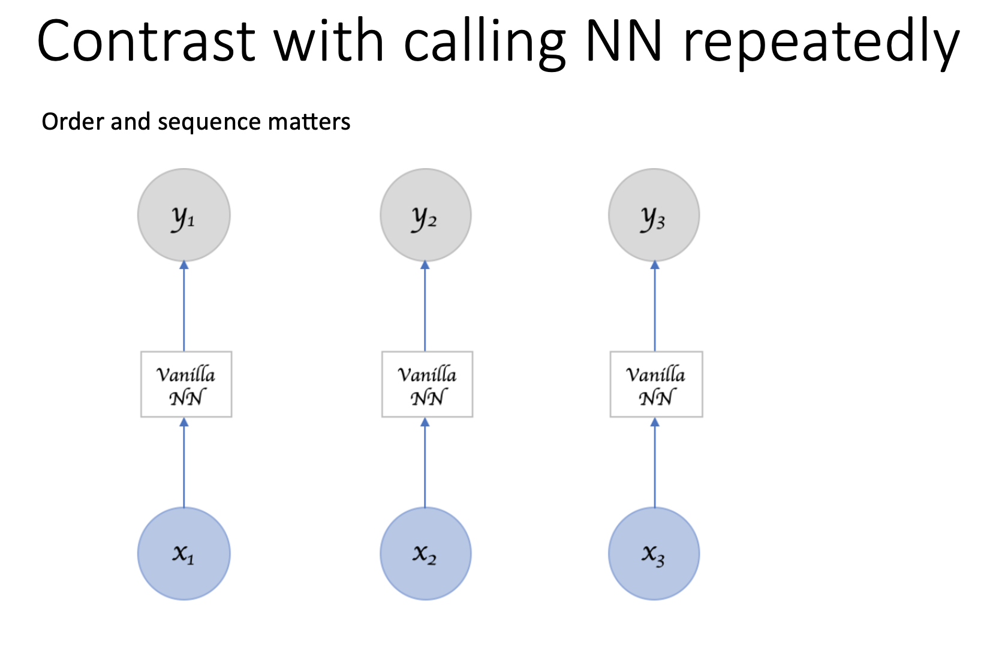
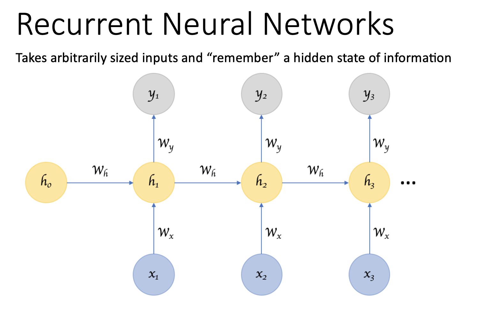
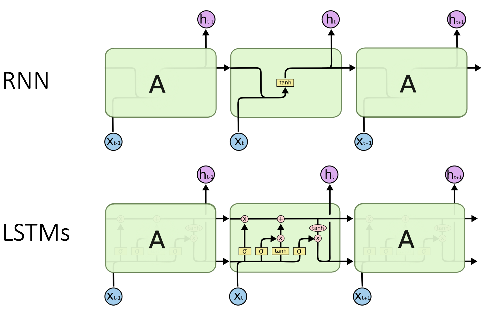
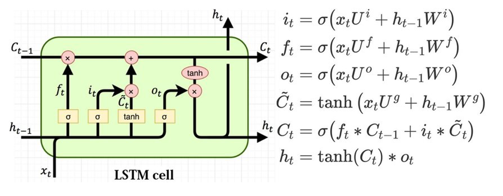

Antonio Fonseca
GeoComput & ML
May 27th, 2021
LSTM Network¶
The Long Short-Term Memory network (LSTM) is a type of Recurrent Neural Network (RNN). A benefit of this type of network is that it can learn and remember over long sequences and does not rely on a pre-specified window lagged observation as input.
By default, an LSTM layer in Keras maintains state between data within one batch. A batch of data is a fixed-sized number of rows from the training dataset that defines how many patterns to process before updating the weights of the network. State in the LSTM layer between batches is cleared by default, therefore we must make the LSTM stateful. This gives us fine-grained control over when state of the LSTM layer is cleared, by calling the reset_states() function.
The LSTM layer expects input to be in a matrix with the dimensions: [samples, time steps, features].
Samples: These are independent observations from the domain, typically rows of data.
Time steps: These are separate time steps of a given variable for a given observation.
Features: These are separate measures observed at the time of observation.
   
Packages to be installed
conda install -c conda-forge keras
pip install numpy==1.19.5
[1]:
import numpy
import matplotlib.pyplot as plt
import pandas
import math
from keras.models import Sequential
from keras.layers import Dense
from keras.layers import LSTM
from sklearn.preprocessing import MinMaxScaler
from sklearn.metrics import mean_squared_error
import tensorflow as tf
import time
from sklearn.metrics import r2_score
from keras.callbacks import EarlyStopping
from keras.models import load_model
from keras.callbacks import ModelCheckpoint
There are three types of gates within a unit: - Forget Gate: conditionally decides what information to throw away from the block. - Input Gate: conditionally decides which values from the input to update the memory state. - Output Gate: conditionally decides what to output based on input and the memory of the block.
LSTM for Regression¶
[9]:
# fix random seed for reproducibility
numpy.random.seed(7)
[ ]:
# load the dataset
dataframe = pandas.read_csv('./txt/airline-passengers.csv', usecols=[1], engine='python')
dataset = dataframe.values
dataset = dataset.astype('float32')
[8]:
# Inspect the dataset
print(dataframe.head())
plt.plot(dataset)
plt.xlabel('Time (monthts)')
plt.ylabel('Monthly total of passangers (x10e3)')
[ ]:
# normalize the dataset
scaler = MinMaxScaler(feature_range=(0, 1))
dataset = scaler.fit_transform(dataset)
[7]:
# split into train and test sets
print('len(dataset): ',len(dataset))
train_size = int(len(dataset) * 0.67)
test_size = len(dataset) - train_size
train, test = dataset[0:train_size,:], dataset[train_size:len(dataset),:]
print(len(train), len(test))
[ ]:
# convert an array of values into a dataset matrix
def create_dataset(dataset, look_back=1):
dataX, dataY = [], []
for i in range(len(dataset)-look_back-1):
a = dataset[i:(i+look_back), 0]
dataX.append(a)
dataY.append(dataset[i + look_back, 0])
return numpy.array(dataX), numpy.array(dataY)
We have some flexibility in how the dataset is framed for the network. We will keep it simple and frame the problem as each time step in the original sequence is one separate sample, with one timestep and one feature.
[6]:
# reshape into X=t and Y=t+1
look_back = 1
# our data is in the form: [samples, features]
trainX, trainY = create_dataset(train, look_back)
testX, testY = create_dataset(test, look_back)
# The LSTM network expects the input data (X) to be provided with a specific array structure in the form of: [samples, time steps, features].
# Reshape input to be [samples, time steps, features]
trainX = numpy.reshape(trainX, (trainX.shape[0], 1, trainX.shape[1]))
testX = numpy.reshape(testX, (testX.shape[0], 1, testX.shape[1]))
print('trainX.shape: ',trainX.shape)
print('trainY.shape: ',trainY.shape)
print('trainX[:5]: ', trainX[:5,:,:].flatten())
print('trainY[:5]: ', trainY[:5])
# create and fit the LSTM network
if 'model' in globals():
print('Deleting "model"')
del model
model = Sequential()
model.add(LSTM(4, input_shape=(1, look_back))) # hidden layer with 4 LSTM blocks or neurons
model.add(Dense(1)) # output layer that makes a single value prediction
start_time = time.time()
# Compile the model
model.compile(loss='mean_squared_error', optimizer=tf.optimizers.Adam(learning_rate=0.001))
# Fit the model
history = model.fit(trainX, trainY, epochs=100, batch_size=1, verbose=0, validation_data=(testX, testY))
# list all data in history
print('keys: ',history.history.keys())
print("--- Elapsed time: %s seconds ---" % (time.time() - start_time))
[12]:
# summarize history for loss
def plot_hist(history):
plt.plot(history.history['loss'])
plt.plot(history.history['val_loss'])
plt.title('model loss')
plt.ylabel('loss')
plt.xlabel('epoch')
plt.legend(['train','val'], loc='upper left')
plt.show()
[10]:
plot_hist(history)
[13]:
# make predictions
def make_preds(trainX,trainY,testX,testY):
trainPredict = model.predict(trainX)
testPredict = model.predict(testX)
# invert predictions
trainPredict = scaler.inverse_transform(trainPredict)
trainY = scaler.inverse_transform([trainY])
testPredict = scaler.inverse_transform(testPredict)
testY = scaler.inverse_transform([testY])
# calculate root mean squared error
trainScore = math.sqrt(mean_squared_error(trainY[0], trainPredict[:,0]))
print('Train Score: %.2f RMSE' % (trainScore))
print('Train R^2: ', r2_score(trainY[0], trainPredict[:,0]))
testScore = math.sqrt(mean_squared_error(testY[0], testPredict[:,0]))
print('Test Score: %.2f RMSE' % (testScore))
print('Test R^2: ', r2_score(testY[0], testPredict[:,0]))
return trainPredict, testPredict
[12]:
trainPredict, testPredict = make_preds(trainX,trainY,testX,testY)
Train Score: 22.69 RMSE
Train R^2: 0.8975356908688723
Test Score: 52.39 RMSE
Test R^2: 0.5481121470797672
[14]:
# shift train predictions for plotting
def plot_preds(trainPredict,testPredict):
trainPredictPlot = numpy.empty_like(dataset)
trainPredictPlot[:, :] = numpy.nan
trainPredictPlot[look_back:len(trainPredict)+look_back, :] = trainPredict
# shift test predictions for plotting
testPredictPlot = numpy.empty_like(dataset)
testPredictPlot[:, :] = numpy.nan
testPredictPlot[len(trainPredict)+(look_back*2)+1:len(dataset)-1, :] = testPredict
# plot baseline and predictions
plt.plot(scaler.inverse_transform(dataset))
plt.plot(trainPredictPlot)
plt.plot(testPredictPlot)
plt.show()
[14]:
plot_preds(trainPredict,testPredict)
[15]:
## Redo using SGD as optimizer
# reshape into X=t and Y=t+1
look_back = 1
trainX, trainY = create_dataset(train, look_back)
testX, testY = create_dataset(test, look_back)
# reshape input to be [samples, time steps, features]
trainX = numpy.reshape(trainX, (trainX.shape[0], 1, trainX.shape[1]))
testX = numpy.reshape(testX, (testX.shape[0], 1, testX.shape[1]))
# create and fit the LSTM network
if 'model' in globals():
print('Deleting "model"')
del model
model = Sequential()
model.add(LSTM(4, input_shape=(1, look_back)))
model.add(Dense(1))
start_time = time.time()
# Compile the model
model.compile(loss='mean_squared_error', optimizer=tf.optimizers.SGD(learning_rate=0.01))
# Fit the model
history = model.fit(trainX, trainY, epochs=300, batch_size=1, verbose=0, validation_data=(testX, testY))
# list all data in history
print('keys: ',history.history.keys())
print("--- Elapsed time: %s seconds ---" % (time.time() - start_time))
Deleting "model"
keys: dict_keys(['loss', 'val_loss'])
--- Elapsed time: 52.98845672607422 seconds ---
[16]:
plot_hist(history)
[17]:
trainPredict, testPredict = make_preds(trainX,trainY,testX,testY)
Train Score: 22.67 RMSE
Train R^2: 0.8977997461023315
Test Score: 53.51 RMSE
Test R^2: 0.5286154831572729
[18]:
plot_preds(trainPredict,testPredict)
LSTM for Regression Using the Window Method¶
We have been using a single feauture/time step to perform prediction. What if we use more samples to perform the prediction?
Let’s see what happens…
[19]:
# reshape into X=t and Y=t+3
look_back = 3
trainX, trainY = create_dataset(train, look_back)
testX, testY = create_dataset(test, look_back)
print('trainX.shape: ',trainX.shape)
print('trainY.shape: ',trainY.shape)
print('trainX[:5]: \n', trainX[:5])
print('trainY[:5]: \n', trainY[:5])
trainX.shape: (92, 3)
trainY.shape: (92,)
trainX[:5]:
[[0.01544401 0.02702703 0.05405405]
[0.02702703 0.05405405 0.04826255]
[0.05405405 0.04826255 0.03281853]
[0.04826255 0.03281853 0.05984557]
[0.03281853 0.05984557 0.08494207]]
trainY[:5]:
[0.04826255 0.03281853 0.05984557 0.08494207 0.08494207]
[20]:
# reshape input to be [samples, time steps, features]
trainX = numpy.reshape(trainX, (trainX.shape[0], 1, trainX.shape[1]))
testX = numpy.reshape(testX, (testX.shape[0], 1, testX.shape[1]))
print('trainX.shape: ',trainX.shape)
print('trainY.shape: ',trainY.shape)
print('trainX[:5]: \n', trainX[:5])
print('trainY[:5]: \n', trainY[:5])
# create and fit the LSTM network
if 'model' in globals():
print('Deleting "model"')
del model
model = Sequential()
model.add(LSTM(4, input_shape=(1, look_back)))
model.add(Dense(1))
start_time = time.time()
# Compile the model
model.compile(loss='mean_squared_error', optimizer='adam')
# Fit the model
history = model.fit(trainX, trainY, epochs=100, batch_size=1, verbose=0, validation_data=(testX, testY))
# list all data in history
print('keys: ',history.history.keys())
print("--- Elapsed time: %s seconds ---" % (time.time() - start_time))
trainX.shape: (92, 1, 3)
trainY.shape: (92,)
trainX[:5]:
[[[0.01544401 0.02702703 0.05405405]]
[[0.02702703 0.05405405 0.04826255]]
[[0.05405405 0.04826255 0.03281853]]
[[0.04826255 0.03281853 0.05984557]]
[[0.03281853 0.05984557 0.08494207]]]
trainY[:5]:
[0.04826255 0.03281853 0.05984557 0.08494207 0.08494207]
Deleting "model"
keys: dict_keys(['loss', 'val_loss'])
--- Elapsed time: 19.347620248794556 seconds ---
[21]:
plot_hist(history)
[22]:
trainPredict, testPredict = make_preds(trainX,trainY,testX,testY)
Train Score: 22.88 RMSE
Train R^2: 0.8944510096236874
Test Score: 58.44 RMSE
Test R^2: 0.42679878247216185
[23]:
plot_preds(trainPredict,testPredict)
Question: Compare the performance obtained on single points versus the window method. What are the advantages of one versus the other?¶
LSTM for Regression with Time Steps¶
Now we will reformulate the problem: instead of dealing with the past observations as independent features, we will consider them as time steps of one input feature.
[24]:
# reshape into X=t and Y=t+1
look_back = 3
trainX, trainY = create_dataset(train, look_back)
testX, testY = create_dataset(test, look_back)
# reshape input to be [samples, time steps, features]
trainX = numpy.reshape(trainX, (trainX.shape[0], trainX.shape[1], 1))
testX = numpy.reshape(testX, (testX.shape[0], testX.shape[1], 1))
print('trainX.shape: ',trainX.shape)
print('trainY.shape: ',trainY.shape)
print('trainX[:5]: \n', trainX[:5])
print('trainY[:5]: \n', trainY[:5])
# create and fit the LSTM network
if 'model' in globals():
print('Deleting "model"')
del model
model = Sequential()
model.add(LSTM(4, input_shape=(look_back, 1)))
model.add(Dense(1))
start_time = time.time()
# Compile the model
model.compile(loss='mean_squared_error', optimizer='adam')
# Fit the model
history = model.fit(trainX, trainY, epochs=100, batch_size=1, verbose=0, validation_data=(testX, testY))
# list all data in history
print('keys: ',history.history.keys())
print("--- Elapsed time: %s seconds ---" % (time.time() - start_time))
trainX.shape: (92, 3, 1)
trainY.shape: (92,)
trainX[:5]:
[[[0.01544401]
[0.02702703]
[0.05405405]]
[[0.02702703]
[0.05405405]
[0.04826255]]
[[0.05405405]
[0.04826255]
[0.03281853]]
[[0.04826255]
[0.03281853]
[0.05984557]]
[[0.03281853]
[0.05984557]
[0.08494207]]]
trainY[:5]:
[0.04826255 0.03281853 0.05984557 0.08494207 0.08494207]
Deleting "model"
keys: dict_keys(['loss', 'val_loss'])
--- Elapsed time: 26.17186951637268 seconds ---
[25]:
plot_hist(history)
[26]:
trainPredict, testPredict = make_preds(trainX,trainY,testX,testY)
Train Score: 21.71 RMSE
Train R^2: 0.9049652778988122
Test Score: 50.57 RMSE
Test R^2: 0.5708315977886538
[27]:
plot_preds(trainPredict,testPredict)
LSTM with Memory Between Batches¶
In order to prevent the LSTM to find dependencies between your batches, it is set to be “stateless” by default. But what if the dependency between the batches is somehow informative for LSTM to learn? Let’s see what happens when we let the LSTM to build state over the entire training sequence.
[33]:
# reshape into X=t and Y=t+1
look_back = 3
trainX, trainY = create_dataset(train, look_back)
testX, testY = create_dataset(test, look_back)
# reshape input to be [samples, time steps, features]
trainX = numpy.reshape(trainX, (trainX.shape[0], trainX.shape[1], 1))
testX = numpy.reshape(testX, (testX.shape[0], testX.shape[1], 1))
# create and fit the LSTM network
batch_size = 1
if 'model' in globals():
print('Deleting "model"')
del model
model = Sequential()
model.add(LSTM(4, batch_input_shape=(batch_size, look_back, 1), stateful=True))
model.add(Dense(1))
start_time = time.time()
model.compile(loss='mean_squared_error', optimizer='adam')
for i in range(100):
history = model.fit(trainX, trainY, epochs=1, batch_size=batch_size, verbose=0, shuffle=False, validation_data=(testX, testY))
model.reset_states()
print('keys: ',history.history.keys())
print("--- Elapsed time: %s seconds ---" % (time.time() - start_time))
Deleting "model"
keys: dict_keys(['loss', 'val_loss'])
--- Elapsed time: 34.12684774398804 seconds ---
[34]:
# make predictions
trainPredict = model.predict(trainX, batch_size=batch_size) #Now we need to specify the batch_size
model.reset_states()
testPredict = model.predict(testX, batch_size=batch_size)
# invert predictions
trainPredict = scaler.inverse_transform(trainPredict)
trainY = scaler.inverse_transform([trainY])
testPredict = scaler.inverse_transform(testPredict)
testY = scaler.inverse_transform([testY])
# calculate root mean squared error
trainScore = math.sqrt(mean_squared_error(trainY[0], trainPredict[:,0]))
print('Train Score: %.2f RMSE' % (trainScore))
print('Train R^2: ', r2_score(trainY[0], trainPredict[:,0]))
testScore = math.sqrt(mean_squared_error(testY[0], testPredict[:,0]))
print('Test Score: %.2f RMSE' % (testScore))
print('Test R^2: ', r2_score(testY[0], testPredict[:,0]))
Train Score: 27.90 RMSE
Train R^2: 0.8429977120429654
Test Score: 61.01 RMSE
Test R^2: 0.37531750526932117
[35]:
# shift train predictions for plotting
trainPredictPlot = numpy.empty_like(dataset)
trainPredictPlot[:, :] = numpy.nan
trainPredictPlot[look_back:len(trainPredict)+look_back, :] = trainPredict
# shift test predictions for plotting
testPredictPlot = numpy.empty_like(dataset)
testPredictPlot[:, :] = numpy.nan
testPredictPlot[len(trainPredict)+(look_back*2)+1:len(dataset)-1, :] = testPredict
# plot baseline and predictions
plt.plot(scaler.inverse_transform(dataset))
plt.plot(trainPredictPlot)
plt.plot(testPredictPlot)
plt.show()
Stacked LSTMs with Memory Between Batches¶
Let’s see what happens with we use a deeper LSTM network
[40]:
# reshape into X=t and Y=t+1
look_back = 3
trainX, trainY = create_dataset(train, look_back)
testX, testY = create_dataset(test, look_back)
# reshape input to be [samples, time steps, features]
trainX = numpy.reshape(trainX, (trainX.shape[0], trainX.shape[1], 1))
testX = numpy.reshape(testX, (testX.shape[0], testX.shape[1], 1))
# create and fit the LSTM network
batch_size = 1
if 'model' in globals():
print('Deleting "model"')
del model
model = Sequential()
model.add(LSTM(4, batch_input_shape=(batch_size, look_back, 1), stateful=True, return_sequences=True))
model.add(LSTM(4, batch_input_shape=(batch_size, look_back, 1), stateful=True))
model.add(Dense(1))
start_time = time.time()
model.compile(loss='mean_squared_error', optimizer='adam')
for i in range(500):
print('Epoch: ',i)
history = model.fit(trainX, trainY, epochs=1, batch_size=batch_size, verbose=1, shuffle=False, validation_data=(testX, testY))
model.reset_states()
print('keys: ',history.history.keys())
print("--- Elapsed time: %s seconds ---" % (time.time() - start_time))
Deleting "model"
Epoch: 0
92/92 [==============================] - 6s 20ms/step - loss: 0.0025 - val_loss: 0.0357
Epoch: 1
92/92 [==============================] - 1s 8ms/step - loss: 0.0099 - val_loss: 0.0334
Epoch: 2
92/92 [==============================] - 1s 7ms/step - loss: 0.0076 - val_loss: 0.0308
Epoch: 3
92/92 [==============================] - 1s 7ms/step - loss: 0.0062 - val_loss: 0.0292
Epoch: 4
92/92 [==============================] - 1s 7ms/step - loss: 0.0056 - val_loss: 0.0284
Epoch: 5
92/92 [==============================] - 1s 8ms/step - loss: 0.0054 - val_loss: 0.0282
Epoch: 6
92/92 [==============================] - 1s 8ms/step - loss: 0.0053 - val_loss: 0.0283
Epoch: 7
92/92 [==============================] - 1s 7ms/step - loss: 0.0053 - val_loss: 0.0285
Epoch: 8
92/92 [==============================] - 1s 7ms/step - loss: 0.0053 - val_loss: 0.0288
Epoch: 9
92/92 [==============================] - 1s 8ms/step - loss: 0.0053 - val_loss: 0.0290
Epoch: 10
92/92 [==============================] - 1s 8ms/step - loss: 0.0053 - val_loss: 0.0293
Epoch: 11
92/92 [==============================] - 1s 9ms/step - loss: 0.0053 - val_loss: 0.0295
Epoch: 12
92/92 [==============================] - 1s 8ms/step - loss: 0.0053 - val_loss: 0.0298
Epoch: 13
92/92 [==============================] - 1s 7ms/step - loss: 0.0053 - val_loss: 0.0300
Epoch: 14
92/92 [==============================] - 1s 10ms/step - loss: 0.0053 - val_loss: 0.0301
Epoch: 15
92/92 [==============================] - 1s 8ms/step - loss: 0.0053 - val_loss: 0.0303
Epoch: 16
92/92 [==============================] - 1s 7ms/step - loss: 0.0052 - val_loss: 0.0304
Epoch: 17
92/92 [==============================] - 1s 7ms/step - loss: 0.0052 - val_loss: 0.0306
Epoch: 18
92/92 [==============================] - 1s 7ms/step - loss: 0.0052 - val_loss: 0.0307
Epoch: 19
92/92 [==============================] - 1s 7ms/step - loss: 0.0052 - val_loss: 0.0308
Epoch: 20
92/92 [==============================] - 1s 7ms/step - loss: 0.0052 - val_loss: 0.0309
Epoch: 21
92/92 [==============================] - 1s 7ms/step - loss: 0.0052 - val_loss: 0.0310
Epoch: 22
92/92 [==============================] - 1s 9ms/step - loss: 0.0052 - val_loss: 0.0310
Epoch: 23
92/92 [==============================] - 1s 9ms/step - loss: 0.0051 - val_loss: 0.0311
Epoch: 24
92/92 [==============================] - 1s 8ms/step - loss: 0.0051 - val_loss: 0.0311
Epoch: 25
92/92 [==============================] - 1s 8ms/step - loss: 0.0051 - val_loss: 0.0312
Epoch: 26
92/92 [==============================] - 1s 7ms/step - loss: 0.0051 - val_loss: 0.0312
Epoch: 27
92/92 [==============================] - 1s 8ms/step - loss: 0.0050 - val_loss: 0.0312
Epoch: 28
92/92 [==============================] - 1s 7ms/step - loss: 0.0050 - val_loss: 0.0312
Epoch: 29
92/92 [==============================] - 1s 7ms/step - loss: 0.0050 - val_loss: 0.0312
Epoch: 30
92/92 [==============================] - 1s 7ms/step - loss: 0.0050 - val_loss: 0.0313
Epoch: 31
92/92 [==============================] - 1s 7ms/step - loss: 0.0049 - val_loss: 0.0313
Epoch: 32
92/92 [==============================] - 1s 7ms/step - loss: 0.0049 - val_loss: 0.0313
Epoch: 33
92/92 [==============================] - 1s 7ms/step - loss: 0.0049 - val_loss: 0.0312
Epoch: 34
92/92 [==============================] - 1s 8ms/step - loss: 0.0049 - val_loss: 0.0312
Epoch: 35
92/92 [==============================] - 1s 8ms/step - loss: 0.0048 - val_loss: 0.0312
Epoch: 36
92/92 [==============================] - 1s 8ms/step - loss: 0.0048 - val_loss: 0.0312
Epoch: 37
92/92 [==============================] - 1s 7ms/step - loss: 0.0048 - val_loss: 0.0312
Epoch: 38
92/92 [==============================] - 1s 8ms/step - loss: 0.0047 - val_loss: 0.0312
Epoch: 39
92/92 [==============================] - 1s 8ms/step - loss: 0.0047 - val_loss: 0.0312
Epoch: 40
92/92 [==============================] - 1s 7ms/step - loss: 0.0047 - val_loss: 0.0312
Epoch: 41
92/92 [==============================] - 1s 5ms/step - loss: 0.0046 - val_loss: 0.0312
Epoch: 42
92/92 [==============================] - 1s 7ms/step - loss: 0.0046 - val_loss: 0.0312
Epoch: 43
92/92 [==============================] - 1s 7ms/step - loss: 0.0045 - val_loss: 0.0312
Epoch: 44
92/92 [==============================] - 1s 7ms/step - loss: 0.0045 - val_loss: 0.0312
Epoch: 45
92/92 [==============================] - 1s 9ms/step - loss: 0.0045 - val_loss: 0.0312
Epoch: 46
92/92 [==============================] - 1s 7ms/step - loss: 0.0044 - val_loss: 0.0312
Epoch: 47
92/92 [==============================] - 1s 6ms/step - loss: 0.0044 - val_loss: 0.0312
Epoch: 48
92/92 [==============================] - 1s 8ms/step - loss: 0.0043 - val_loss: 0.0312
Epoch: 49
92/92 [==============================] - 1s 10ms/step - loss: 0.0043 - val_loss: 0.0312
Epoch: 50
92/92 [==============================] - 1s 8ms/step - loss: 0.0042 - val_loss: 0.0313
Epoch: 51
92/92 [==============================] - 1s 8ms/step - loss: 0.0042 - val_loss: 0.0313
Epoch: 52
92/92 [==============================] - 1s 8ms/step - loss: 0.0041 - val_loss: 0.0313
Epoch: 53
92/92 [==============================] - 1s 9ms/step - loss: 0.0041 - val_loss: 0.0313
Epoch: 54
92/92 [==============================] - 1s 8ms/step - loss: 0.0040 - val_loss: 0.0312
Epoch: 55
92/92 [==============================] - 1s 8ms/step - loss: 0.0039 - val_loss: 0.0311
Epoch: 56
92/92 [==============================] - 1s 7ms/step - loss: 0.0039 - val_loss: 0.0310
Epoch: 57
92/92 [==============================] - 0s 5ms/step - loss: 0.0038 - val_loss: 0.0309
Epoch: 58
92/92 [==============================] - 1s 7ms/step - loss: 0.0037 - val_loss: 0.0308
Epoch: 59
92/92 [==============================] - 1s 8ms/step - loss: 0.0037 - val_loss: 0.0306
Epoch: 60
92/92 [==============================] - 1s 7ms/step - loss: 0.0036 - val_loss: 0.0304
Epoch: 61
92/92 [==============================] - 1s 6ms/step - loss: 0.0035 - val_loss: 0.0301
Epoch: 62
92/92 [==============================] - 1s 6ms/step - loss: 0.0035 - val_loss: 0.0299
Epoch: 63
92/92 [==============================] - 1s 10ms/step - loss: 0.0034 - val_loss: 0.0295
Epoch: 64
92/92 [==============================] - 1s 8ms/step - loss: 0.0033 - val_loss: 0.0292
Epoch: 65
92/92 [==============================] - 1s 8ms/step - loss: 0.0032 - val_loss: 0.0287
Epoch: 66
92/92 [==============================] - 1s 7ms/step - loss: 0.0031 - val_loss: 0.0283
Epoch: 67
92/92 [==============================] - 1s 8ms/step - loss: 0.0031 - val_loss: 0.0278
Epoch: 68
92/92 [==============================] - 1s 9ms/step - loss: 0.0030 - val_loss: 0.0272
Epoch: 69
92/92 [==============================] - 1s 7ms/step - loss: 0.0029 - val_loss: 0.0266
Epoch: 70
92/92 [==============================] - 1s 7ms/step - loss: 0.0028 - val_loss: 0.0260
Epoch: 71
92/92 [==============================] - 1s 8ms/step - loss: 0.0027 - val_loss: 0.0254
Epoch: 72
92/92 [==============================] - 1s 7ms/step - loss: 0.0026 - val_loss: 0.0247
Epoch: 73
92/92 [==============================] - 1s 8ms/step - loss: 0.0025 - val_loss: 0.0241
Epoch: 74
92/92 [==============================] - 1s 7ms/step - loss: 0.0024 - val_loss: 0.0235
Epoch: 75
92/92 [==============================] - 1s 8ms/step - loss: 0.0024 - val_loss: 0.0229
Epoch: 76
92/92 [==============================] - 1s 7ms/step - loss: 0.0023 - val_loss: 0.0223
Epoch: 77
92/92 [==============================] - 1s 6ms/step - loss: 0.0022 - val_loss: 0.0217
Epoch: 78
92/92 [==============================] - 1s 8ms/step - loss: 0.0022 - val_loss: 0.0212
Epoch: 79
92/92 [==============================] - 1s 7ms/step - loss: 0.0021 - val_loss: 0.0207
Epoch: 80
92/92 [==============================] - 1s 7ms/step - loss: 0.0021 - val_loss: 0.0203
Epoch: 81
92/92 [==============================] - 1s 7ms/step - loss: 0.0020 - val_loss: 0.0198
Epoch: 82
92/92 [==============================] - 1s 7ms/step - loss: 0.0020 - val_loss: 0.0194
Epoch: 83
92/92 [==============================] - 1s 7ms/step - loss: 0.0020 - val_loss: 0.0191
Epoch: 84
92/92 [==============================] - 1s 8ms/step - loss: 0.0019 - val_loss: 0.0187
Epoch: 85
92/92 [==============================] - 1s 7ms/step - loss: 0.0019 - val_loss: 0.0184
Epoch: 86
92/92 [==============================] - 1s 8ms/step - loss: 0.0019 - val_loss: 0.0182
Epoch: 87
92/92 [==============================] - 1s 8ms/step - loss: 0.0019 - val_loss: 0.0179
Epoch: 88
92/92 [==============================] - 1s 7ms/step - loss: 0.0019 - val_loss: 0.0177
Epoch: 89
92/92 [==============================] - 0s 5ms/step - loss: 0.0018 - val_loss: 0.0175
Epoch: 90
92/92 [==============================] - 0s 5ms/step - loss: 0.0018 - val_loss: 0.0173
Epoch: 91
92/92 [==============================] - 1s 8ms/step - loss: 0.0018 - val_loss: 0.0172
Epoch: 92
92/92 [==============================] - 1s 7ms/step - loss: 0.0018 - val_loss: 0.0170
Epoch: 93
92/92 [==============================] - 1s 8ms/step - loss: 0.0018 - val_loss: 0.0169
Epoch: 94
92/92 [==============================] - 1s 7ms/step - loss: 0.0018 - val_loss: 0.0168
Epoch: 95
92/92 [==============================] - 1s 7ms/step - loss: 0.0018 - val_loss: 0.0167
Epoch: 96
92/92 [==============================] - 1s 7ms/step - loss: 0.0018 - val_loss: 0.0166
Epoch: 97
92/92 [==============================] - 1s 8ms/step - loss: 0.0018 - val_loss: 0.0165
Epoch: 98
92/92 [==============================] - 1s 7ms/step - loss: 0.0018 - val_loss: 0.0164
Epoch: 99
92/92 [==============================] - 1s 7ms/step - loss: 0.0017 - val_loss: 0.0163
Epoch: 100
92/92 [==============================] - 1s 8ms/step - loss: 0.0017 - val_loss: 0.0163
Epoch: 101
92/92 [==============================] - 1s 6ms/step - loss: 0.0017 - val_loss: 0.0162
Epoch: 102
92/92 [==============================] - 1s 8ms/step - loss: 0.0017 - val_loss: 0.0161
Epoch: 103
92/92 [==============================] - 1s 8ms/step - loss: 0.0017 - val_loss: 0.0161
Epoch: 104
92/92 [==============================] - 1s 7ms/step - loss: 0.0017 - val_loss: 0.0160
Epoch: 105
92/92 [==============================] - 1s 8ms/step - loss: 0.0017 - val_loss: 0.0160
Epoch: 106
92/92 [==============================] - 1s 8ms/step - loss: 0.0017 - val_loss: 0.0160
Epoch: 107
92/92 [==============================] - 1s 8ms/step - loss: 0.0017 - val_loss: 0.0159
Epoch: 108
92/92 [==============================] - 1s 8ms/step - loss: 0.0017 - val_loss: 0.0159
Epoch: 109
92/92 [==============================] - 1s 8ms/step - loss: 0.0017 - val_loss: 0.0159
Epoch: 110
92/92 [==============================] - 1s 10ms/step - loss: 0.0017 - val_loss: 0.0158
Epoch: 111
92/92 [==============================] - 1s 7ms/step - loss: 0.0017 - val_loss: 0.0158
Epoch: 112
92/92 [==============================] - 1s 9ms/step - loss: 0.0017 - val_loss: 0.0158
Epoch: 113
92/92 [==============================] - 1s 10ms/step - loss: 0.0016 - val_loss: 0.0158
Epoch: 114
92/92 [==============================] - 1s 8ms/step - loss: 0.0016 - val_loss: 0.0157
Epoch: 115
92/92 [==============================] - 1s 9ms/step - loss: 0.0016 - val_loss: 0.0157
Epoch: 116
92/92 [==============================] - 1s 8ms/step - loss: 0.0016 - val_loss: 0.0157
Epoch: 117
92/92 [==============================] - 1s 8ms/step - loss: 0.0016 - val_loss: 0.0157
Epoch: 118
92/92 [==============================] - 1s 7ms/step - loss: 0.0016 - val_loss: 0.0157
Epoch: 119
92/92 [==============================] - 1s 8ms/step - loss: 0.0016 - val_loss: 0.0156
Epoch: 120
92/92 [==============================] - 1s 7ms/step - loss: 0.0016 - val_loss: 0.0156
Epoch: 121
92/92 [==============================] - 1s 8ms/step - loss: 0.0016 - val_loss: 0.0156
Epoch: 122
92/92 [==============================] - 1s 8ms/step - loss: 0.0016 - val_loss: 0.0156
Epoch: 123
92/92 [==============================] - 1s 8ms/step - loss: 0.0016 - val_loss: 0.0156
Epoch: 124
92/92 [==============================] - 1s 7ms/step - loss: 0.0016 - val_loss: 0.0156
Epoch: 125
92/92 [==============================] - 1s 6ms/step - loss: 0.0016 - val_loss: 0.0156
Epoch: 126
92/92 [==============================] - 1s 7ms/step - loss: 0.0016 - val_loss: 0.0156
Epoch: 127
92/92 [==============================] - 1s 7ms/step - loss: 0.0016 - val_loss: 0.0155
Epoch: 128
92/92 [==============================] - 1s 8ms/step - loss: 0.0016 - val_loss: 0.0155
Epoch: 129
92/92 [==============================] - 1s 8ms/step - loss: 0.0016 - val_loss: 0.0155
Epoch: 130
92/92 [==============================] - 1s 8ms/step - loss: 0.0016 - val_loss: 0.0156
Epoch: 131
92/92 [==============================] - 1s 7ms/step - loss: 0.0016 - val_loss: 0.0156
Epoch: 132
92/92 [==============================] - 1s 8ms/step - loss: 0.0016 - val_loss: 0.0156
Epoch: 133
92/92 [==============================] - 1s 8ms/step - loss: 0.0016 - val_loss: 0.0156
Epoch: 134
92/92 [==============================] - 1s 9ms/step - loss: 0.0016 - val_loss: 0.0156
Epoch: 135
92/92 [==============================] - 1s 7ms/step - loss: 0.0016 - val_loss: 0.0156
Epoch: 136
92/92 [==============================] - 1s 8ms/step - loss: 0.0016 - val_loss: 0.0156
Epoch: 137
92/92 [==============================] - 1s 8ms/step - loss: 0.0016 - val_loss: 0.0157
Epoch: 138
92/92 [==============================] - 1s 6ms/step - loss: 0.0016 - val_loss: 0.0157
Epoch: 139
92/92 [==============================] - 1s 7ms/step - loss: 0.0016 - val_loss: 0.0157
Epoch: 140
92/92 [==============================] - 1s 8ms/step - loss: 0.0016 - val_loss: 0.0158
Epoch: 141
92/92 [==============================] - 1s 8ms/step - loss: 0.0016 - val_loss: 0.0158
Epoch: 142
92/92 [==============================] - 1s 7ms/step - loss: 0.0016 - val_loss: 0.0158
Epoch: 143
92/92 [==============================] - 1s 7ms/step - loss: 0.0016 - val_loss: 0.0159
Epoch: 144
92/92 [==============================] - 1s 9ms/step - loss: 0.0016 - val_loss: 0.0159
Epoch: 145
92/92 [==============================] - 1s 8ms/step - loss: 0.0016 - val_loss: 0.0160
Epoch: 146
92/92 [==============================] - 1s 8ms/step - loss: 0.0015 - val_loss: 0.0160
Epoch: 147
92/92 [==============================] - 1s 10ms/step - loss: 0.0015 - val_loss: 0.0161
Epoch: 148
92/92 [==============================] - 1s 10ms/step - loss: 0.0015 - val_loss: 0.0161
Epoch: 149
92/92 [==============================] - 1s 8ms/step - loss: 0.0015 - val_loss: 0.0161
Epoch: 150
92/92 [==============================] - 1s 7ms/step - loss: 0.0015 - val_loss: 0.0162
Epoch: 151
92/92 [==============================] - 1s 8ms/step - loss: 0.0015 - val_loss: 0.0162
Epoch: 152
92/92 [==============================] - 1s 7ms/step - loss: 0.0015 - val_loss: 0.0163
Epoch: 153
92/92 [==============================] - 1s 9ms/step - loss: 0.0015 - val_loss: 0.0164
Epoch: 154
92/92 [==============================] - 1s 9ms/step - loss: 0.0015 - val_loss: 0.0164
Epoch: 155
92/92 [==============================] - 1s 9ms/step - loss: 0.0015 - val_loss: 0.0165
Epoch: 156
92/92 [==============================] - 1s 10ms/step - loss: 0.0015 - val_loss: 0.0165
Epoch: 157
92/92 [==============================] - 1s 8ms/step - loss: 0.0015 - val_loss: 0.0166
Epoch: 158
92/92 [==============================] - 1s 7ms/step - loss: 0.0015 - val_loss: 0.0166
Epoch: 159
92/92 [==============================] - 1s 9ms/step - loss: 0.0015 - val_loss: 0.0167
Epoch: 160
92/92 [==============================] - 1s 9ms/step - loss: 0.0015 - val_loss: 0.0167
Epoch: 161
92/92 [==============================] - 1s 8ms/step - loss: 0.0015 - val_loss: 0.0168
Epoch: 162
92/92 [==============================] - 1s 9ms/step - loss: 0.0015 - val_loss: 0.0168
Epoch: 163
92/92 [==============================] - 1s 8ms/step - loss: 0.0015 - val_loss: 0.0169
Epoch: 164
92/92 [==============================] - 1s 7ms/step - loss: 0.0015 - val_loss: 0.0169
Epoch: 165
92/92 [==============================] - 1s 9ms/step - loss: 0.0015 - val_loss: 0.0170
Epoch: 166
92/92 [==============================] - 1s 8ms/step - loss: 0.0015 - val_loss: 0.0170
Epoch: 167
92/92 [==============================] - 1s 12ms/step - loss: 0.0015 - val_loss: 0.0171
Epoch: 168
92/92 [==============================] - 1s 11ms/step - loss: 0.0015 - val_loss: 0.0171
Epoch: 169
92/92 [==============================] - 1s 10ms/step - loss: 0.0015 - val_loss: 0.0172
Epoch: 170
92/92 [==============================] - 1s 11ms/step - loss: 0.0015 - val_loss: 0.0172
Epoch: 171
92/92 [==============================] - 1s 11ms/step - loss: 0.0015 - val_loss: 0.0173
Epoch: 172
92/92 [==============================] - 1s 11ms/step - loss: 0.0015 - val_loss: 0.0173
Epoch: 173
92/92 [==============================] - 1s 8ms/step - loss: 0.0015 - val_loss: 0.0174
Epoch: 174
92/92 [==============================] - 1s 11ms/step - loss: 0.0015 - val_loss: 0.0174
Epoch: 175
92/92 [==============================] - 1s 10ms/step - loss: 0.0015 - val_loss: 0.0175
Epoch: 176
92/92 [==============================] - 1s 11ms/step - loss: 0.0015 - val_loss: 0.0175
Epoch: 177
92/92 [==============================] - 1s 8ms/step - loss: 0.0015 - val_loss: 0.0175
Epoch: 178
92/92 [==============================] - 1s 10ms/step - loss: 0.0015 - val_loss: 0.0176
Epoch: 179
92/92 [==============================] - 1s 11ms/step - loss: 0.0015 - val_loss: 0.0176
Epoch: 180
92/92 [==============================] - 1s 11ms/step - loss: 0.0015 - val_loss: 0.0177
Epoch: 181
92/92 [==============================] - 1s 11ms/step - loss: 0.0015 - val_loss: 0.0177
Epoch: 182
92/92 [==============================] - 1s 9ms/step - loss: 0.0015 - val_loss: 0.0177
Epoch: 183
92/92 [==============================] - 1s 8ms/step - loss: 0.0015 - val_loss: 0.0178
Epoch: 184
92/92 [==============================] - 1s 11ms/step - loss: 0.0015 - val_loss: 0.0178
Epoch: 185
92/92 [==============================] - 1s 10ms/step - loss: 0.0015 - val_loss: 0.0178
Epoch: 186
92/92 [==============================] - 1s 9ms/step - loss: 0.0015 - val_loss: 0.0179
Epoch: 187
92/92 [==============================] - 1s 10ms/step - loss: 0.0015 - val_loss: 0.0179
Epoch: 188
92/92 [==============================] - 1s 10ms/step - loss: 0.0015 - val_loss: 0.0179
Epoch: 189
92/92 [==============================] - 1s 10ms/step - loss: 0.0015 - val_loss: 0.0179
Epoch: 190
92/92 [==============================] - 1s 9ms/step - loss: 0.0015 - val_loss: 0.0180
Epoch: 191
92/92 [==============================] - 1s 10ms/step - loss: 0.0015 - val_loss: 0.0180
Epoch: 192
92/92 [==============================] - 1s 11ms/step - loss: 0.0015 - val_loss: 0.0180
Epoch: 193
92/92 [==============================] - 1s 10ms/step - loss: 0.0015 - val_loss: 0.0180
Epoch: 194
92/92 [==============================] - 1s 10ms/step - loss: 0.0015 - val_loss: 0.0181
Epoch: 195
92/92 [==============================] - 1s 9ms/step - loss: 0.0015 - val_loss: 0.0181
Epoch: 196
92/92 [==============================] - 1s 9ms/step - loss: 0.0015 - val_loss: 0.0181
Epoch: 197
92/92 [==============================] - 1s 10ms/step - loss: 0.0015 - val_loss: 0.0181
Epoch: 198
92/92 [==============================] - 1s 10ms/step - loss: 0.0015 - val_loss: 0.0181
Epoch: 199
92/92 [==============================] - 1s 10ms/step - loss: 0.0015 - val_loss: 0.0181
Epoch: 200
92/92 [==============================] - 1s 10ms/step - loss: 0.0015 - val_loss: 0.0181
Epoch: 201
92/92 [==============================] - 1s 9ms/step - loss: 0.0015 - val_loss: 0.0181
Epoch: 202
92/92 [==============================] - 1s 9ms/step - loss: 0.0015 - val_loss: 0.0181
Epoch: 203
92/92 [==============================] - 1s 10ms/step - loss: 0.0015 - val_loss: 0.0181
Epoch: 204
92/92 [==============================] - 1s 10ms/step - loss: 0.0015 - val_loss: 0.0181
Epoch: 205
92/92 [==============================] - 1s 9ms/step - loss: 0.0015 - val_loss: 0.0181
Epoch: 206
92/92 [==============================] - 1s 10ms/step - loss: 0.0015 - val_loss: 0.0181
Epoch: 207
92/92 [==============================] - 1s 11ms/step - loss: 0.0015 - val_loss: 0.0181
Epoch: 208
92/92 [==============================] - 1s 10ms/step - loss: 0.0015 - val_loss: 0.0181
Epoch: 209
92/92 [==============================] - 1s 10ms/step - loss: 0.0015 - val_loss: 0.0180
Epoch: 210
92/92 [==============================] - 1s 12ms/step - loss: 0.0015 - val_loss: 0.0180
Epoch: 211
92/92 [==============================] - 2s 17ms/step - loss: 0.0015 - val_loss: 0.0180
Epoch: 212
92/92 [==============================] - 1s 12ms/step - loss: 0.0015 - val_loss: 0.0180
Epoch: 213
92/92 [==============================] - 1s 10ms/step - loss: 0.0015 - val_loss: 0.0179
Epoch: 214
92/92 [==============================] - 1s 10ms/step - loss: 0.0015 - val_loss: 0.0179
Epoch: 215
92/92 [==============================] - 1s 11ms/step - loss: 0.0015 - val_loss: 0.0179
Epoch: 216
92/92 [==============================] - 1s 10ms/step - loss: 0.0015 - val_loss: 0.0178
Epoch: 217
92/92 [==============================] - 1s 9ms/step - loss: 0.0015 - val_loss: 0.0178
Epoch: 218
92/92 [==============================] - 1s 8ms/step - loss: 0.0015 - val_loss: 0.0178
Epoch: 219
92/92 [==============================] - 1s 10ms/step - loss: 0.0015 - val_loss: 0.0177
Epoch: 220
92/92 [==============================] - 1s 9ms/step - loss: 0.0015 - val_loss: 0.0177
Epoch: 221
92/92 [==============================] - 1s 10ms/step - loss: 0.0015 - val_loss: 0.0176
Epoch: 222
92/92 [==============================] - 1s 10ms/step - loss: 0.0015 - val_loss: 0.0176
Epoch: 223
92/92 [==============================] - 1s 9ms/step - loss: 0.0015 - val_loss: 0.0175
Epoch: 224
92/92 [==============================] - 1s 11ms/step - loss: 0.0015 - val_loss: 0.0175
Epoch: 225
92/92 [==============================] - 1s 11ms/step - loss: 0.0015 - val_loss: 0.0174
Epoch: 226
92/92 [==============================] - 1s 11ms/step - loss: 0.0015 - val_loss: 0.0174
Epoch: 227
92/92 [==============================] - 1s 10ms/step - loss: 0.0015 - val_loss: 0.0173
Epoch: 228
92/92 [==============================] - 1s 10ms/step - loss: 0.0015 - val_loss: 0.0173
Epoch: 229
92/92 [==============================] - 1s 13ms/step - loss: 0.0015 - val_loss: 0.0172
Epoch: 230
92/92 [==============================] - 1s 11ms/step - loss: 0.0015 - val_loss: 0.0172
Epoch: 231
92/92 [==============================] - 1s 12ms/step - loss: 0.0015 - val_loss: 0.0171
Epoch: 232
92/92 [==============================] - 1s 11ms/step - loss: 0.0015 - val_loss: 0.0171
Epoch: 233
92/92 [==============================] - 1s 10ms/step - loss: 0.0015 - val_loss: 0.0170
Epoch: 234
92/92 [==============================] - 1s 11ms/step - loss: 0.0015 - val_loss: 0.0169
Epoch: 235
92/92 [==============================] - 1s 11ms/step - loss: 0.0015 - val_loss: 0.0169
Epoch: 236
92/92 [==============================] - 1s 11ms/step - loss: 0.0015 - val_loss: 0.0168
Epoch: 237
92/92 [==============================] - 1s 10ms/step - loss: 0.0015 - val_loss: 0.0168
Epoch: 238
92/92 [==============================] - 1s 11ms/step - loss: 0.0015 - val_loss: 0.0167
Epoch: 239
92/92 [==============================] - 1s 10ms/step - loss: 0.0015 - val_loss: 0.0166
Epoch: 240
92/92 [==============================] - 1s 10ms/step - loss: 0.0015 - val_loss: 0.0166
Epoch: 241
92/92 [==============================] - 1s 10ms/step - loss: 0.0015 - val_loss: 0.0165
Epoch: 242
92/92 [==============================] - 1s 10ms/step - loss: 0.0015 - val_loss: 0.0164
Epoch: 243
92/92 [==============================] - 1s 10ms/step - loss: 0.0015 - val_loss: 0.0164
Epoch: 244
92/92 [==============================] - 1s 10ms/step - loss: 0.0015 - val_loss: 0.0163
Epoch: 245
92/92 [==============================] - 1s 10ms/step - loss: 0.0015 - val_loss: 0.0163
Epoch: 246
92/92 [==============================] - 1s 12ms/step - loss: 0.0015 - val_loss: 0.0162
Epoch: 247
92/92 [==============================] - 1s 12ms/step - loss: 0.0015 - val_loss: 0.0161
Epoch: 248
92/92 [==============================] - 1s 11ms/step - loss: 0.0015 - val_loss: 0.0161
Epoch: 249
92/92 [==============================] - 1s 9ms/step - loss: 0.0015 - val_loss: 0.0160
Epoch: 250
92/92 [==============================] - 1s 12ms/step - loss: 0.0015 - val_loss: 0.0160
Epoch: 251
92/92 [==============================] - 1s 12ms/step - loss: 0.0015 - val_loss: 0.0159
Epoch: 252
92/92 [==============================] - 1s 11ms/step - loss: 0.0015 - val_loss: 0.0158
Epoch: 253
92/92 [==============================] - 1s 10ms/step - loss: 0.0015 - val_loss: 0.0158
Epoch: 254
92/92 [==============================] - 1s 10ms/step - loss: 0.0015 - val_loss: 0.0157
Epoch: 255
92/92 [==============================] - 1s 10ms/step - loss: 0.0015 - val_loss: 0.0156
Epoch: 256
92/92 [==============================] - 1s 10ms/step - loss: 0.0015 - val_loss: 0.0156
Epoch: 257
92/92 [==============================] - 1s 10ms/step - loss: 0.0015 - val_loss: 0.0155
Epoch: 258
92/92 [==============================] - 1s 10ms/step - loss: 0.0014 - val_loss: 0.0155
Epoch: 259
92/92 [==============================] - 1s 10ms/step - loss: 0.0014 - val_loss: 0.0154
Epoch: 260
92/92 [==============================] - 1s 10ms/step - loss: 0.0014 - val_loss: 0.0153
Epoch: 261
92/92 [==============================] - 1s 10ms/step - loss: 0.0014 - val_loss: 0.0153
Epoch: 262
92/92 [==============================] - 1s 11ms/step - loss: 0.0014 - val_loss: 0.0152
Epoch: 263
92/92 [==============================] - 1s 10ms/step - loss: 0.0014 - val_loss: 0.0152
Epoch: 264
92/92 [==============================] - 1s 11ms/step - loss: 0.0014 - val_loss: 0.0151
Epoch: 265
92/92 [==============================] - 1s 10ms/step - loss: 0.0014 - val_loss: 0.0150
Epoch: 266
92/92 [==============================] - 1s 10ms/step - loss: 0.0014 - val_loss: 0.0150
Epoch: 267
92/92 [==============================] - 1s 11ms/step - loss: 0.0014 - val_loss: 0.0149
Epoch: 268
92/92 [==============================] - 1s 11ms/step - loss: 0.0014 - val_loss: 0.0149
Epoch: 269
92/92 [==============================] - 1s 10ms/step - loss: 0.0014 - val_loss: 0.0148
Epoch: 270
92/92 [==============================] - 1s 9ms/step - loss: 0.0014 - val_loss: 0.0147
Epoch: 271
92/92 [==============================] - 1s 10ms/step - loss: 0.0014 - val_loss: 0.0147
Epoch: 272
92/92 [==============================] - 1s 10ms/step - loss: 0.0014 - val_loss: 0.0146
Epoch: 273
92/92 [==============================] - 1s 10ms/step - loss: 0.0014 - val_loss: 0.0146
Epoch: 274
92/92 [==============================] - 1s 9ms/step - loss: 0.0014 - val_loss: 0.0145
Epoch: 275
92/92 [==============================] - 1s 10ms/step - loss: 0.0014 - val_loss: 0.0145
Epoch: 276
92/92 [==============================] - 1s 10ms/step - loss: 0.0014 - val_loss: 0.0144
Epoch: 277
92/92 [==============================] - 1s 10ms/step - loss: 0.0014 - val_loss: 0.0144
Epoch: 278
92/92 [==============================] - 1s 12ms/step - loss: 0.0014 - val_loss: 0.0143
Epoch: 279
92/92 [==============================] - 1s 11ms/step - loss: 0.0014 - val_loss: 0.0142
Epoch: 280
92/92 [==============================] - 1s 10ms/step - loss: 0.0014 - val_loss: 0.0142
Epoch: 281
92/92 [==============================] - 1s 11ms/step - loss: 0.0014 - val_loss: 0.0141
Epoch: 282
92/92 [==============================] - 1s 11ms/step - loss: 0.0014 - val_loss: 0.0141
Epoch: 283
92/92 [==============================] - 1s 10ms/step - loss: 0.0014 - val_loss: 0.0140
Epoch: 284
92/92 [==============================] - 1s 11ms/step - loss: 0.0014 - val_loss: 0.0140
Epoch: 285
92/92 [==============================] - 1s 13ms/step - loss: 0.0014 - val_loss: 0.0139
Epoch: 286
92/92 [==============================] - 1s 11ms/step - loss: 0.0014 - val_loss: 0.0139
Epoch: 287
92/92 [==============================] - 1s 11ms/step - loss: 0.0014 - val_loss: 0.0138
Epoch: 288
92/92 [==============================] - 1s 11ms/step - loss: 0.0014 - val_loss: 0.0138
Epoch: 289
92/92 [==============================] - 1s 11ms/step - loss: 0.0014 - val_loss: 0.0137
Epoch: 290
92/92 [==============================] - 1s 11ms/step - loss: 0.0014 - val_loss: 0.0137
Epoch: 291
92/92 [==============================] - 1s 11ms/step - loss: 0.0014 - val_loss: 0.0136
Epoch: 292
92/92 [==============================] - 1s 11ms/step - loss: 0.0014 - val_loss: 0.0136
Epoch: 293
92/92 [==============================] - 1s 10ms/step - loss: 0.0014 - val_loss: 0.0135
Epoch: 294
92/92 [==============================] - 1s 12ms/step - loss: 0.0014 - val_loss: 0.0135
Epoch: 295
92/92 [==============================] - 1s 11ms/step - loss: 0.0014 - val_loss: 0.0134
Epoch: 296
92/92 [==============================] - 1s 11ms/step - loss: 0.0014 - val_loss: 0.0133
Epoch: 297
92/92 [==============================] - 1s 10ms/step - loss: 0.0014 - val_loss: 0.0133
Epoch: 298
92/92 [==============================] - 1s 10ms/step - loss: 0.0014 - val_loss: 0.0132
Epoch: 299
92/92 [==============================] - 1s 13ms/step - loss: 0.0014 - val_loss: 0.0132
Epoch: 300
92/92 [==============================] - 1s 11ms/step - loss: 0.0014 - val_loss: 0.0131
Epoch: 301
92/92 [==============================] - 1s 11ms/step - loss: 0.0014 - val_loss: 0.0130
Epoch: 302
92/92 [==============================] - 1s 10ms/step - loss: 0.0014 - val_loss: 0.0130
Epoch: 303
92/92 [==============================] - 1s 12ms/step - loss: 0.0014 - val_loss: 0.0129
Epoch: 304
92/92 [==============================] - 1s 12ms/step - loss: 0.0014 - val_loss: 0.0129
Epoch: 305
92/92 [==============================] - 1s 12ms/step - loss: 0.0014 - val_loss: 0.0128
Epoch: 306
92/92 [==============================] - 1s 11ms/step - loss: 0.0014 - val_loss: 0.0127
Epoch: 307
92/92 [==============================] - 1s 12ms/step - loss: 0.0014 - val_loss: 0.0126
Epoch: 308
92/92 [==============================] - 1s 12ms/step - loss: 0.0014 - val_loss: 0.0125
Epoch: 309
92/92 [==============================] - 1s 13ms/step - loss: 0.0014 - val_loss: 0.0125
Epoch: 310
92/92 [==============================] - 1s 10ms/step - loss: 0.0014 - val_loss: 0.0124
Epoch: 311
92/92 [==============================] - 1s 11ms/step - loss: 0.0014 - val_loss: 0.0123
Epoch: 312
92/92 [==============================] - 1s 12ms/step - loss: 0.0014 - val_loss: 0.0122
Epoch: 313
92/92 [==============================] - 1s 12ms/step - loss: 0.0014 - val_loss: 0.0121
Epoch: 314
92/92 [==============================] - 1s 12ms/step - loss: 0.0014 - val_loss: 0.0120
Epoch: 315
92/92 [==============================] - 1s 12ms/step - loss: 0.0014 - val_loss: 0.0119
Epoch: 316
92/92 [==============================] - 1s 13ms/step - loss: 0.0014 - val_loss: 0.0118
Epoch: 317
92/92 [==============================] - 1s 10ms/step - loss: 0.0014 - val_loss: 0.0117
Epoch: 318
92/92 [==============================] - 1s 12ms/step - loss: 0.0014 - val_loss: 0.0116
Epoch: 319
92/92 [==============================] - 1s 12ms/step - loss: 0.0014 - val_loss: 0.0115
Epoch: 320
92/92 [==============================] - 1s 13ms/step - loss: 0.0014 - val_loss: 0.0113
Epoch: 321
92/92 [==============================] - 1s 11ms/step - loss: 0.0014 - val_loss: 0.0112
Epoch: 322
92/92 [==============================] - 1s 12ms/step - loss: 0.0014 - val_loss: 0.0111
Epoch: 323
92/92 [==============================] - 1s 13ms/step - loss: 0.0013 - val_loss: 0.0110
Epoch: 324
92/92 [==============================] - 1s 13ms/step - loss: 0.0013 - val_loss: 0.0109
Epoch: 325
92/92 [==============================] - 1s 11ms/step - loss: 0.0013 - val_loss: 0.0108
Epoch: 326
92/92 [==============================] - 1s 11ms/step - loss: 0.0013 - val_loss: 0.0106
Epoch: 327
92/92 [==============================] - 1s 12ms/step - loss: 0.0013 - val_loss: 0.0105
Epoch: 328
92/92 [==============================] - 1s 12ms/step - loss: 0.0013 - val_loss: 0.0104
Epoch: 329
92/92 [==============================] - 1s 12ms/step - loss: 0.0013 - val_loss: 0.0103
Epoch: 330
92/92 [==============================] - 1s 13ms/step - loss: 0.0013 - val_loss: 0.0102
Epoch: 331
92/92 [==============================] - 1s 15ms/step - loss: 0.0013 - val_loss: 0.0100
Epoch: 332
92/92 [==============================] - 1s 14ms/step - loss: 0.0013 - val_loss: 0.0099
Epoch: 333
92/92 [==============================] - 1s 11ms/step - loss: 0.0013 - val_loss: 0.0098
Epoch: 334
92/92 [==============================] - 1s 11ms/step - loss: 0.0013 - val_loss: 0.0097
Epoch: 335
92/92 [==============================] - 1s 13ms/step - loss: 0.0013 - val_loss: 0.0096
Epoch: 336
92/92 [==============================] - 1s 13ms/step - loss: 0.0013 - val_loss: 0.0095
Epoch: 337
92/92 [==============================] - 1s 14ms/step - loss: 0.0013 - val_loss: 0.0094
Epoch: 338
92/92 [==============================] - 1s 14ms/step - loss: 0.0013 - val_loss: 0.0093
Epoch: 339
92/92 [==============================] - 1s 11ms/step - loss: 0.0013 - val_loss: 0.0092
Epoch: 340
92/92 [==============================] - 1s 11ms/step - loss: 0.0013 - val_loss: 0.0092
Epoch: 341
92/92 [==============================] - 1s 14ms/step - loss: 0.0013 - val_loss: 0.0091
Epoch: 342
92/92 [==============================] - 1s 12ms/step - loss: 0.0013 - val_loss: 0.0090
Epoch: 343
92/92 [==============================] - 1s 13ms/step - loss: 0.0013 - val_loss: 0.0090
Epoch: 344
92/92 [==============================] - 1s 12ms/step - loss: 0.0013 - val_loss: 0.0089
Epoch: 345
92/92 [==============================] - 1s 14ms/step - loss: 0.0013 - val_loss: 0.0089
Epoch: 346
92/92 [==============================] - 1s 11ms/step - loss: 0.0013 - val_loss: 0.0088
Epoch: 347
92/92 [==============================] - 1s 11ms/step - loss: 0.0013 - val_loss: 0.0088
Epoch: 348
92/92 [==============================] - 1s 12ms/step - loss: 0.0012 - val_loss: 0.0088
Epoch: 349
92/92 [==============================] - 1s 12ms/step - loss: 0.0012 - val_loss: 0.0088
Epoch: 350
92/92 [==============================] - 1s 13ms/step - loss: 0.0012 - val_loss: 0.0088
Epoch: 351
92/92 [==============================] - 1s 14ms/step - loss: 0.0012 - val_loss: 0.0088
Epoch: 352
92/92 [==============================] - 1s 14ms/step - loss: 0.0012 - val_loss: 0.0088
Epoch: 353
92/92 [==============================] - 1s 16ms/step - loss: 0.0012 - val_loss: 0.0088
Epoch: 354
92/92 [==============================] - 1s 12ms/step - loss: 0.0012 - val_loss: 0.0089
Epoch: 355
92/92 [==============================] - 1s 13ms/step - loss: 0.0012 - val_loss: 0.0089
Epoch: 356
92/92 [==============================] - 1s 16ms/step - loss: 0.0012 - val_loss: 0.0090
Epoch: 357
92/92 [==============================] - 1s 13ms/step - loss: 0.0012 - val_loss: 0.0090
Epoch: 358
92/92 [==============================] - 1s 12ms/step - loss: 0.0012 - val_loss: 0.0091
Epoch: 359
92/92 [==============================] - 1s 14ms/step - loss: 0.0012 - val_loss: 0.0092
Epoch: 360
92/92 [==============================] - 1s 13ms/step - loss: 0.0012 - val_loss: 0.0092
Epoch: 361
92/92 [==============================] - 1s 14ms/step - loss: 0.0012 - val_loss: 0.0093
Epoch: 362
92/92 [==============================] - 1s 14ms/step - loss: 0.0012 - val_loss: 0.0094
Epoch: 363
92/92 [==============================] - 1s 12ms/step - loss: 0.0012 - val_loss: 0.0095
Epoch: 364
92/92 [==============================] - 1s 12ms/step - loss: 0.0012 - val_loss: 0.0096
Epoch: 365
92/92 [==============================] - 1s 14ms/step - loss: 0.0011 - val_loss: 0.0098
Epoch: 366
92/92 [==============================] - 1s 14ms/step - loss: 0.0011 - val_loss: 0.0099
Epoch: 367
92/92 [==============================] - 1s 14ms/step - loss: 0.0011 - val_loss: 0.0100
Epoch: 368
92/92 [==============================] - 1s 15ms/step - loss: 0.0011 - val_loss: 0.0101
Epoch: 369
92/92 [==============================] - 1s 14ms/step - loss: 0.0011 - val_loss: 0.0102
Epoch: 370
92/92 [==============================] - 1s 15ms/step - loss: 0.0011 - val_loss: 0.0104
Epoch: 371
92/92 [==============================] - 1s 14ms/step - loss: 0.0011 - val_loss: 0.0105
Epoch: 372
92/92 [==============================] - 1s 13ms/step - loss: 0.0011 - val_loss: 0.0106
Epoch: 373
92/92 [==============================] - 1s 14ms/step - loss: 0.0011 - val_loss: 0.0107
Epoch: 374
92/92 [==============================] - 1s 15ms/step - loss: 0.0011 - val_loss: 0.0108
Epoch: 375
92/92 [==============================] - 1s 14ms/step - loss: 0.0011 - val_loss: 0.0108
Epoch: 376
92/92 [==============================] - 1s 15ms/step - loss: 0.0011 - val_loss: 0.0112
Epoch: 377
92/92 [==============================] - 1s 13ms/step - loss: 0.0011 - val_loss: 0.0090
Epoch: 378
92/92 [==============================] - 1s 14ms/step - loss: 0.0021 - val_loss: 0.0330
Epoch: 379
92/92 [==============================] - 1s 14ms/step - loss: 0.0026 - val_loss: 0.0277
Epoch: 380
92/92 [==============================] - 1s 14ms/step - loss: 0.0018 - val_loss: 0.0119
Epoch: 381
92/92 [==============================] - 1s 15ms/step - loss: 0.0015 - val_loss: 0.0085
Epoch: 382
92/92 [==============================] - 1s 13ms/step - loss: 0.0018 - val_loss: 0.0089
Epoch: 383
92/92 [==============================] - 1s 14ms/step - loss: 0.0018 - val_loss: 0.0080
Epoch: 384
92/92 [==============================] - 1s 14ms/step - loss: 0.0017 - val_loss: 0.0077
Epoch: 385
92/92 [==============================] - 2s 17ms/step - loss: 0.0016 - val_loss: 0.0076
Epoch: 386
92/92 [==============================] - 1s 13ms/step - loss: 0.0016 - val_loss: 0.0075
Epoch: 387
92/92 [==============================] - 1s 15ms/step - loss: 0.0017 - val_loss: 0.0075
Epoch: 388
92/92 [==============================] - 1s 15ms/step - loss: 0.0017 - val_loss: 0.0076
Epoch: 389
92/92 [==============================] - 1s 14ms/step - loss: 0.0017 - val_loss: 0.0077
Epoch: 390
92/92 [==============================] - 1s 13ms/step - loss: 0.0016 - val_loss: 0.0078
Epoch: 391
92/92 [==============================] - 1s 15ms/step - loss: 0.0016 - val_loss: 0.0079
Epoch: 392
92/92 [==============================] - 1s 13ms/step - loss: 0.0016 - val_loss: 0.0082
Epoch: 393
92/92 [==============================] - 1s 14ms/step - loss: 0.0016 - val_loss: 0.0085
Epoch: 394
92/92 [==============================] - 1s 14ms/step - loss: 0.0016 - val_loss: 0.0090
Epoch: 395
92/92 [==============================] - 1s 16ms/step - loss: 0.0016 - val_loss: 0.0097
Epoch: 396
92/92 [==============================] - 1s 14ms/step - loss: 0.0016 - val_loss: 0.0104
Epoch: 397
92/92 [==============================] - 1s 15ms/step - loss: 0.0016 - val_loss: 0.0112
Epoch: 398
92/92 [==============================] - 1s 13ms/step - loss: 0.0016 - val_loss: 0.0118
Epoch: 399
92/92 [==============================] - 2s 19ms/step - loss: 0.0016 - val_loss: 0.0124
Epoch: 400
92/92 [==============================] - 1s 16ms/step - loss: 0.0016 - val_loss: 0.0128
Epoch: 401
92/92 [==============================] - 1s 14ms/step - loss: 0.0016 - val_loss: 0.0131
Epoch: 402
92/92 [==============================] - 1s 14ms/step - loss: 0.0016 - val_loss: 0.0133
Epoch: 403
92/92 [==============================] - 2s 16ms/step - loss: 0.0016 - val_loss: 0.0134
Epoch: 404
92/92 [==============================] - 1s 14ms/step - loss: 0.0016 - val_loss: 0.0135
Epoch: 405
92/92 [==============================] - 2s 17ms/step - loss: 0.0016 - val_loss: 0.0136
Epoch: 406
92/92 [==============================] - 1s 14ms/step - loss: 0.0016 - val_loss: 0.0136
Epoch: 407
92/92 [==============================] - 1s 16ms/step - loss: 0.0015 - val_loss: 0.0137
Epoch: 408
92/92 [==============================] - 1s 15ms/step - loss: 0.0015 - val_loss: 0.0137
Epoch: 409
92/92 [==============================] - 2s 17ms/step - loss: 0.0015 - val_loss: 0.0137
Epoch: 410
92/92 [==============================] - 3s 33ms/step - loss: 0.0015 - val_loss: 0.0138
Epoch: 411
92/92 [==============================] - 3s 29ms/step - loss: 0.0015 - val_loss: 0.0138
Epoch: 412
92/92 [==============================] - 3s 30ms/step - loss: 0.0015 - val_loss: 0.0138
Epoch: 413
92/92 [==============================] - 1s 15ms/step - loss: 0.0015 - val_loss: 0.0138
Epoch: 414
92/92 [==============================] - 1s 15ms/step - loss: 0.0015 - val_loss: 0.0139
Epoch: 415
92/92 [==============================] - 1s 13ms/step - loss: 0.0015 - val_loss: 0.0139
Epoch: 416
92/92 [==============================] - 1s 14ms/step - loss: 0.0015 - val_loss: 0.0139
Epoch: 417
92/92 [==============================] - 2s 17ms/step - loss: 0.0015 - val_loss: 0.0139
Epoch: 418
92/92 [==============================] - 1s 14ms/step - loss: 0.0015 - val_loss: 0.0139
Epoch: 419
92/92 [==============================] - 1s 15ms/step - loss: 0.0015 - val_loss: 0.0139
Epoch: 420
92/92 [==============================] - 1s 15ms/step - loss: 0.0015 - val_loss: 0.0139
Epoch: 421
92/92 [==============================] - 1s 16ms/step - loss: 0.0015 - val_loss: 0.0139
Epoch: 422
92/92 [==============================] - 1s 15ms/step - loss: 0.0015 - val_loss: 0.0139
Epoch: 423
92/92 [==============================] - 1s 16ms/step - loss: 0.0015 - val_loss: 0.0139
Epoch: 424
92/92 [==============================] - 2s 17ms/step - loss: 0.0015 - val_loss: 0.0140
Epoch: 425
92/92 [==============================] - 2s 17ms/step - loss: 0.0015 - val_loss: 0.0140
Epoch: 426
92/92 [==============================] - 1s 15ms/step - loss: 0.0015 - val_loss: 0.0140
Epoch: 427
92/92 [==============================] - 2s 17ms/step - loss: 0.0015 - val_loss: 0.0140
Epoch: 428
92/92 [==============================] - 1s 15ms/step - loss: 0.0015 - val_loss: 0.0141
Epoch: 429
92/92 [==============================] - 1s 15ms/step - loss: 0.0015 - val_loss: 0.0141
Epoch: 430
92/92 [==============================] - 2s 17ms/step - loss: 0.0015 - val_loss: 0.0142
Epoch: 431
92/92 [==============================] - 1s 16ms/step - loss: 0.0015 - val_loss: 0.0143
Epoch: 432
92/92 [==============================] - 1s 15ms/step - loss: 0.0015 - val_loss: 0.0143
Epoch: 433
92/92 [==============================] - 1s 15ms/step - loss: 0.0015 - val_loss: 0.0145
Epoch: 434
92/92 [==============================] - 1s 16ms/step - loss: 0.0015 - val_loss: 0.0146
Epoch: 435
92/92 [==============================] - 1s 14ms/step - loss: 0.0015 - val_loss: 0.0147
Epoch: 436
92/92 [==============================] - 1s 16ms/step - loss: 0.0015 - val_loss: 0.0149
Epoch: 437
92/92 [==============================] - 1s 15ms/step - loss: 0.0015 - val_loss: 0.0151
Epoch: 438
92/92 [==============================] - 1s 16ms/step - loss: 0.0015 - val_loss: 0.0154
Epoch: 439
92/92 [==============================] - 1s 15ms/step - loss: 0.0015 - val_loss: 0.0157
Epoch: 440
92/92 [==============================] - 1s 15ms/step - loss: 0.0015 - val_loss: 0.0160
Epoch: 441
92/92 [==============================] - 1s 13ms/step - loss: 0.0015 - val_loss: 0.0163
Epoch: 442
92/92 [==============================] - 1s 15ms/step - loss: 0.0015 - val_loss: 0.0167
Epoch: 443
92/92 [==============================] - 1s 14ms/step - loss: 0.0015 - val_loss: 0.0172
Epoch: 444
92/92 [==============================] - 1s 15ms/step - loss: 0.0015 - val_loss: 0.0177
Epoch: 445
92/92 [==============================] - 1s 14ms/step - loss: 0.0015 - val_loss: 0.0183
Epoch: 446
92/92 [==============================] - 1s 15ms/step - loss: 0.0015 - val_loss: 0.0189
Epoch: 447
92/92 [==============================] - 1s 15ms/step - loss: 0.0015 - val_loss: 0.0196
Epoch: 448
92/92 [==============================] - 1s 14ms/step - loss: 0.0014 - val_loss: 0.0203
Epoch: 449
92/92 [==============================] - 1s 16ms/step - loss: 0.0014 - val_loss: 0.0211
Epoch: 450
92/92 [==============================] - 1s 14ms/step - loss: 0.0014 - val_loss: 0.0219
Epoch: 451
92/92 [==============================] - 1s 15ms/step - loss: 0.0014 - val_loss: 0.0226
Epoch: 452
92/92 [==============================] - 1s 15ms/step - loss: 0.0014 - val_loss: 0.0235
Epoch: 453
92/92 [==============================] - 1s 14ms/step - loss: 0.0014 - val_loss: 0.0246
Epoch: 454
92/92 [==============================] - 1s 13ms/step - loss: 0.0014 - val_loss: 0.0256
Epoch: 455
92/92 [==============================] - 1s 16ms/step - loss: 0.0014 - val_loss: 0.0267
Epoch: 456
92/92 [==============================] - 1s 15ms/step - loss: 0.0014 - val_loss: 0.0278
Epoch: 457
92/92 [==============================] - 1s 14ms/step - loss: 0.0014 - val_loss: 0.0288
Epoch: 458
92/92 [==============================] - 4s 17ms/step - loss: 0.0014 - val_loss: 0.0298
Epoch: 459
92/92 [==============================] - 1s 14ms/step - loss: 0.0014 - val_loss: 0.0308
Epoch: 460
92/92 [==============================] - 1s 16ms/step - loss: 0.0014 - val_loss: 0.0318
Epoch: 461
92/92 [==============================] - 1s 14ms/step - loss: 0.0014 - val_loss: 0.0327
Epoch: 462
92/92 [==============================] - 1s 14ms/step - loss: 0.0014 - val_loss: 0.0336
Epoch: 463
92/92 [==============================] - 1s 14ms/step - loss: 0.0014 - val_loss: 0.0345
Epoch: 464
92/92 [==============================] - 2s 21ms/step - loss: 0.0014 - val_loss: 0.0354
Epoch: 465
92/92 [==============================] - 1s 14ms/step - loss: 0.0014 - val_loss: 0.0363
Epoch: 466
92/92 [==============================] - 1s 13ms/step - loss: 0.0014 - val_loss: 0.0372
Epoch: 467
92/92 [==============================] - 1s 16ms/step - loss: 0.0014 - val_loss: 0.0381
Epoch: 468
92/92 [==============================] - 1s 14ms/step - loss: 0.0014 - val_loss: 0.0391
Epoch: 469
92/92 [==============================] - 1s 14ms/step - loss: 0.0014 - val_loss: 0.0400
Epoch: 470
92/92 [==============================] - 1s 15ms/step - loss: 0.0014 - val_loss: 0.0409
Epoch: 471
92/92 [==============================] - 1s 13ms/step - loss: 0.0014 - val_loss: 0.0418
Epoch: 472
92/92 [==============================] - 1s 16ms/step - loss: 0.0014 - val_loss: 0.0425
Epoch: 473
92/92 [==============================] - 1s 14ms/step - loss: 0.0014 - val_loss: 0.0431
Epoch: 474
92/92 [==============================] - 1s 16ms/step - loss: 0.0014 - val_loss: 0.0437
Epoch: 475
92/92 [==============================] - 1s 14ms/step - loss: 0.0014 - val_loss: 0.0455
Epoch: 476
92/92 [==============================] - 1s 14ms/step - loss: 0.0014 - val_loss: 0.0493
Epoch: 477
92/92 [==============================] - 1s 16ms/step - loss: 0.0014 - val_loss: 0.0531
Epoch: 478
92/92 [==============================] - 1s 14ms/step - loss: 0.0014 - val_loss: 0.0561
Epoch: 479
92/92 [==============================] - 1s 15ms/step - loss: 0.0014 - val_loss: 0.0586
Epoch: 480
92/92 [==============================] - 1s 14ms/step - loss: 0.0014 - val_loss: 0.0607
Epoch: 481
92/92 [==============================] - 1s 14ms/step - loss: 0.0014 - val_loss: 0.0626
Epoch: 482
92/92 [==============================] - 1s 16ms/step - loss: 0.0014 - val_loss: 0.0642
Epoch: 483
92/92 [==============================] - 1s 14ms/step - loss: 0.0014 - val_loss: 0.0654
Epoch: 484
92/92 [==============================] - 1s 16ms/step - loss: 0.0014 - val_loss: 0.0663
Epoch: 485
92/92 [==============================] - 1s 14ms/step - loss: 0.0014 - val_loss: 0.0669
Epoch: 486
92/92 [==============================] - 2s 17ms/step - loss: 0.0014 - val_loss: 0.0678
Epoch: 487
92/92 [==============================] - 1s 15ms/step - loss: 0.0014 - val_loss: 0.0702
Epoch: 488
92/92 [==============================] - 1s 14ms/step - loss: 0.0014 - val_loss: 0.0745
Epoch: 489
92/92 [==============================] - 1s 15ms/step - loss: 0.0014 - val_loss: 0.0786
Epoch: 490
92/92 [==============================] - 1s 14ms/step - loss: 0.0014 - val_loss: 0.0817
Epoch: 491
92/92 [==============================] - 1s 15ms/step - loss: 0.0014 - val_loss: 0.0841
Epoch: 492
92/92 [==============================] - 1s 15ms/step - loss: 0.0014 - val_loss: 0.0861
Epoch: 493
92/92 [==============================] - 1s 14ms/step - loss: 0.0014 - val_loss: 0.0878
Epoch: 494
92/92 [==============================] - 2s 23ms/step - loss: 0.0014 - val_loss: 0.0894
Epoch: 495
92/92 [==============================] - 1s 15ms/step - loss: 0.0014 - val_loss: 0.0909
Epoch: 496
92/92 [==============================] - 1s 15ms/step - loss: 0.0014 - val_loss: 0.0923
Epoch: 497
92/92 [==============================] - 1s 14ms/step - loss: 0.0014 - val_loss: 0.0937
Epoch: 498
92/92 [==============================] - 2s 18ms/step - loss: 0.0014 - val_loss: 0.0950
Epoch: 499
92/92 [==============================] - 1s 14ms/step - loss: 0.0014 - val_loss: 0.0962
keys: dict_keys(['loss', 'val_loss'])
--- Elapsed time: 595.9011082649231 seconds ---
[41]:
# make predictions
trainPredict = model.predict(trainX, batch_size=batch_size) #Now we need to specify the batch_size
model.reset_states()
testPredict = model.predict(testX, batch_size=batch_size)
# invert predictions
trainPredict = scaler.inverse_transform(trainPredict)
trainY = scaler.inverse_transform([trainY])
testPredict = scaler.inverse_transform(testPredict)
testY = scaler.inverse_transform([testY])
# calculate root mean squared error
trainScore = math.sqrt(mean_squared_error(trainY[0], trainPredict[:,0]))
print('Train Score: %.2f RMSE' % (trainScore))
print('Train R^2: ', r2_score(trainY[0], trainPredict[:,0]))
testScore = math.sqrt(mean_squared_error(testY[0], testPredict[:,0]))
print('Test Score: %.2f RMSE' % (testScore))
print('Test R^2: ', r2_score(testY[0], testPredict[:,0]))
# shift train predictions for plotting
trainPredictPlot = numpy.empty_like(dataset)
trainPredictPlot[:, :] = numpy.nan
trainPredictPlot[look_back:len(trainPredict)+look_back, :] = trainPredict
# shift test predictions for plotting
testPredictPlot = numpy.empty_like(dataset)
testPredictPlot[:, :] = numpy.nan
testPredictPlot[len(trainPredict)+(look_back*2)+1:len(dataset)-1, :] = testPredict
# plot baseline and predictions
plt.plot(scaler.inverse_transform(dataset))
plt.plot(trainPredictPlot)
plt.plot(testPredictPlot)
plt.show()
Train Score: 20.23 RMSE
Train R^2: 0.9175058172948863
Test Score: 160.35 RMSE
Test R^2: -3.3148429717990124
[10]:
# Let's see what happens if we let it train for longer
# Using Early stopping
# reshape into X=t and Y=t+1
look_back = 3
trainX, trainY = create_dataset(train, look_back)
testX, testY = create_dataset(test, look_back)
print('trainX.shape: ',trainX.shape)
print('trainY.shape: ',trainY.shape)
print('trainX[:5]: ', trainX[:5].flatten())
print('trainY[:5]: ', trainY[:5])
# reshape input to be [samples, time steps, features]
trainX = numpy.reshape(trainX, (trainX.shape[0], 1, trainX.shape[1]))
testX = numpy.reshape(testX, (testX.shape[0], 1, testX.shape[1]))
batch_size = 1
if 'model' in globals():
print('Deleting "model"')
del model
model = Sequential()
model.add(LSTM(4, batch_input_shape=(batch_size,1,look_back), stateful=True, return_sequences=True))
model.add(LSTM(4, batch_input_shape=(batch_size, 1,look_back), stateful=True))
model.add(Dense(1))
start_time = time.time()
# Compile the model
model.compile(loss='mean_squared_error', optimizer='adam')
# Fit the model
history = model.fit(trainX, trainY, epochs=5000, batch_size=1, verbose=0, validation_data=(testX, testY))
# list all data in history
print('keys: ',history.history.keys())
print("--- Elapsed time: %s seconds ---" % (time.time() - start_time))
[ ]:
plot_hist(history)
[ ]:
# make predictions
trainPredict = model.predict(trainX, batch_size=batch_size) #Now we need to specify the batch_size
model.reset_states()
testPredict = model.predict(testX, batch_size=batch_size)
# invert predictions
trainPredict = scaler.inverse_transform(trainPredict)
trainY = scaler.inverse_transform([trainY])
testPredict = scaler.inverse_transform(testPredict)
testY = scaler.inverse_transform([testY])
# calculate root mean squared error
trainScore = math.sqrt(mean_squared_error(trainY[0], trainPredict[:,0]))
print('Train Score: %.2f RMSE' % (trainScore))
print('Train R^2: ', r2_score(trainY[0], trainPredict[:,0]))
testScore = math.sqrt(mean_squared_error(testY[0], testPredict[:,0]))
print('Test Score: %.2f RMSE' % (testScore))
print('Test R^2: ', r2_score(testY[0], testPredict[:,0]))
# shift train predictions for plotting
trainPredictPlot = numpy.empty_like(dataset)
trainPredictPlot[:, :] = numpy.nan
trainPredictPlot[look_back:len(trainPredict)+look_back, :] = trainPredict
# shift test predictions for plotting
testPredictPlot = numpy.empty_like(dataset)
testPredictPlot[:, :] = numpy.nan
testPredictPlot[len(trainPredict)+(look_back*2)+1:len(dataset)-1, :] = testPredict
# plot baseline and predictions
plt.plot(scaler.inverse_transform(dataset))
plt.plot(trainPredictPlot)
plt.plot(testPredictPlot)
plt.show()
Adding Early Stopping¶
A problem with training neural networks is in the choice of the number of training epochs to use.
Too many epochs can lead to overfitting of the training dataset, whereas too few may result in an underfit model. Early stopping is a method that allows you to specify an arbitrary large number of training epochs and stop training once the model performance stops improving on a hold out validation dataset.
[9]:
# Using Early stopping
# reshape into X=t and Y=t+1
look_back = 3
trainX, trainY = create_dataset(train, look_back)
testX, testY = create_dataset(test, look_back)
# reshape input to be [samples, time steps, features]
trainX = numpy.reshape(trainX, (trainX.shape[0], 1, trainX.shape[1]))
testX = numpy.reshape(testX, (testX.shape[0], 1, testX.shape[1]))
batch_size=1
print('trainX.shape: ',trainX.shape)
print('trainY.shape: ',trainY.shape)
print('trainX[:5]: ', trainX[:5].flatten())
print('trainY[:5]: ', trainY[:5])
es = EarlyStopping(monitor='val_loss', mode='min', verbose=1, patience=100)
mc = ModelCheckpoint('./models/best_model_LSTM.h5', monitor='val_loss', mode='min', verbose=1, save_best_only=True)
if 'model' in globals():
print('Deleting "model"')
del model
model = Sequential()
model.add(LSTM(4, batch_input_shape=(batch_size,1,look_back), stateful=True, return_sequences=True))
model.add(LSTM(4, batch_input_shape=(batch_size, 1,look_back), stateful=True))
model.add(Dense(1))
start_time = time.time()
# Compile the model
model.compile(loss='mean_squared_error', optimizer='adam')
# Fit the model
history = model.fit(trainX, trainY, epochs=1000, batch_size=1, verbose=1, validation_data=(testX, testY),callbacks=[es, mc])
# list all data in history
print('keys: ',history.history.keys())
print("--- Elapsed time: %s seconds ---" % (time.time() - start_time))
# load the saved model
model = load_model('./models/best_model_LSTM.h5')
trainX.shape: (92, 1, 3)
trainY.shape: (92,)
trainX[:5]: [0.01544401 0.02702703 0.05405405 0.02702703 0.05405405 0.04826255
0.05405405 0.04826255 0.03281853 0.04826255 0.03281853 0.05984557
0.03281853 0.05984557 0.08494207]
trainY[:5]: [0.04826255 0.03281853 0.05984557 0.08494207 0.08494207]
Deleting "model"
Epoch 1/1000
92/92 [==============================] - 4s 16ms/step - loss: 0.0291 - val_loss: 0.1044
Epoch 00001: val_loss improved from inf to 0.10443, saving model to ./models/best_model_LSTM.h5
Epoch 2/1000
92/92 [==============================] - 0s 4ms/step - loss: 0.0270 - val_loss: 0.1114
Epoch 00002: val_loss did not improve from 0.10443
Epoch 3/1000
92/92 [==============================] - 0s 4ms/step - loss: 0.0197 - val_loss: 0.0932
Epoch 00003: val_loss improved from 0.10443 to 0.09320, saving model to ./models/best_model_LSTM.h5
Epoch 4/1000
92/92 [==============================] - 0s 5ms/step - loss: 0.0229 - val_loss: 0.1033
Epoch 00004: val_loss did not improve from 0.09320
Epoch 5/1000
92/92 [==============================] - 0s 5ms/step - loss: 0.0214 - val_loss: 0.0760
Epoch 00005: val_loss improved from 0.09320 to 0.07596, saving model to ./models/best_model_LSTM.h5
Epoch 6/1000
92/92 [==============================] - 0s 5ms/step - loss: 0.0311 - val_loss: 0.0952
Epoch 00006: val_loss did not improve from 0.07596
Epoch 7/1000
92/92 [==============================] - 0s 5ms/step - loss: 0.0162 - val_loss: 0.0768
Epoch 00007: val_loss did not improve from 0.07596
Epoch 8/1000
92/92 [==============================] - 0s 5ms/step - loss: 0.0292 - val_loss: 0.0909
Epoch 00008: val_loss did not improve from 0.07596
Epoch 9/1000
92/92 [==============================] - 0s 5ms/step - loss: 0.0190 - val_loss: 0.0841
Epoch 00009: val_loss did not improve from 0.07596
Epoch 10/1000
92/92 [==============================] - 0s 5ms/step - loss: 0.0266 - val_loss: 0.0860
Epoch 00010: val_loss did not improve from 0.07596
Epoch 11/1000
92/92 [==============================] - 0s 5ms/step - loss: 0.0176 - val_loss: 0.0839
Epoch 00011: val_loss did not improve from 0.07596
Epoch 12/1000
92/92 [==============================] - 0s 5ms/step - loss: 0.0166 - val_loss: 0.0851
Epoch 00012: val_loss did not improve from 0.07596
Epoch 13/1000
92/92 [==============================] - 1s 6ms/step - loss: 0.0153 - val_loss: 0.0752
Epoch 00013: val_loss improved from 0.07596 to 0.07520, saving model to ./models/best_model_LSTM.h5
Epoch 14/1000
92/92 [==============================] - 0s 5ms/step - loss: 0.0111 - val_loss: 0.0611
Epoch 00014: val_loss improved from 0.07520 to 0.06115, saving model to ./models/best_model_LSTM.h5
Epoch 15/1000
92/92 [==============================] - 0s 5ms/step - loss: 0.0120 - val_loss: 0.0526
Epoch 00015: val_loss improved from 0.06115 to 0.05264, saving model to ./models/best_model_LSTM.h5
Epoch 16/1000
92/92 [==============================] - 0s 5ms/step - loss: 0.0191 - val_loss: 0.0550
Epoch 00016: val_loss did not improve from 0.05264
Epoch 17/1000
92/92 [==============================] - 0s 4ms/step - loss: 0.0121 - val_loss: 0.0463
Epoch 00017: val_loss improved from 0.05264 to 0.04634, saving model to ./models/best_model_LSTM.h5
Epoch 18/1000
92/92 [==============================] - 0s 5ms/step - loss: 0.0096 - val_loss: 0.0399
Epoch 00018: val_loss improved from 0.04634 to 0.03987, saving model to ./models/best_model_LSTM.h5
Epoch 19/1000
92/92 [==============================] - 0s 4ms/step - loss: 0.0076 - val_loss: 0.0381
Epoch 00019: val_loss improved from 0.03987 to 0.03809, saving model to ./models/best_model_LSTM.h5
Epoch 20/1000
92/92 [==============================] - 0s 5ms/step - loss: 0.0058 - val_loss: 0.0345
Epoch 00020: val_loss improved from 0.03809 to 0.03454, saving model to ./models/best_model_LSTM.h5
Epoch 21/1000
92/92 [==============================] - 0s 5ms/step - loss: 0.0052 - val_loss: 0.0349
Epoch 00021: val_loss did not improve from 0.03454
Epoch 22/1000
92/92 [==============================] - 1s 6ms/step - loss: 0.0045 - val_loss: 0.0319
Epoch 00022: val_loss improved from 0.03454 to 0.03194, saving model to ./models/best_model_LSTM.h5
Epoch 23/1000
92/92 [==============================] - 0s 5ms/step - loss: 0.0058 - val_loss: 0.0333
Epoch 00023: val_loss did not improve from 0.03194
Epoch 24/1000
92/92 [==============================] - 0s 5ms/step - loss: 0.0046 - val_loss: 0.0301
Epoch 00024: val_loss improved from 0.03194 to 0.03013, saving model to ./models/best_model_LSTM.h5
Epoch 25/1000
92/92 [==============================] - 1s 7ms/step - loss: 0.0038 - val_loss: 0.0308
Epoch 00025: val_loss did not improve from 0.03013
Epoch 26/1000
92/92 [==============================] - 1s 8ms/step - loss: 0.0037 - val_loss: 0.0298
Epoch 00026: val_loss improved from 0.03013 to 0.02979, saving model to ./models/best_model_LSTM.h5
Epoch 27/1000
92/92 [==============================] - 0s 5ms/step - loss: 0.0044 - val_loss: 0.0271
Epoch 00027: val_loss improved from 0.02979 to 0.02713, saving model to ./models/best_model_LSTM.h5
Epoch 28/1000
92/92 [==============================] - 0s 5ms/step - loss: 0.0046 - val_loss: 0.0315
Epoch 00028: val_loss did not improve from 0.02713
Epoch 29/1000
92/92 [==============================] - 1s 5ms/step - loss: 0.0046 - val_loss: 0.0311
Epoch 00029: val_loss did not improve from 0.02713
Epoch 30/1000
92/92 [==============================] - 1s 6ms/step - loss: 0.0039 - val_loss: 0.0316
Epoch 00030: val_loss did not improve from 0.02713
Epoch 31/1000
92/92 [==============================] - 1s 6ms/step - loss: 0.0037 - val_loss: 0.0341
Epoch 00031: val_loss did not improve from 0.02713
Epoch 32/1000
92/92 [==============================] - 1s 9ms/step - loss: 0.0044 - val_loss: 0.0329
Epoch 00032: val_loss did not improve from 0.02713
Epoch 33/1000
92/92 [==============================] - 1s 6ms/step - loss: 0.0041 - val_loss: 0.0318
Epoch 00033: val_loss did not improve from 0.02713
Epoch 34/1000
92/92 [==============================] - 0s 5ms/step - loss: 0.0043 - val_loss: 0.0319
Epoch 00034: val_loss did not improve from 0.02713
Epoch 35/1000
92/92 [==============================] - 0s 5ms/step - loss: 0.0046 - val_loss: 0.0324
Epoch 00035: val_loss did not improve from 0.02713
Epoch 36/1000
92/92 [==============================] - 1s 6ms/step - loss: 0.0046 - val_loss: 0.0297
Epoch 00036: val_loss did not improve from 0.02713
Epoch 37/1000
92/92 [==============================] - 1s 6ms/step - loss: 0.0050 - val_loss: 0.0328
Epoch 00037: val_loss did not improve from 0.02713
Epoch 38/1000
92/92 [==============================] - 1s 6ms/step - loss: 0.0033 - val_loss: 0.0353
Epoch 00038: val_loss did not improve from 0.02713
Epoch 39/1000
92/92 [==============================] - 0s 5ms/step - loss: 0.0043 - val_loss: 0.0325
Epoch 00039: val_loss did not improve from 0.02713
Epoch 40/1000
92/92 [==============================] - 1s 6ms/step - loss: 0.0038 - val_loss: 0.0339
Epoch 00040: val_loss did not improve from 0.02713
Epoch 41/1000
92/92 [==============================] - 1s 5ms/step - loss: 0.0035 - val_loss: 0.0320
Epoch 00041: val_loss did not improve from 0.02713
Epoch 42/1000
92/92 [==============================] - 0s 4ms/step - loss: 0.0038 - val_loss: 0.0376
Epoch 00042: val_loss did not improve from 0.02713
Epoch 43/1000
92/92 [==============================] - 0s 5ms/step - loss: 0.0041 - val_loss: 0.0322
Epoch 00043: val_loss did not improve from 0.02713
Epoch 44/1000
92/92 [==============================] - 0s 4ms/step - loss: 0.0034 - val_loss: 0.0340
Epoch 00044: val_loss did not improve from 0.02713
Epoch 45/1000
92/92 [==============================] - 0s 4ms/step - loss: 0.0041 - val_loss: 0.0349
Epoch 00045: val_loss did not improve from 0.02713
Epoch 46/1000
92/92 [==============================] - 0s 4ms/step - loss: 0.0046 - val_loss: 0.0382
Epoch 00046: val_loss did not improve from 0.02713
Epoch 47/1000
92/92 [==============================] - 0s 4ms/step - loss: 0.0032 - val_loss: 0.0337
Epoch 00047: val_loss did not improve from 0.02713
Epoch 48/1000
92/92 [==============================] - 0s 4ms/step - loss: 0.0033 - val_loss: 0.0349
Epoch 00048: val_loss did not improve from 0.02713
Epoch 49/1000
92/92 [==============================] - 0s 4ms/step - loss: 0.0032 - val_loss: 0.0353
Epoch 00049: val_loss did not improve from 0.02713
Epoch 50/1000
92/92 [==============================] - 0s 4ms/step - loss: 0.0032 - val_loss: 0.0317
Epoch 00050: val_loss did not improve from 0.02713
Epoch 51/1000
92/92 [==============================] - 0s 4ms/step - loss: 0.0040 - val_loss: 0.0326
Epoch 00051: val_loss did not improve from 0.02713
Epoch 52/1000
92/92 [==============================] - 0s 4ms/step - loss: 0.0031 - val_loss: 0.0368
Epoch 00052: val_loss did not improve from 0.02713
Epoch 53/1000
92/92 [==============================] - 1s 5ms/step - loss: 0.0024 - val_loss: 0.0378
Epoch 00053: val_loss did not improve from 0.02713
Epoch 54/1000
92/92 [==============================] - 0s 5ms/step - loss: 0.0041 - val_loss: 0.0328
Epoch 00054: val_loss did not improve from 0.02713
Epoch 55/1000
92/92 [==============================] - 1s 7ms/step - loss: 0.0043 - val_loss: 0.0350
Epoch 00055: val_loss did not improve from 0.02713
Epoch 56/1000
92/92 [==============================] - 0s 5ms/step - loss: 0.0027 - val_loss: 0.0328
Epoch 00056: val_loss did not improve from 0.02713
Epoch 57/1000
92/92 [==============================] - 1s 7ms/step - loss: 0.0028 - val_loss: 0.0345
Epoch 00057: val_loss did not improve from 0.02713
Epoch 58/1000
92/92 [==============================] - 0s 5ms/step - loss: 0.0043 - val_loss: 0.0353
Epoch 00058: val_loss did not improve from 0.02713
Epoch 59/1000
92/92 [==============================] - 0s 4ms/step - loss: 0.0044 - val_loss: 0.0292
Epoch 00059: val_loss did not improve from 0.02713
Epoch 60/1000
92/92 [==============================] - 0s 4ms/step - loss: 0.0039 - val_loss: 0.0295
Epoch 00060: val_loss did not improve from 0.02713
Epoch 61/1000
92/92 [==============================] - 0s 5ms/step - loss: 0.0037 - val_loss: 0.0367
Epoch 00061: val_loss did not improve from 0.02713
Epoch 62/1000
92/92 [==============================] - 0s 5ms/step - loss: 0.0035 - val_loss: 0.0358
Epoch 00062: val_loss did not improve from 0.02713
Epoch 63/1000
92/92 [==============================] - 1s 7ms/step - loss: 0.0030 - val_loss: 0.0354
Epoch 00063: val_loss did not improve from 0.02713
Epoch 64/1000
92/92 [==============================] - 1s 6ms/step - loss: 0.0032 - val_loss: 0.0325
Epoch 00064: val_loss did not improve from 0.02713
Epoch 65/1000
92/92 [==============================] - 1s 7ms/step - loss: 0.0027 - val_loss: 0.0333
Epoch 00065: val_loss did not improve from 0.02713
Epoch 66/1000
92/92 [==============================] - 1s 8ms/step - loss: 0.0030 - val_loss: 0.0338
Epoch 00066: val_loss did not improve from 0.02713
Epoch 67/1000
92/92 [==============================] - 1s 8ms/step - loss: 0.0034 - val_loss: 0.0343
Epoch 00067: val_loss did not improve from 0.02713
Epoch 68/1000
92/92 [==============================] - 1s 5ms/step - loss: 0.0031 - val_loss: 0.0350
Epoch 00068: val_loss did not improve from 0.02713
Epoch 69/1000
92/92 [==============================] - 0s 5ms/step - loss: 0.0039 - val_loss: 0.0320
Epoch 00069: val_loss did not improve from 0.02713
Epoch 70/1000
92/92 [==============================] - 0s 5ms/step - loss: 0.0027 - val_loss: 0.0288
Epoch 00070: val_loss did not improve from 0.02713
Epoch 71/1000
92/92 [==============================] - 1s 7ms/step - loss: 0.0030 - val_loss: 0.0349
Epoch 00071: val_loss did not improve from 0.02713
Epoch 72/1000
92/92 [==============================] - 1s 7ms/step - loss: 0.0022 - val_loss: 0.0341
Epoch 00072: val_loss did not improve from 0.02713
Epoch 73/1000
92/92 [==============================] - 1s 6ms/step - loss: 0.0033 - val_loss: 0.0315
Epoch 00073: val_loss did not improve from 0.02713
Epoch 74/1000
92/92 [==============================] - 0s 5ms/step - loss: 0.0032 - val_loss: 0.0344
Epoch 00074: val_loss did not improve from 0.02713
Epoch 75/1000
92/92 [==============================] - 1s 6ms/step - loss: 0.0034 - val_loss: 0.0340
Epoch 00075: val_loss did not improve from 0.02713
Epoch 76/1000
92/92 [==============================] - 1s 7ms/step - loss: 0.0032 - val_loss: 0.0363
Epoch 00076: val_loss did not improve from 0.02713
Epoch 77/1000
92/92 [==============================] - 1s 6ms/step - loss: 0.0030 - val_loss: 0.0318
Epoch 00077: val_loss did not improve from 0.02713
Epoch 78/1000
92/92 [==============================] - 1s 7ms/step - loss: 0.0026 - val_loss: 0.0388
Epoch 00078: val_loss did not improve from 0.02713
Epoch 79/1000
92/92 [==============================] - 1s 6ms/step - loss: 0.0034 - val_loss: 0.0401
Epoch 00079: val_loss did not improve from 0.02713
Epoch 80/1000
92/92 [==============================] - 1s 5ms/step - loss: 0.0032 - val_loss: 0.0311
Epoch 00080: val_loss did not improve from 0.02713
Epoch 81/1000
92/92 [==============================] - 0s 5ms/step - loss: 0.0036 - val_loss: 0.0317
Epoch 00081: val_loss did not improve from 0.02713
Epoch 82/1000
92/92 [==============================] - 1s 6ms/step - loss: 0.0025 - val_loss: 0.0306
Epoch 00082: val_loss did not improve from 0.02713
Epoch 83/1000
92/92 [==============================] - 1s 5ms/step - loss: 0.0028 - val_loss: 0.0359
Epoch 00083: val_loss did not improve from 0.02713
Epoch 84/1000
92/92 [==============================] - 1s 6ms/step - loss: 0.0022 - val_loss: 0.0349
Epoch 00084: val_loss did not improve from 0.02713
Epoch 85/1000
92/92 [==============================] - 1s 5ms/step - loss: 0.0029 - val_loss: 0.0312
Epoch 00085: val_loss did not improve from 0.02713
Epoch 86/1000
92/92 [==============================] - 0s 5ms/step - loss: 0.0036 - val_loss: 0.0367
Epoch 00086: val_loss did not improve from 0.02713
Epoch 87/1000
92/92 [==============================] - 0s 5ms/step - loss: 0.0030 - val_loss: 0.0324
Epoch 00087: val_loss did not improve from 0.02713
Epoch 88/1000
92/92 [==============================] - 0s 5ms/step - loss: 0.0039 - val_loss: 0.0330
Epoch 00088: val_loss did not improve from 0.02713
Epoch 89/1000
92/92 [==============================] - 1s 6ms/step - loss: 0.0026 - val_loss: 0.0310
Epoch 00089: val_loss did not improve from 0.02713
Epoch 90/1000
92/92 [==============================] - 1s 8ms/step - loss: 0.0032 - val_loss: 0.0364
Epoch 00090: val_loss did not improve from 0.02713
Epoch 91/1000
92/92 [==============================] - 0s 5ms/step - loss: 0.0023 - val_loss: 0.0347
Epoch 00091: val_loss did not improve from 0.02713
Epoch 92/1000
92/92 [==============================] - 1s 5ms/step - loss: 0.0029 - val_loss: 0.0324
Epoch 00092: val_loss did not improve from 0.02713
Epoch 93/1000
92/92 [==============================] - 0s 5ms/step - loss: 0.0037 - val_loss: 0.0243
Epoch 00093: val_loss improved from 0.02713 to 0.02435, saving model to ./models/best_model_LSTM.h5
Epoch 94/1000
92/92 [==============================] - 0s 5ms/step - loss: 0.0037 - val_loss: 0.0292
Epoch 00094: val_loss did not improve from 0.02435
Epoch 95/1000
92/92 [==============================] - 0s 5ms/step - loss: 0.0027 - val_loss: 0.0296
Epoch 00095: val_loss did not improve from 0.02435
Epoch 96/1000
92/92 [==============================] - 1s 6ms/step - loss: 0.0031 - val_loss: 0.0281
Epoch 00096: val_loss did not improve from 0.02435
Epoch 97/1000
92/92 [==============================] - 1s 6ms/step - loss: 0.0027 - val_loss: 0.0294
Epoch 00097: val_loss did not improve from 0.02435
Epoch 98/1000
92/92 [==============================] - 0s 5ms/step - loss: 0.0028 - val_loss: 0.0303
Epoch 00098: val_loss did not improve from 0.02435
Epoch 99/1000
92/92 [==============================] - 1s 6ms/step - loss: 0.0022 - val_loss: 0.0264
Epoch 00099: val_loss did not improve from 0.02435
Epoch 100/1000
92/92 [==============================] - 0s 5ms/step - loss: 0.0022 - val_loss: 0.0230
Epoch 00100: val_loss improved from 0.02435 to 0.02297, saving model to ./models/best_model_LSTM.h5
Epoch 101/1000
92/92 [==============================] - 0s 5ms/step - loss: 0.0025 - val_loss: 0.0255
Epoch 00101: val_loss did not improve from 0.02297
Epoch 102/1000
92/92 [==============================] - 1s 6ms/step - loss: 0.0028 - val_loss: 0.0305
Epoch 00102: val_loss did not improve from 0.02297
Epoch 103/1000
92/92 [==============================] - 0s 5ms/step - loss: 0.0040 - val_loss: 0.0288
Epoch 00103: val_loss did not improve from 0.02297
Epoch 104/1000
92/92 [==============================] - 0s 5ms/step - loss: 0.0023 - val_loss: 0.0217
Epoch 00104: val_loss improved from 0.02297 to 0.02174, saving model to ./models/best_model_LSTM.h5
Epoch 105/1000
92/92 [==============================] - 0s 5ms/step - loss: 0.0033 - val_loss: 0.0287
Epoch 00105: val_loss did not improve from 0.02174
Epoch 106/1000
92/92 [==============================] - 1s 6ms/step - loss: 0.0020 - val_loss: 0.0256
Epoch 00106: val_loss did not improve from 0.02174
Epoch 107/1000
92/92 [==============================] - 1s 6ms/step - loss: 0.0033 - val_loss: 0.0281
Epoch 00107: val_loss did not improve from 0.02174
Epoch 108/1000
92/92 [==============================] - 1s 7ms/step - loss: 0.0028 - val_loss: 0.0249
Epoch 00108: val_loss did not improve from 0.02174
Epoch 109/1000
92/92 [==============================] - 1s 8ms/step - loss: 0.0029 - val_loss: 0.0203
Epoch 00109: val_loss improved from 0.02174 to 0.02027, saving model to ./models/best_model_LSTM.h5
Epoch 110/1000
92/92 [==============================] - 1s 6ms/step - loss: 0.0021 - val_loss: 0.0270
Epoch 00110: val_loss did not improve from 0.02027
Epoch 111/1000
92/92 [==============================] - 0s 5ms/step - loss: 0.0021 - val_loss: 0.0254
Epoch 00111: val_loss did not improve from 0.02027
Epoch 112/1000
92/92 [==============================] - 1s 5ms/step - loss: 0.0023 - val_loss: 0.0212
Epoch 00112: val_loss did not improve from 0.02027
Epoch 113/1000
92/92 [==============================] - 1s 6ms/step - loss: 0.0023 - val_loss: 0.0243
Epoch 00113: val_loss did not improve from 0.02027
Epoch 114/1000
92/92 [==============================] - 1s 6ms/step - loss: 0.0017 - val_loss: 0.0260
Epoch 00114: val_loss did not improve from 0.02027
Epoch 115/1000
92/92 [==============================] - 0s 5ms/step - loss: 0.0022 - val_loss: 0.0269
Epoch 00115: val_loss did not improve from 0.02027
Epoch 116/1000
92/92 [==============================] - 1s 6ms/step - loss: 0.0025 - val_loss: 0.0244
Epoch 00116: val_loss did not improve from 0.02027
Epoch 117/1000
92/92 [==============================] - 1s 7ms/step - loss: 0.0027 - val_loss: 0.0256
Epoch 00117: val_loss did not improve from 0.02027
Epoch 118/1000
92/92 [==============================] - 1s 6ms/step - loss: 0.0017 - val_loss: 0.0264
Epoch 00118: val_loss did not improve from 0.02027
Epoch 119/1000
92/92 [==============================] - 1s 7ms/step - loss: 0.0021 - val_loss: 0.0204
Epoch 00119: val_loss did not improve from 0.02027
Epoch 120/1000
92/92 [==============================] - 1s 7ms/step - loss: 0.0027 - val_loss: 0.0216
Epoch 00120: val_loss did not improve from 0.02027
Epoch 121/1000
92/92 [==============================] - 1s 5ms/step - loss: 0.0035 - val_loss: 0.0275
Epoch 00121: val_loss did not improve from 0.02027
Epoch 122/1000
92/92 [==============================] - 1s 6ms/step - loss: 0.0028 - val_loss: 0.0222
Epoch 00122: val_loss did not improve from 0.02027
Epoch 123/1000
92/92 [==============================] - 0s 5ms/step - loss: 0.0026 - val_loss: 0.0173
Epoch 00123: val_loss improved from 0.02027 to 0.01725, saving model to ./models/best_model_LSTM.h5
Epoch 124/1000
92/92 [==============================] - 1s 6ms/step - loss: 0.0018 - val_loss: 0.0268
Epoch 00124: val_loss did not improve from 0.01725
Epoch 125/1000
92/92 [==============================] - 0s 5ms/step - loss: 0.0025 - val_loss: 0.0236
Epoch 00125: val_loss did not improve from 0.01725
Epoch 126/1000
92/92 [==============================] - 1s 5ms/step - loss: 0.0032 - val_loss: 0.0223
Epoch 00126: val_loss did not improve from 0.01725
Epoch 127/1000
92/92 [==============================] - 1s 6ms/step - loss: 0.0024 - val_loss: 0.0220
Epoch 00127: val_loss did not improve from 0.01725
Epoch 128/1000
92/92 [==============================] - 1s 6ms/step - loss: 0.0021 - val_loss: 0.0261
Epoch 00128: val_loss did not improve from 0.01725
Epoch 129/1000
92/92 [==============================] - 1s 6ms/step - loss: 0.0021 - val_loss: 0.0213
Epoch 00129: val_loss did not improve from 0.01725
Epoch 130/1000
92/92 [==============================] - 0s 4ms/step - loss: 0.0022 - val_loss: 0.0222
Epoch 00130: val_loss did not improve from 0.01725
Epoch 131/1000
92/92 [==============================] - 0s 5ms/step - loss: 0.0025 - val_loss: 0.0212
Epoch 00131: val_loss did not improve from 0.01725
Epoch 132/1000
92/92 [==============================] - 1s 6ms/step - loss: 0.0024 - val_loss: 0.0240
Epoch 00132: val_loss did not improve from 0.01725
Epoch 133/1000
92/92 [==============================] - 1s 7ms/step - loss: 0.0023 - val_loss: 0.0238
Epoch 00133: val_loss did not improve from 0.01725
Epoch 134/1000
92/92 [==============================] - 1s 6ms/step - loss: 0.0022 - val_loss: 0.0264
Epoch 00134: val_loss did not improve from 0.01725
Epoch 135/1000
92/92 [==============================] - 1s 8ms/step - loss: 0.0026 - val_loss: 0.0230
Epoch 00135: val_loss did not improve from 0.01725
Epoch 136/1000
92/92 [==============================] - 1s 7ms/step - loss: 0.0024 - val_loss: 0.0222
Epoch 00136: val_loss did not improve from 0.01725
Epoch 137/1000
92/92 [==============================] - 1s 7ms/step - loss: 0.0026 - val_loss: 0.0231
Epoch 00137: val_loss did not improve from 0.01725
Epoch 138/1000
92/92 [==============================] - 1s 8ms/step - loss: 0.0023 - val_loss: 0.0268
Epoch 00138: val_loss did not improve from 0.01725
Epoch 139/1000
92/92 [==============================] - 1s 7ms/step - loss: 0.0023 - val_loss: 0.0253
Epoch 00139: val_loss did not improve from 0.01725
Epoch 140/1000
92/92 [==============================] - 1s 6ms/step - loss: 0.0019 - val_loss: 0.0198
Epoch 00140: val_loss did not improve from 0.01725
Epoch 141/1000
92/92 [==============================] - 1s 8ms/step - loss: 0.0028 - val_loss: 0.0210
Epoch 00141: val_loss did not improve from 0.01725
Epoch 142/1000
92/92 [==============================] - 1s 6ms/step - loss: 0.0019 - val_loss: 0.0199
Epoch 00142: val_loss did not improve from 0.01725
Epoch 143/1000
92/92 [==============================] - 1s 6ms/step - loss: 0.0017 - val_loss: 0.0231
Epoch 00143: val_loss did not improve from 0.01725
Epoch 144/1000
92/92 [==============================] - 1s 7ms/step - loss: 0.0020 - val_loss: 0.0207
Epoch 00144: val_loss did not improve from 0.01725
Epoch 145/1000
92/92 [==============================] - 1s 7ms/step - loss: 0.0018 - val_loss: 0.0221
Epoch 00145: val_loss did not improve from 0.01725
Epoch 146/1000
92/92 [==============================] - 1s 6ms/step - loss: 0.0015 - val_loss: 0.0146
Epoch 00146: val_loss improved from 0.01725 to 0.01456, saving model to ./models/best_model_LSTM.h5
Epoch 147/1000
92/92 [==============================] - 1s 6ms/step - loss: 0.0024 - val_loss: 0.0179
Epoch 00147: val_loss did not improve from 0.01456
Epoch 148/1000
92/92 [==============================] - 1s 6ms/step - loss: 0.0021 - val_loss: 0.0171
Epoch 00148: val_loss did not improve from 0.01456
Epoch 149/1000
92/92 [==============================] - 1s 6ms/step - loss: 0.0032 - val_loss: 0.0218
Epoch 00149: val_loss did not improve from 0.01456
Epoch 150/1000
92/92 [==============================] - 1s 6ms/step - loss: 0.0018 - val_loss: 0.0170
Epoch 00150: val_loss did not improve from 0.01456
Epoch 151/1000
92/92 [==============================] - 1s 6ms/step - loss: 0.0022 - val_loss: 0.0173
Epoch 00151: val_loss did not improve from 0.01456
Epoch 152/1000
92/92 [==============================] - 1s 6ms/step - loss: 0.0024 - val_loss: 0.0186
Epoch 00152: val_loss did not improve from 0.01456
Epoch 153/1000
92/92 [==============================] - 1s 7ms/step - loss: 0.0023 - val_loss: 0.0195
Epoch 00153: val_loss did not improve from 0.01456
Epoch 154/1000
92/92 [==============================] - 1s 6ms/step - loss: 0.0030 - val_loss: 0.0227
Epoch 00154: val_loss did not improve from 0.01456
Epoch 155/1000
92/92 [==============================] - 1s 6ms/step - loss: 0.0018 - val_loss: 0.0198
Epoch 00155: val_loss did not improve from 0.01456
Epoch 156/1000
92/92 [==============================] - 1s 6ms/step - loss: 0.0020 - val_loss: 0.0227
Epoch 00156: val_loss did not improve from 0.01456
Epoch 157/1000
92/92 [==============================] - 1s 6ms/step - loss: 0.0024 - val_loss: 0.0222
Epoch 00157: val_loss did not improve from 0.01456
Epoch 158/1000
92/92 [==============================] - 1s 6ms/step - loss: 0.0019 - val_loss: 0.0212
Epoch 00158: val_loss did not improve from 0.01456
Epoch 159/1000
92/92 [==============================] - 1s 6ms/step - loss: 0.0019 - val_loss: 0.0199
Epoch 00159: val_loss did not improve from 0.01456
Epoch 160/1000
92/92 [==============================] - 1s 6ms/step - loss: 0.0019 - val_loss: 0.0174
Epoch 00160: val_loss did not improve from 0.01456
Epoch 161/1000
92/92 [==============================] - 1s 6ms/step - loss: 0.0025 - val_loss: 0.0183
Epoch 00161: val_loss did not improve from 0.01456
Epoch 162/1000
92/92 [==============================] - 1s 6ms/step - loss: 0.0018 - val_loss: 0.0184
Epoch 00162: val_loss did not improve from 0.01456
Epoch 163/1000
92/92 [==============================] - 1s 6ms/step - loss: 0.0022 - val_loss: 0.0138
Epoch 00163: val_loss improved from 0.01456 to 0.01382, saving model to ./models/best_model_LSTM.h5
Epoch 164/1000
92/92 [==============================] - 1s 6ms/step - loss: 0.0022 - val_loss: 0.0166
Epoch 00164: val_loss did not improve from 0.01382
Epoch 165/1000
92/92 [==============================] - 1s 6ms/step - loss: 0.0031 - val_loss: 0.0235
Epoch 00165: val_loss did not improve from 0.01382
Epoch 166/1000
92/92 [==============================] - 1s 5ms/step - loss: 0.0020 - val_loss: 0.0231
Epoch 00166: val_loss did not improve from 0.01382
Epoch 167/1000
92/92 [==============================] - 1s 6ms/step - loss: 0.0018 - val_loss: 0.0179
Epoch 00167: val_loss did not improve from 0.01382
Epoch 168/1000
92/92 [==============================] - 1s 7ms/step - loss: 0.0020 - val_loss: 0.0190
Epoch 00168: val_loss did not improve from 0.01382
Epoch 169/1000
92/92 [==============================] - 1s 6ms/step - loss: 0.0017 - val_loss: 0.0200
Epoch 00169: val_loss did not improve from 0.01382
Epoch 170/1000
92/92 [==============================] - 1s 9ms/step - loss: 0.0025 - val_loss: 0.0242
Epoch 00170: val_loss did not improve from 0.01382
Epoch 171/1000
92/92 [==============================] - 1s 8ms/step - loss: 0.0017 - val_loss: 0.0161
Epoch 00171: val_loss did not improve from 0.01382
Epoch 172/1000
92/92 [==============================] - 1s 7ms/step - loss: 0.0027 - val_loss: 0.0176
Epoch 00172: val_loss did not improve from 0.01382
Epoch 173/1000
92/92 [==============================] - 1s 7ms/step - loss: 0.0018 - val_loss: 0.0173
Epoch 00173: val_loss did not improve from 0.01382
Epoch 174/1000
92/92 [==============================] - 1s 7ms/step - loss: 0.0017 - val_loss: 0.0150
Epoch 00174: val_loss did not improve from 0.01382
Epoch 175/1000
92/92 [==============================] - 1s 7ms/step - loss: 0.0018 - val_loss: 0.0153
Epoch 00175: val_loss did not improve from 0.01382
Epoch 176/1000
92/92 [==============================] - 1s 7ms/step - loss: 0.0020 - val_loss: 0.0195
Epoch 00176: val_loss did not improve from 0.01382
Epoch 177/1000
92/92 [==============================] - 1s 7ms/step - loss: 0.0019 - val_loss: 0.0163
Epoch 00177: val_loss did not improve from 0.01382
Epoch 178/1000
92/92 [==============================] - 1s 7ms/step - loss: 0.0024 - val_loss: 0.0167
Epoch 00178: val_loss did not improve from 0.01382
Epoch 179/1000
92/92 [==============================] - 1s 7ms/step - loss: 0.0022 - val_loss: 0.0175
Epoch 00179: val_loss did not improve from 0.01382
Epoch 180/1000
92/92 [==============================] - 1s 7ms/step - loss: 0.0023 - val_loss: 0.0183
Epoch 00180: val_loss did not improve from 0.01382
Epoch 181/1000
92/92 [==============================] - 1s 7ms/step - loss: 0.0018 - val_loss: 0.0194
Epoch 00181: val_loss did not improve from 0.01382
Epoch 182/1000
92/92 [==============================] - 1s 6ms/step - loss: 0.0025 - val_loss: 0.0151
Epoch 00182: val_loss did not improve from 0.01382
Epoch 183/1000
92/92 [==============================] - 1s 9ms/step - loss: 0.0019 - val_loss: 0.0167
Epoch 00183: val_loss did not improve from 0.01382
Epoch 184/1000
92/92 [==============================] - 1s 6ms/step - loss: 0.0023 - val_loss: 0.0139
Epoch 00184: val_loss did not improve from 0.01382
Epoch 185/1000
92/92 [==============================] - 1s 6ms/step - loss: 0.0019 - val_loss: 0.0208
Epoch 00185: val_loss did not improve from 0.01382
Epoch 186/1000
92/92 [==============================] - 1s 7ms/step - loss: 0.0028 - val_loss: 0.0174
Epoch 00186: val_loss did not improve from 0.01382
Epoch 187/1000
92/92 [==============================] - 0s 5ms/step - loss: 0.0024 - val_loss: 0.0155
Epoch 00187: val_loss did not improve from 0.01382
Epoch 188/1000
92/92 [==============================] - 1s 9ms/step - loss: 0.0021 - val_loss: 0.0157
Epoch 00188: val_loss did not improve from 0.01382
Epoch 189/1000
92/92 [==============================] - 1s 9ms/step - loss: 0.0018 - val_loss: 0.0196
Epoch 00189: val_loss did not improve from 0.01382
Epoch 190/1000
92/92 [==============================] - 1s 8ms/step - loss: 0.0022 - val_loss: 0.0187
Epoch 00190: val_loss did not improve from 0.01382
Epoch 191/1000
92/92 [==============================] - 1s 7ms/step - loss: 0.0022 - val_loss: 0.0170
Epoch 00191: val_loss did not improve from 0.01382
Epoch 192/1000
92/92 [==============================] - 1s 8ms/step - loss: 0.0023 - val_loss: 0.0177
Epoch 00192: val_loss did not improve from 0.01382
Epoch 193/1000
92/92 [==============================] - 1s 8ms/step - loss: 0.0023 - val_loss: 0.0184
Epoch 00193: val_loss did not improve from 0.01382
Epoch 194/1000
92/92 [==============================] - 1s 6ms/step - loss: 0.0018 - val_loss: 0.0169
Epoch 00194: val_loss did not improve from 0.01382
Epoch 195/1000
92/92 [==============================] - 1s 6ms/step - loss: 0.0018 - val_loss: 0.0186
Epoch 00195: val_loss did not improve from 0.01382
Epoch 196/1000
92/92 [==============================] - 1s 6ms/step - loss: 0.0024 - val_loss: 0.0145
Epoch 00196: val_loss did not improve from 0.01382
Epoch 197/1000
92/92 [==============================] - 1s 6ms/step - loss: 0.0017 - val_loss: 0.0190
Epoch 00197: val_loss did not improve from 0.01382
Epoch 198/1000
92/92 [==============================] - 1s 6ms/step - loss: 0.0017 - val_loss: 0.0167
Epoch 00198: val_loss did not improve from 0.01382
Epoch 199/1000
92/92 [==============================] - 1s 7ms/step - loss: 0.0017 - val_loss: 0.0166
Epoch 00199: val_loss did not improve from 0.01382
Epoch 200/1000
92/92 [==============================] - 1s 7ms/step - loss: 0.0021 - val_loss: 0.0216
Epoch 00200: val_loss did not improve from 0.01382
Epoch 201/1000
92/92 [==============================] - 1s 8ms/step - loss: 0.0020 - val_loss: 0.0137
Epoch 00201: val_loss improved from 0.01382 to 0.01372, saving model to ./models/best_model_LSTM.h5
Epoch 202/1000
92/92 [==============================] - 1s 7ms/step - loss: 0.0018 - val_loss: 0.0141
Epoch 00202: val_loss did not improve from 0.01372
Epoch 203/1000
92/92 [==============================] - 1s 8ms/step - loss: 0.0025 - val_loss: 0.0172
Epoch 00203: val_loss did not improve from 0.01372
Epoch 204/1000
92/92 [==============================] - 1s 5ms/step - loss: 0.0019 - val_loss: 0.0181
Epoch 00204: val_loss did not improve from 0.01372
Epoch 205/1000
92/92 [==============================] - 1s 6ms/step - loss: 0.0028 - val_loss: 0.0186
Epoch 00205: val_loss did not improve from 0.01372
Epoch 206/1000
92/92 [==============================] - 1s 9ms/step - loss: 0.0021 - val_loss: 0.0211
Epoch 00206: val_loss did not improve from 0.01372
Epoch 207/1000
92/92 [==============================] - 1s 7ms/step - loss: 0.0028 - val_loss: 0.0121
Epoch 00207: val_loss improved from 0.01372 to 0.01205, saving model to ./models/best_model_LSTM.h5
Epoch 208/1000
92/92 [==============================] - 1s 8ms/step - loss: 0.0029 - val_loss: 0.0188
Epoch 00208: val_loss did not improve from 0.01205
Epoch 209/1000
92/92 [==============================] - 1s 8ms/step - loss: 0.0018 - val_loss: 0.0140
Epoch 00209: val_loss did not improve from 0.01205
Epoch 210/1000
92/92 [==============================] - 1s 6ms/step - loss: 0.0024 - val_loss: 0.0218
Epoch 00210: val_loss did not improve from 0.01205
Epoch 211/1000
92/92 [==============================] - 1s 6ms/step - loss: 0.0029 - val_loss: 0.0183
Epoch 00211: val_loss did not improve from 0.01205
Epoch 212/1000
92/92 [==============================] - 1s 6ms/step - loss: 0.0020 - val_loss: 0.0170
Epoch 00212: val_loss did not improve from 0.01205
Epoch 213/1000
92/92 [==============================] - 1s 6ms/step - loss: 0.0024 - val_loss: 0.0171
Epoch 00213: val_loss did not improve from 0.01205
Epoch 214/1000
92/92 [==============================] - 1s 6ms/step - loss: 0.0020 - val_loss: 0.0177
Epoch 00214: val_loss did not improve from 0.01205
Epoch 215/1000
92/92 [==============================] - 1s 7ms/step - loss: 0.0017 - val_loss: 0.0166
Epoch 00215: val_loss did not improve from 0.01205
Epoch 216/1000
92/92 [==============================] - 1s 8ms/step - loss: 0.0023 - val_loss: 0.0164
Epoch 00216: val_loss did not improve from 0.01205
Epoch 217/1000
92/92 [==============================] - 1s 8ms/step - loss: 0.0021 - val_loss: 0.0189
Epoch 00217: val_loss did not improve from 0.01205
Epoch 218/1000
92/92 [==============================] - 1s 7ms/step - loss: 0.0021 - val_loss: 0.0118
Epoch 00218: val_loss improved from 0.01205 to 0.01183, saving model to ./models/best_model_LSTM.h5
Epoch 219/1000
92/92 [==============================] - 1s 8ms/step - loss: 0.0022 - val_loss: 0.0151
Epoch 00219: val_loss did not improve from 0.01183
Epoch 220/1000
92/92 [==============================] - 1s 7ms/step - loss: 0.0025 - val_loss: 0.0189
Epoch 00220: val_loss did not improve from 0.01183
Epoch 221/1000
92/92 [==============================] - 1s 6ms/step - loss: 0.0032 - val_loss: 0.0191
Epoch 00221: val_loss did not improve from 0.01183
Epoch 222/1000
92/92 [==============================] - 1s 6ms/step - loss: 0.0022 - val_loss: 0.0162
Epoch 00222: val_loss did not improve from 0.01183
Epoch 223/1000
92/92 [==============================] - 1s 6ms/step - loss: 0.0016 - val_loss: 0.0160
Epoch 00223: val_loss did not improve from 0.01183
Epoch 224/1000
92/92 [==============================] - 1s 7ms/step - loss: 0.0030 - val_loss: 0.0166
Epoch 00224: val_loss did not improve from 0.01183
Epoch 225/1000
92/92 [==============================] - 1s 7ms/step - loss: 0.0029 - val_loss: 0.0142
Epoch 00225: val_loss did not improve from 0.01183
Epoch 226/1000
92/92 [==============================] - 1s 6ms/step - loss: 0.0023 - val_loss: 0.0157
Epoch 00226: val_loss did not improve from 0.01183
Epoch 227/1000
92/92 [==============================] - 1s 6ms/step - loss: 0.0031 - val_loss: 0.0213
Epoch 00227: val_loss did not improve from 0.01183
Epoch 228/1000
92/92 [==============================] - 1s 6ms/step - loss: 0.0023 - val_loss: 0.0185
Epoch 00228: val_loss did not improve from 0.01183
Epoch 229/1000
92/92 [==============================] - 1s 7ms/step - loss: 0.0017 - val_loss: 0.0165
Epoch 00229: val_loss did not improve from 0.01183
Epoch 230/1000
92/92 [==============================] - 1s 6ms/step - loss: 0.0020 - val_loss: 0.0151
Epoch 00230: val_loss did not improve from 0.01183
Epoch 231/1000
92/92 [==============================] - 1s 6ms/step - loss: 0.0018 - val_loss: 0.0153
Epoch 00231: val_loss did not improve from 0.01183
Epoch 232/1000
92/92 [==============================] - 1s 6ms/step - loss: 0.0015 - val_loss: 0.0150
Epoch 00232: val_loss did not improve from 0.01183
Epoch 233/1000
92/92 [==============================] - 1s 8ms/step - loss: 0.0021 - val_loss: 0.0147
Epoch 00233: val_loss did not improve from 0.01183
Epoch 234/1000
92/92 [==============================] - 1s 7ms/step - loss: 0.0023 - val_loss: 0.0140
Epoch 00234: val_loss did not improve from 0.01183
Epoch 235/1000
92/92 [==============================] - 1s 7ms/step - loss: 0.0028 - val_loss: 0.0153
Epoch 00235: val_loss did not improve from 0.01183
Epoch 236/1000
92/92 [==============================] - 1s 6ms/step - loss: 0.0028 - val_loss: 0.0169
Epoch 00236: val_loss did not improve from 0.01183
Epoch 237/1000
92/92 [==============================] - 1s 7ms/step - loss: 0.0021 - val_loss: 0.0139
Epoch 00237: val_loss did not improve from 0.01183
Epoch 238/1000
92/92 [==============================] - 1s 6ms/step - loss: 0.0019 - val_loss: 0.0119
Epoch 00238: val_loss did not improve from 0.01183
Epoch 239/1000
92/92 [==============================] - 1s 6ms/step - loss: 0.0019 - val_loss: 0.0150
Epoch 00239: val_loss did not improve from 0.01183
Epoch 240/1000
92/92 [==============================] - 1s 8ms/step - loss: 0.0015 - val_loss: 0.0152
Epoch 00240: val_loss did not improve from 0.01183
Epoch 241/1000
92/92 [==============================] - 1s 10ms/step - loss: 0.0022 - val_loss: 0.0127
Epoch 00241: val_loss did not improve from 0.01183
Epoch 242/1000
92/92 [==============================] - 1s 7ms/step - loss: 0.0019 - val_loss: 0.0122
Epoch 00242: val_loss did not improve from 0.01183
Epoch 243/1000
92/92 [==============================] - 1s 8ms/step - loss: 0.0028 - val_loss: 0.0140
Epoch 00243: val_loss did not improve from 0.01183
Epoch 244/1000
92/92 [==============================] - 1s 6ms/step - loss: 0.0018 - val_loss: 0.0151
Epoch 00244: val_loss did not improve from 0.01183
Epoch 245/1000
92/92 [==============================] - 1s 6ms/step - loss: 0.0019 - val_loss: 0.0149
Epoch 00245: val_loss did not improve from 0.01183
Epoch 246/1000
92/92 [==============================] - 1s 7ms/step - loss: 0.0021 - val_loss: 0.0173
Epoch 00246: val_loss did not improve from 0.01183
Epoch 247/1000
92/92 [==============================] - 1s 7ms/step - loss: 0.0014 - val_loss: 0.0150
Epoch 00247: val_loss did not improve from 0.01183
Epoch 248/1000
92/92 [==============================] - 1s 7ms/step - loss: 0.0023 - val_loss: 0.0125
Epoch 00248: val_loss did not improve from 0.01183
Epoch 249/1000
92/92 [==============================] - 1s 7ms/step - loss: 0.0023 - val_loss: 0.0117
Epoch 00249: val_loss improved from 0.01183 to 0.01174, saving model to ./models/best_model_LSTM.h5
Epoch 250/1000
92/92 [==============================] - 1s 7ms/step - loss: 0.0023 - val_loss: 0.0146
Epoch 00250: val_loss did not improve from 0.01174
Epoch 251/1000
92/92 [==============================] - 1s 6ms/step - loss: 0.0017 - val_loss: 0.0166
Epoch 00251: val_loss did not improve from 0.01174
Epoch 252/1000
92/92 [==============================] - 1s 7ms/step - loss: 0.0027 - val_loss: 0.0169
Epoch 00252: val_loss did not improve from 0.01174
Epoch 253/1000
92/92 [==============================] - 1s 7ms/step - loss: 0.0026 - val_loss: 0.0212
Epoch 00253: val_loss did not improve from 0.01174
Epoch 254/1000
92/92 [==============================] - 1s 6ms/step - loss: 0.0024 - val_loss: 0.0145
Epoch 00254: val_loss did not improve from 0.01174
Epoch 255/1000
92/92 [==============================] - 0s 5ms/step - loss: 0.0022 - val_loss: 0.0176
Epoch 00255: val_loss did not improve from 0.01174
Epoch 256/1000
92/92 [==============================] - 1s 5ms/step - loss: 0.0021 - val_loss: 0.0188
Epoch 00256: val_loss did not improve from 0.01174
Epoch 257/1000
92/92 [==============================] - 1s 5ms/step - loss: 0.0024 - val_loss: 0.0134
Epoch 00257: val_loss did not improve from 0.01174
Epoch 258/1000
92/92 [==============================] - 0s 5ms/step - loss: 0.0021 - val_loss: 0.0190
Epoch 00258: val_loss did not improve from 0.01174
Epoch 259/1000
92/92 [==============================] - 1s 6ms/step - loss: 0.0027 - val_loss: 0.0177
Epoch 00259: val_loss did not improve from 0.01174
Epoch 260/1000
92/92 [==============================] - 1s 7ms/step - loss: 0.0013 - val_loss: 0.0155
Epoch 00260: val_loss did not improve from 0.01174
Epoch 261/1000
92/92 [==============================] - 0s 5ms/step - loss: 0.0027 - val_loss: 0.0163
Epoch 00261: val_loss did not improve from 0.01174
Epoch 262/1000
92/92 [==============================] - 0s 5ms/step - loss: 0.0023 - val_loss: 0.0134
Epoch 00262: val_loss did not improve from 0.01174
Epoch 263/1000
92/92 [==============================] - 0s 5ms/step - loss: 0.0016 - val_loss: 0.0160
Epoch 00263: val_loss did not improve from 0.01174
Epoch 264/1000
92/92 [==============================] - 0s 5ms/step - loss: 0.0019 - val_loss: 0.0143
Epoch 00264: val_loss did not improve from 0.01174
Epoch 265/1000
92/92 [==============================] - 0s 4ms/step - loss: 0.0019 - val_loss: 0.0136
Epoch 00265: val_loss did not improve from 0.01174
Epoch 266/1000
92/92 [==============================] - 0s 5ms/step - loss: 0.0015 - val_loss: 0.0113
Epoch 00266: val_loss improved from 0.01174 to 0.01132, saving model to ./models/best_model_LSTM.h5
Epoch 267/1000
92/92 [==============================] - 0s 5ms/step - loss: 0.0022 - val_loss: 0.0141
Epoch 00267: val_loss did not improve from 0.01132
Epoch 268/1000
92/92 [==============================] - 0s 5ms/step - loss: 0.0022 - val_loss: 0.0144
Epoch 00268: val_loss did not improve from 0.01132
Epoch 269/1000
92/92 [==============================] - 1s 5ms/step - loss: 0.0019 - val_loss: 0.0159
Epoch 00269: val_loss did not improve from 0.01132
Epoch 270/1000
92/92 [==============================] - 0s 5ms/step - loss: 0.0019 - val_loss: 0.0190
Epoch 00270: val_loss did not improve from 0.01132
Epoch 271/1000
92/92 [==============================] - 0s 5ms/step - loss: 0.0021 - val_loss: 0.0171
Epoch 00271: val_loss did not improve from 0.01132
Epoch 272/1000
92/92 [==============================] - 0s 5ms/step - loss: 0.0017 - val_loss: 0.0137
Epoch 00272: val_loss did not improve from 0.01132
Epoch 273/1000
92/92 [==============================] - 1s 6ms/step - loss: 0.0020 - val_loss: 0.0129
Epoch 00273: val_loss did not improve from 0.01132
Epoch 274/1000
92/92 [==============================] - 1s 7ms/step - loss: 0.0027 - val_loss: 0.0195
Epoch 00274: val_loss did not improve from 0.01132
Epoch 275/1000
92/92 [==============================] - 1s 6ms/step - loss: 0.0021 - val_loss: 0.0200
Epoch 00275: val_loss did not improve from 0.01132
Epoch 276/1000
92/92 [==============================] - 1s 7ms/step - loss: 0.0013 - val_loss: 0.0156
Epoch 00276: val_loss did not improve from 0.01132
Epoch 277/1000
92/92 [==============================] - 1s 8ms/step - loss: 0.0025 - val_loss: 0.0198
Epoch 00277: val_loss did not improve from 0.01132
Epoch 278/1000
92/92 [==============================] - 1s 7ms/step - loss: 0.0020 - val_loss: 0.0162
Epoch 00278: val_loss did not improve from 0.01132
Epoch 279/1000
92/92 [==============================] - 1s 7ms/step - loss: 0.0016 - val_loss: 0.0153
Epoch 00279: val_loss did not improve from 0.01132
Epoch 280/1000
92/92 [==============================] - 1s 6ms/step - loss: 0.0019 - val_loss: 0.0160
Epoch 00280: val_loss did not improve from 0.01132
Epoch 281/1000
92/92 [==============================] - 1s 7ms/step - loss: 0.0021 - val_loss: 0.0164
Epoch 00281: val_loss did not improve from 0.01132
Epoch 282/1000
92/92 [==============================] - 1s 7ms/step - loss: 0.0016 - val_loss: 0.0169
Epoch 00282: val_loss did not improve from 0.01132
Epoch 283/1000
92/92 [==============================] - 1s 6ms/step - loss: 0.0020 - val_loss: 0.0158
Epoch 00283: val_loss did not improve from 0.01132
Epoch 284/1000
92/92 [==============================] - 1s 6ms/step - loss: 0.0018 - val_loss: 0.0142
Epoch 00284: val_loss did not improve from 0.01132
Epoch 285/1000
92/92 [==============================] - 1s 6ms/step - loss: 0.0023 - val_loss: 0.0163
Epoch 00285: val_loss did not improve from 0.01132
Epoch 286/1000
92/92 [==============================] - 1s 7ms/step - loss: 0.0028 - val_loss: 0.0192
Epoch 00286: val_loss did not improve from 0.01132
Epoch 287/1000
92/92 [==============================] - 1s 7ms/step - loss: 0.0023 - val_loss: 0.0130
Epoch 00287: val_loss did not improve from 0.01132
Epoch 288/1000
92/92 [==============================] - 1s 7ms/step - loss: 0.0024 - val_loss: 0.0129
Epoch 00288: val_loss did not improve from 0.01132
Epoch 289/1000
92/92 [==============================] - 1s 6ms/step - loss: 0.0022 - val_loss: 0.0182
Epoch 00289: val_loss did not improve from 0.01132
Epoch 290/1000
92/92 [==============================] - 1s 7ms/step - loss: 0.0023 - val_loss: 0.0169
Epoch 00290: val_loss did not improve from 0.01132
Epoch 291/1000
92/92 [==============================] - 1s 9ms/step - loss: 0.0016 - val_loss: 0.0188
Epoch 00291: val_loss did not improve from 0.01132
Epoch 292/1000
92/92 [==============================] - 1s 6ms/step - loss: 0.0016 - val_loss: 0.0132
Epoch 00292: val_loss did not improve from 0.01132
Epoch 293/1000
92/92 [==============================] - 1s 10ms/step - loss: 0.0021 - val_loss: 0.0207
Epoch 00293: val_loss did not improve from 0.01132
Epoch 294/1000
92/92 [==============================] - 1s 6ms/step - loss: 0.0019 - val_loss: 0.0199
Epoch 00294: val_loss did not improve from 0.01132
Epoch 295/1000
92/92 [==============================] - 1s 6ms/step - loss: 0.0026 - val_loss: 0.0185
Epoch 00295: val_loss did not improve from 0.01132
Epoch 296/1000
92/92 [==============================] - 0s 5ms/step - loss: 0.0021 - val_loss: 0.0180
Epoch 00296: val_loss did not improve from 0.01132
Epoch 297/1000
92/92 [==============================] - 0s 5ms/step - loss: 0.0022 - val_loss: 0.0165
Epoch 00297: val_loss did not improve from 0.01132
Epoch 298/1000
92/92 [==============================] - 1s 6ms/step - loss: 0.0015 - val_loss: 0.0145
Epoch 00298: val_loss did not improve from 0.01132
Epoch 299/1000
92/92 [==============================] - 1s 5ms/step - loss: 0.0019 - val_loss: 0.0173
Epoch 00299: val_loss did not improve from 0.01132
Epoch 300/1000
92/92 [==============================] - 1s 6ms/step - loss: 0.0025 - val_loss: 0.0202
Epoch 00300: val_loss did not improve from 0.01132
Epoch 301/1000
92/92 [==============================] - 1s 7ms/step - loss: 0.0021 - val_loss: 0.0156
Epoch 00301: val_loss did not improve from 0.01132
Epoch 302/1000
92/92 [==============================] - 1s 7ms/step - loss: 0.0015 - val_loss: 0.0144
Epoch 00302: val_loss did not improve from 0.01132
Epoch 303/1000
92/92 [==============================] - 1s 9ms/step - loss: 0.0018 - val_loss: 0.0151
Epoch 00303: val_loss did not improve from 0.01132
Epoch 304/1000
92/92 [==============================] - 1s 7ms/step - loss: 0.0017 - val_loss: 0.0152
Epoch 00304: val_loss did not improve from 0.01132
Epoch 305/1000
92/92 [==============================] - 1s 6ms/step - loss: 0.0015 - val_loss: 0.0132
Epoch 00305: val_loss did not improve from 0.01132
Epoch 306/1000
92/92 [==============================] - 0s 5ms/step - loss: 0.0016 - val_loss: 0.0169
Epoch 00306: val_loss did not improve from 0.01132
Epoch 307/1000
92/92 [==============================] - 1s 6ms/step - loss: 0.0022 - val_loss: 0.0175
Epoch 00307: val_loss did not improve from 0.01132
Epoch 308/1000
92/92 [==============================] - 1s 7ms/step - loss: 0.0021 - val_loss: 0.0147
Epoch 00308: val_loss did not improve from 0.01132
Epoch 309/1000
92/92 [==============================] - 1s 7ms/step - loss: 0.0025 - val_loss: 0.0130
Epoch 00309: val_loss did not improve from 0.01132
Epoch 310/1000
92/92 [==============================] - 1s 8ms/step - loss: 0.0021 - val_loss: 0.0142
Epoch 00310: val_loss did not improve from 0.01132
Epoch 311/1000
92/92 [==============================] - 1s 8ms/step - loss: 0.0022 - val_loss: 0.0175
Epoch 00311: val_loss did not improve from 0.01132
Epoch 312/1000
92/92 [==============================] - 1s 6ms/step - loss: 0.0025 - val_loss: 0.0181
Epoch 00312: val_loss did not improve from 0.01132
Epoch 313/1000
92/92 [==============================] - 1s 5ms/step - loss: 0.0018 - val_loss: 0.0170
Epoch 00313: val_loss did not improve from 0.01132
Epoch 314/1000
92/92 [==============================] - 1s 6ms/step - loss: 0.0026 - val_loss: 0.0160
Epoch 00314: val_loss did not improve from 0.01132
Epoch 315/1000
92/92 [==============================] - 0s 5ms/step - loss: 0.0020 - val_loss: 0.0136
Epoch 00315: val_loss did not improve from 0.01132
Epoch 316/1000
92/92 [==============================] - 1s 6ms/step - loss: 0.0017 - val_loss: 0.0152
Epoch 00316: val_loss did not improve from 0.01132
Epoch 317/1000
92/92 [==============================] - 1s 6ms/step - loss: 0.0020 - val_loss: 0.0156
Epoch 00317: val_loss did not improve from 0.01132
Epoch 318/1000
92/92 [==============================] - 1s 6ms/step - loss: 0.0017 - val_loss: 0.0130
Epoch 00318: val_loss did not improve from 0.01132
Epoch 319/1000
92/92 [==============================] - 1s 7ms/step - loss: 0.0023 - val_loss: 0.0173
Epoch 00319: val_loss did not improve from 0.01132
Epoch 320/1000
92/92 [==============================] - 1s 7ms/step - loss: 0.0018 - val_loss: 0.0112
Epoch 00320: val_loss improved from 0.01132 to 0.01121, saving model to ./models/best_model_LSTM.h5
Epoch 321/1000
92/92 [==============================] - 1s 6ms/step - loss: 0.0019 - val_loss: 0.0134
Epoch 00321: val_loss did not improve from 0.01121
Epoch 322/1000
92/92 [==============================] - 1s 8ms/step - loss: 0.0020 - val_loss: 0.0146
Epoch 00322: val_loss did not improve from 0.01121
Epoch 323/1000
92/92 [==============================] - 1s 6ms/step - loss: 0.0025 - val_loss: 0.0144
Epoch 00323: val_loss did not improve from 0.01121
Epoch 324/1000
92/92 [==============================] - 1s 7ms/step - loss: 0.0018 - val_loss: 0.0201
Epoch 00324: val_loss did not improve from 0.01121
Epoch 325/1000
92/92 [==============================] - 1s 6ms/step - loss: 0.0021 - val_loss: 0.0164
Epoch 00325: val_loss did not improve from 0.01121
Epoch 326/1000
92/92 [==============================] - 0s 5ms/step - loss: 0.0018 - val_loss: 0.0117
Epoch 00326: val_loss did not improve from 0.01121
Epoch 327/1000
92/92 [==============================] - 1s 6ms/step - loss: 0.0017 - val_loss: 0.0127
Epoch 00327: val_loss did not improve from 0.01121
Epoch 328/1000
92/92 [==============================] - 0s 5ms/step - loss: 0.0022 - val_loss: 0.0154
Epoch 00328: val_loss did not improve from 0.01121
Epoch 329/1000
92/92 [==============================] - 0s 5ms/step - loss: 0.0023 - val_loss: 0.0158
Epoch 00329: val_loss did not improve from 0.01121
Epoch 330/1000
92/92 [==============================] - 0s 5ms/step - loss: 0.0017 - val_loss: 0.0152
Epoch 00330: val_loss did not improve from 0.01121
Epoch 331/1000
92/92 [==============================] - 1s 6ms/step - loss: 0.0021 - val_loss: 0.0155
Epoch 00331: val_loss did not improve from 0.01121
Epoch 332/1000
92/92 [==============================] - 1s 5ms/step - loss: 0.0022 - val_loss: 0.0173
Epoch 00332: val_loss did not improve from 0.01121
Epoch 333/1000
92/92 [==============================] - 1s 7ms/step - loss: 0.0020 - val_loss: 0.0186
Epoch 00333: val_loss did not improve from 0.01121
Epoch 334/1000
92/92 [==============================] - 1s 6ms/step - loss: 0.0015 - val_loss: 0.0161
Epoch 00334: val_loss did not improve from 0.01121
Epoch 335/1000
92/92 [==============================] - 0s 5ms/step - loss: 0.0015 - val_loss: 0.0129
Epoch 00335: val_loss did not improve from 0.01121
Epoch 336/1000
92/92 [==============================] - 1s 7ms/step - loss: 0.0027 - val_loss: 0.0146
Epoch 00336: val_loss did not improve from 0.01121
Epoch 337/1000
92/92 [==============================] - 1s 6ms/step - loss: 0.0028 - val_loss: 0.0140
Epoch 00337: val_loss did not improve from 0.01121
Epoch 338/1000
92/92 [==============================] - ETA: 0s - loss: 0.001 - 1s 7ms/step - loss: 0.0018 - val_loss: 0.0106
Epoch 00338: val_loss improved from 0.01121 to 0.01064, saving model to ./models/best_model_LSTM.h5
Epoch 339/1000
92/92 [==============================] - 1s 6ms/step - loss: 0.0019 - val_loss: 0.0142
Epoch 00339: val_loss did not improve from 0.01064
Epoch 340/1000
92/92 [==============================] - 0s 5ms/step - loss: 0.0016 - val_loss: 0.0164
Epoch 00340: val_loss did not improve from 0.01064
Epoch 341/1000
92/92 [==============================] - 1s 7ms/step - loss: 0.0013 - val_loss: 0.0163
Epoch 00341: val_loss did not improve from 0.01064
Epoch 342/1000
92/92 [==============================] - 1s 5ms/step - loss: 0.0022 - val_loss: 0.0126
Epoch 00342: val_loss did not improve from 0.01064
Epoch 343/1000
92/92 [==============================] - 1s 7ms/step - loss: 0.0020 - val_loss: 0.0168
Epoch 00343: val_loss did not improve from 0.01064
Epoch 344/1000
92/92 [==============================] - 1s 7ms/step - loss: 0.0020 - val_loss: 0.0168
Epoch 00344: val_loss did not improve from 0.01064
Epoch 345/1000
92/92 [==============================] - 1s 7ms/step - loss: 0.0024 - val_loss: 0.0166
Epoch 00345: val_loss did not improve from 0.01064
Epoch 346/1000
92/92 [==============================] - 1s 6ms/step - loss: 0.0020 - val_loss: 0.0158
Epoch 00346: val_loss did not improve from 0.01064
Epoch 347/1000
92/92 [==============================] - 1s 6ms/step - loss: 0.0017 - val_loss: 0.0124
Epoch 00347: val_loss did not improve from 0.01064
Epoch 348/1000
92/92 [==============================] - 1s 6ms/step - loss: 0.0019 - val_loss: 0.0130
Epoch 00348: val_loss did not improve from 0.01064
Epoch 349/1000
92/92 [==============================] - 1s 6ms/step - loss: 0.0017 - val_loss: 0.0139
Epoch 00349: val_loss did not improve from 0.01064
Epoch 350/1000
92/92 [==============================] - 1s 6ms/step - loss: 0.0019 - val_loss: 0.0175
Epoch 00350: val_loss did not improve from 0.01064
Epoch 351/1000
92/92 [==============================] - 1s 6ms/step - loss: 0.0021 - val_loss: 0.0171
Epoch 00351: val_loss did not improve from 0.01064
Epoch 352/1000
92/92 [==============================] - 1s 6ms/step - loss: 0.0012 - val_loss: 0.0128
Epoch 00352: val_loss did not improve from 0.01064
Epoch 353/1000
92/92 [==============================] - 1s 8ms/step - loss: 0.0019 - val_loss: 0.0156
Epoch 00353: val_loss did not improve from 0.01064
Epoch 354/1000
92/92 [==============================] - 1s 6ms/step - loss: 0.0020 - val_loss: 0.0138
Epoch 00354: val_loss did not improve from 0.01064
Epoch 355/1000
92/92 [==============================] - 1s 6ms/step - loss: 0.0019 - val_loss: 0.0104
Epoch 00355: val_loss improved from 0.01064 to 0.01045, saving model to ./models/best_model_LSTM.h5
Epoch 356/1000
92/92 [==============================] - 1s 6ms/step - loss: 0.0019 - val_loss: 0.0101
Epoch 00356: val_loss improved from 0.01045 to 0.01012, saving model to ./models/best_model_LSTM.h5
Epoch 357/1000
92/92 [==============================] - 1s 8ms/step - loss: 0.0026 - val_loss: 0.0122
Epoch 00357: val_loss did not improve from 0.01012
Epoch 358/1000
92/92 [==============================] - 1s 7ms/step - loss: 0.0024 - val_loss: 0.0157
Epoch 00358: val_loss did not improve from 0.01012
Epoch 359/1000
92/92 [==============================] - 1s 7ms/step - loss: 0.0020 - val_loss: 0.0164
Epoch 00359: val_loss did not improve from 0.01012
Epoch 360/1000
92/92 [==============================] - 1s 6ms/step - loss: 0.0014 - val_loss: 0.0155
Epoch 00360: val_loss did not improve from 0.01012
Epoch 361/1000
92/92 [==============================] - 0s 5ms/step - loss: 0.0017 - val_loss: 0.0120
Epoch 00361: val_loss did not improve from 0.01012
Epoch 362/1000
92/92 [==============================] - 1s 5ms/step - loss: 0.0023 - val_loss: 0.0131
Epoch 00362: val_loss did not improve from 0.01012
Epoch 363/1000
92/92 [==============================] - 0s 5ms/step - loss: 0.0017 - val_loss: 0.0194
Epoch 00363: val_loss did not improve from 0.01012
Epoch 364/1000
92/92 [==============================] - 1s 7ms/step - loss: 0.0018 - val_loss: 0.0153
Epoch 00364: val_loss did not improve from 0.01012
Epoch 365/1000
92/92 [==============================] - 1s 6ms/step - loss: 0.0024 - val_loss: 0.0172
Epoch 00365: val_loss did not improve from 0.01012
Epoch 366/1000
92/92 [==============================] - 1s 7ms/step - loss: 0.0017 - val_loss: 0.0111
Epoch 00366: val_loss did not improve from 0.01012
Epoch 367/1000
92/92 [==============================] - 1s 7ms/step - loss: 0.0018 - val_loss: 0.0152
Epoch 00367: val_loss did not improve from 0.01012
Epoch 368/1000
92/92 [==============================] - 1s 5ms/step - loss: 0.0019 - val_loss: 0.0165
Epoch 00368: val_loss did not improve from 0.01012
Epoch 369/1000
92/92 [==============================] - 1s 6ms/step - loss: 0.0014 - val_loss: 0.0111
Epoch 00369: val_loss did not improve from 0.01012
Epoch 370/1000
92/92 [==============================] - 1s 6ms/step - loss: 0.0026 - val_loss: 0.0131
Epoch 00370: val_loss did not improve from 0.01012
Epoch 371/1000
92/92 [==============================] - 1s 6ms/step - loss: 0.0019 - val_loss: 0.0134
Epoch 00371: val_loss did not improve from 0.01012
Epoch 372/1000
92/92 [==============================] - 1s 7ms/step - loss: 0.0018 - val_loss: 0.0088
Epoch 00372: val_loss improved from 0.01012 to 0.00875, saving model to ./models/best_model_LSTM.h5
Epoch 373/1000
92/92 [==============================] - 1s 6ms/step - loss: 0.0025 - val_loss: 0.0099
Epoch 00373: val_loss did not improve from 0.00875
Epoch 374/1000
92/92 [==============================] - 1s 6ms/step - loss: 0.0024 - val_loss: 0.0177
Epoch 00374: val_loss did not improve from 0.00875
Epoch 375/1000
92/92 [==============================] - 1s 6ms/step - loss: 0.0018 - val_loss: 0.0147
Epoch 00375: val_loss did not improve from 0.00875
Epoch 376/1000
92/92 [==============================] - 1s 6ms/step - loss: 0.0021 - val_loss: 0.0110
Epoch 00376: val_loss did not improve from 0.00875
Epoch 377/1000
92/92 [==============================] - 1s 6ms/step - loss: 0.0018 - val_loss: 0.0099
Epoch 00377: val_loss did not improve from 0.00875
Epoch 378/1000
92/92 [==============================] - 1s 7ms/step - loss: 0.0019 - val_loss: 0.0142
Epoch 00378: val_loss did not improve from 0.00875
Epoch 379/1000
92/92 [==============================] - 1s 8ms/step - loss: 0.0015 - val_loss: 0.0116
Epoch 00379: val_loss did not improve from 0.00875
Epoch 380/1000
92/92 [==============================] - 1s 12ms/step - loss: 0.0017 - val_loss: 0.0139
Epoch 00380: val_loss did not improve from 0.00875
Epoch 381/1000
92/92 [==============================] - 1s 6ms/step - loss: 0.0020 - val_loss: 0.0149
Epoch 00381: val_loss did not improve from 0.00875
Epoch 382/1000
92/92 [==============================] - 1s 6ms/step - loss: 0.0018 - val_loss: 0.0137
Epoch 00382: val_loss did not improve from 0.00875
Epoch 383/1000
92/92 [==============================] - 1s 7ms/step - loss: 0.0020 - val_loss: 0.0139
Epoch 00383: val_loss did not improve from 0.00875
Epoch 384/1000
92/92 [==============================] - 1s 7ms/step - loss: 0.0018 - val_loss: 0.0103
Epoch 00384: val_loss did not improve from 0.00875
Epoch 385/1000
92/92 [==============================] - 1s 9ms/step - loss: 0.0021 - val_loss: 0.0164
Epoch 00385: val_loss did not improve from 0.00875
Epoch 386/1000
92/92 [==============================] - 1s 6ms/step - loss: 0.0016 - val_loss: 0.0145
Epoch 00386: val_loss did not improve from 0.00875
Epoch 387/1000
92/92 [==============================] - 1s 6ms/step - loss: 0.0020 - val_loss: 0.0106
Epoch 00387: val_loss did not improve from 0.00875
Epoch 388/1000
92/92 [==============================] - 1s 7ms/step - loss: 0.0021 - val_loss: 0.0122
Epoch 00388: val_loss did not improve from 0.00875
Epoch 389/1000
92/92 [==============================] - 1s 9ms/step - loss: 0.0017 - val_loss: 0.0146
Epoch 00389: val_loss did not improve from 0.00875
Epoch 390/1000
92/92 [==============================] - 1s 7ms/step - loss: 0.0019 - val_loss: 0.0112
Epoch 00390: val_loss did not improve from 0.00875
Epoch 391/1000
92/92 [==============================] - 1s 7ms/step - loss: 0.0015 - val_loss: 0.0097
Epoch 00391: val_loss did not improve from 0.00875
Epoch 392/1000
92/92 [==============================] - 1s 6ms/step - loss: 0.0022 - val_loss: 0.0116
Epoch 00392: val_loss did not improve from 0.00875
Epoch 393/1000
92/92 [==============================] - 1s 6ms/step - loss: 0.0017 - val_loss: 0.0140
Epoch 00393: val_loss did not improve from 0.00875
Epoch 394/1000
92/92 [==============================] - 1s 7ms/step - loss: 0.0018 - val_loss: 0.0132
Epoch 00394: val_loss did not improve from 0.00875
Epoch 395/1000
92/92 [==============================] - 1s 6ms/step - loss: 0.0020 - val_loss: 0.0121
Epoch 00395: val_loss did not improve from 0.00875
Epoch 396/1000
92/92 [==============================] - 1s 7ms/step - loss: 0.0024 - val_loss: 0.0161
Epoch 00396: val_loss did not improve from 0.00875
Epoch 397/1000
92/92 [==============================] - 1s 7ms/step - loss: 0.0018 - val_loss: 0.0133
Epoch 00397: val_loss did not improve from 0.00875
Epoch 398/1000
92/92 [==============================] - 1s 7ms/step - loss: 0.0025 - val_loss: 0.0137
Epoch 00398: val_loss did not improve from 0.00875
Epoch 399/1000
92/92 [==============================] - 1s 8ms/step - loss: 0.0020 - val_loss: 0.0157
Epoch 00399: val_loss did not improve from 0.00875
Epoch 400/1000
92/92 [==============================] - 1s 6ms/step - loss: 0.0022 - val_loss: 0.0169
Epoch 00400: val_loss did not improve from 0.00875
Epoch 401/1000
92/92 [==============================] - 1s 7ms/step - loss: 0.0015 - val_loss: 0.0146
Epoch 00401: val_loss did not improve from 0.00875
Epoch 402/1000
92/92 [==============================] - 1s 6ms/step - loss: 0.0021 - val_loss: 0.0154
Epoch 00402: val_loss did not improve from 0.00875
Epoch 403/1000
92/92 [==============================] - 1s 6ms/step - loss: 0.0024 - val_loss: 0.0149
Epoch 00403: val_loss did not improve from 0.00875
Epoch 404/1000
92/92 [==============================] - 1s 7ms/step - loss: 0.0014 - val_loss: 0.0114
Epoch 00404: val_loss did not improve from 0.00875
Epoch 405/1000
92/92 [==============================] - 1s 7ms/step - loss: 0.0020 - val_loss: 0.0125
Epoch 00405: val_loss did not improve from 0.00875
Epoch 406/1000
92/92 [==============================] - 1s 6ms/step - loss: 0.0022 - val_loss: 0.0141
Epoch 00406: val_loss did not improve from 0.00875
Epoch 407/1000
92/92 [==============================] - 1s 7ms/step - loss: 0.0017 - val_loss: 0.0185
Epoch 00407: val_loss did not improve from 0.00875
Epoch 408/1000
92/92 [==============================] - 1s 7ms/step - loss: 0.0016 - val_loss: 0.0123
Epoch 00408: val_loss did not improve from 0.00875
Epoch 409/1000
92/92 [==============================] - 1s 7ms/step - loss: 0.0019 - val_loss: 0.0177
Epoch 00409: val_loss did not improve from 0.00875
Epoch 410/1000
92/92 [==============================] - 1s 6ms/step - loss: 0.0022 - val_loss: 0.0168
Epoch 00410: val_loss did not improve from 0.00875
Epoch 411/1000
92/92 [==============================] - 1s 7ms/step - loss: 0.0022 - val_loss: 0.0146
Epoch 00411: val_loss did not improve from 0.00875
Epoch 412/1000
92/92 [==============================] - 1s 6ms/step - loss: 0.0018 - val_loss: 0.0164
Epoch 00412: val_loss did not improve from 0.00875
Epoch 413/1000
92/92 [==============================] - 1s 6ms/step - loss: 0.0020 - val_loss: 0.0119
Epoch 00413: val_loss did not improve from 0.00875
Epoch 414/1000
92/92 [==============================] - 1s 6ms/step - loss: 0.0021 - val_loss: 0.0169
Epoch 00414: val_loss did not improve from 0.00875
Epoch 415/1000
92/92 [==============================] - 1s 8ms/step - loss: 0.0016 - val_loss: 0.0094
Epoch 00415: val_loss did not improve from 0.00875
Epoch 416/1000
92/92 [==============================] - 1s 6ms/step - loss: 0.0019 - val_loss: 0.0117
Epoch 00416: val_loss did not improve from 0.00875
Epoch 417/1000
92/92 [==============================] - 1s 7ms/step - loss: 0.0017 - val_loss: 0.0147
Epoch 00417: val_loss did not improve from 0.00875
Epoch 418/1000
92/92 [==============================] - 1s 6ms/step - loss: 0.0017 - val_loss: 0.0133
Epoch 00418: val_loss did not improve from 0.00875
Epoch 419/1000
92/92 [==============================] - 1s 7ms/step - loss: 0.0020 - val_loss: 0.0142
Epoch 00419: val_loss did not improve from 0.00875
Epoch 420/1000
92/92 [==============================] - 1s 6ms/step - loss: 0.0021 - val_loss: 0.0086
Epoch 00420: val_loss improved from 0.00875 to 0.00855, saving model to ./models/best_model_LSTM.h5
Epoch 421/1000
92/92 [==============================] - 1s 6ms/step - loss: 0.0022 - val_loss: 0.0137
Epoch 00421: val_loss did not improve from 0.00855
Epoch 422/1000
92/92 [==============================] - 1s 6ms/step - loss: 0.0021 - val_loss: 0.0152
Epoch 00422: val_loss did not improve from 0.00855
Epoch 423/1000
92/92 [==============================] - 1s 6ms/step - loss: 0.0018 - val_loss: 0.0098
Epoch 00423: val_loss did not improve from 0.00855
Epoch 424/1000
92/92 [==============================] - 1s 6ms/step - loss: 0.0023 - val_loss: 0.0119
Epoch 00424: val_loss did not improve from 0.00855
Epoch 425/1000
92/92 [==============================] - 1s 6ms/step - loss: 0.0023 - val_loss: 0.0103
Epoch 00425: val_loss did not improve from 0.00855
Epoch 426/1000
92/92 [==============================] - 1s 6ms/step - loss: 0.0019 - val_loss: 0.0122
Epoch 00426: val_loss did not improve from 0.00855
Epoch 427/1000
92/92 [==============================] - 1s 7ms/step - loss: 0.0015 - val_loss: 0.0132
Epoch 00427: val_loss did not improve from 0.00855
Epoch 428/1000
92/92 [==============================] - 1s 6ms/step - loss: 0.0018 - val_loss: 0.0096
Epoch 00428: val_loss did not improve from 0.00855
Epoch 429/1000
92/92 [==============================] - 1s 6ms/step - loss: 0.0023 - val_loss: 0.0142
Epoch 00429: val_loss did not improve from 0.00855
Epoch 430/1000
92/92 [==============================] - 1s 6ms/step - loss: 0.0021 - val_loss: 0.0143
Epoch 00430: val_loss did not improve from 0.00855
Epoch 431/1000
92/92 [==============================] - 1s 6ms/step - loss: 0.0021 - val_loss: 0.0105
Epoch 00431: val_loss did not improve from 0.00855
Epoch 432/1000
92/92 [==============================] - 1s 5ms/step - loss: 0.0023 - val_loss: 0.0153
Epoch 00432: val_loss did not improve from 0.00855
Epoch 433/1000
92/92 [==============================] - 1s 6ms/step - loss: 0.0019 - val_loss: 0.0110
Epoch 00433: val_loss did not improve from 0.00855
Epoch 434/1000
92/92 [==============================] - 1s 8ms/step - loss: 0.0022 - val_loss: 0.0146
Epoch 00434: val_loss did not improve from 0.00855
Epoch 435/1000
92/92 [==============================] - 1s 8ms/step - loss: 0.0017 - val_loss: 0.0121
Epoch 00435: val_loss did not improve from 0.00855
Epoch 436/1000
92/92 [==============================] - 1s 6ms/step - loss: 0.0019 - val_loss: 0.0110
Epoch 00436: val_loss did not improve from 0.00855
Epoch 437/1000
92/92 [==============================] - 1s 7ms/step - loss: 0.0020 - val_loss: 0.0112
Epoch 00437: val_loss did not improve from 0.00855
Epoch 438/1000
92/92 [==============================] - 1s 7ms/step - loss: 0.0021 - val_loss: 0.0095
Epoch 00438: val_loss did not improve from 0.00855
Epoch 439/1000
92/92 [==============================] - 1s 6ms/step - loss: 0.0016 - val_loss: 0.0141
Epoch 00439: val_loss did not improve from 0.00855
Epoch 440/1000
92/92 [==============================] - 1s 10ms/step - loss: 0.0018 - val_loss: 0.0167
Epoch 00440: val_loss did not improve from 0.00855
Epoch 441/1000
92/92 [==============================] - 1s 8ms/step - loss: 0.0022 - val_loss: 0.0135
Epoch 00441: val_loss did not improve from 0.00855
Epoch 442/1000
92/92 [==============================] - 1s 7ms/step - loss: 0.0017 - val_loss: 0.0148
Epoch 00442: val_loss did not improve from 0.00855
Epoch 443/1000
92/92 [==============================] - 1s 8ms/step - loss: 0.0025 - val_loss: 0.0144
Epoch 00443: val_loss did not improve from 0.00855
Epoch 444/1000
92/92 [==============================] - 1s 9ms/step - loss: 0.0017 - val_loss: 0.0140
Epoch 00444: val_loss did not improve from 0.00855
Epoch 445/1000
92/92 [==============================] - 1s 8ms/step - loss: 0.0017 - val_loss: 0.0128
Epoch 00445: val_loss did not improve from 0.00855
Epoch 446/1000
92/92 [==============================] - 1s 7ms/step - loss: 0.0020 - val_loss: 0.0099
Epoch 00446: val_loss did not improve from 0.00855
Epoch 447/1000
92/92 [==============================] - 1s 8ms/step - loss: 0.0018 - val_loss: 0.0136
Epoch 00447: val_loss did not improve from 0.00855
Epoch 448/1000
92/92 [==============================] - 1s 8ms/step - loss: 0.0014 - val_loss: 0.0139
Epoch 00448: val_loss did not improve from 0.00855
Epoch 449/1000
92/92 [==============================] - 1s 10ms/step - loss: 0.0017 - val_loss: 0.0165
Epoch 00449: val_loss did not improve from 0.00855
Epoch 450/1000
92/92 [==============================] - 1s 7ms/step - loss: 0.0021 - val_loss: 0.0136
Epoch 00450: val_loss did not improve from 0.00855
Epoch 451/1000
92/92 [==============================] - 1s 8ms/step - loss: 0.0020 - val_loss: 0.0124
Epoch 00451: val_loss did not improve from 0.00855
Epoch 452/1000
92/92 [==============================] - 1s 6ms/step - loss: 0.0018 - val_loss: 0.0154
Epoch 00452: val_loss did not improve from 0.00855
Epoch 453/1000
92/92 [==============================] - 1s 6ms/step - loss: 0.0017 - val_loss: 0.0125
Epoch 00453: val_loss did not improve from 0.00855
Epoch 454/1000
92/92 [==============================] - 1s 6ms/step - loss: 0.0013 - val_loss: 0.0141
Epoch 00454: val_loss did not improve from 0.00855
Epoch 455/1000
92/92 [==============================] - 1s 6ms/step - loss: 0.0019 - val_loss: 0.0134
Epoch 00455: val_loss did not improve from 0.00855
Epoch 456/1000
92/92 [==============================] - 1s 6ms/step - loss: 0.0017 - val_loss: 0.0165
Epoch 00456: val_loss did not improve from 0.00855
Epoch 457/1000
92/92 [==============================] - 1s 6ms/step - loss: 0.0019 - val_loss: 0.0141
Epoch 00457: val_loss did not improve from 0.00855
Epoch 458/1000
92/92 [==============================] - 1s 6ms/step - loss: 0.0016 - val_loss: 0.0088
Epoch 00458: val_loss did not improve from 0.00855
Epoch 459/1000
92/92 [==============================] - 1s 6ms/step - loss: 0.0027 - val_loss: 0.0139
Epoch 00459: val_loss did not improve from 0.00855
Epoch 460/1000
92/92 [==============================] - 1s 7ms/step - loss: 0.0024 - val_loss: 0.0122
Epoch 00460: val_loss did not improve from 0.00855
Epoch 461/1000
92/92 [==============================] - 1s 9ms/step - loss: 0.0018 - val_loss: 0.0135
Epoch 00461: val_loss did not improve from 0.00855
Epoch 462/1000
92/92 [==============================] - 1s 8ms/step - loss: 0.0018 - val_loss: 0.0127
Epoch 00462: val_loss did not improve from 0.00855
Epoch 463/1000
92/92 [==============================] - 1s 7ms/step - loss: 0.0020 - val_loss: 0.0107
Epoch 00463: val_loss did not improve from 0.00855
Epoch 464/1000
92/92 [==============================] - 1s 7ms/step - loss: 0.0018 - val_loss: 0.0118
Epoch 00464: val_loss did not improve from 0.00855
Epoch 465/1000
92/92 [==============================] - 1s 6ms/step - loss: 0.0019 - val_loss: 0.0144
Epoch 00465: val_loss did not improve from 0.00855
Epoch 466/1000
92/92 [==============================] - 1s 8ms/step - loss: 0.0020 - val_loss: 0.0162
Epoch 00466: val_loss did not improve from 0.00855
Epoch 467/1000
92/92 [==============================] - 1s 8ms/step - loss: 0.0020 - val_loss: 0.0120
Epoch 00467: val_loss did not improve from 0.00855
Epoch 468/1000
92/92 [==============================] - 1s 8ms/step - loss: 0.0019 - val_loss: 0.0124
Epoch 00468: val_loss did not improve from 0.00855
Epoch 469/1000
92/92 [==============================] - 1s 7ms/step - loss: 0.0023 - val_loss: 0.0104
Epoch 00469: val_loss did not improve from 0.00855
Epoch 470/1000
92/92 [==============================] - 1s 6ms/step - loss: 0.0021 - val_loss: 0.0111
Epoch 00470: val_loss did not improve from 0.00855
Epoch 471/1000
92/92 [==============================] - 1s 6ms/step - loss: 0.0018 - val_loss: 0.0104
Epoch 00471: val_loss did not improve from 0.00855
Epoch 472/1000
92/92 [==============================] - 1s 6ms/step - loss: 0.0016 - val_loss: 0.0134
Epoch 00472: val_loss did not improve from 0.00855
Epoch 473/1000
92/92 [==============================] - 1s 6ms/step - loss: 0.0021 - val_loss: 0.0098
Epoch 00473: val_loss did not improve from 0.00855
Epoch 474/1000
92/92 [==============================] - 1s 6ms/step - loss: 0.0020 - val_loss: 0.0118
Epoch 00474: val_loss did not improve from 0.00855
Epoch 475/1000
92/92 [==============================] - 1s 6ms/step - loss: 0.0019 - val_loss: 0.0116
Epoch 00475: val_loss did not improve from 0.00855
Epoch 476/1000
92/92 [==============================] - 1s 7ms/step - loss: 0.0026 - val_loss: 0.0157
Epoch 00476: val_loss did not improve from 0.00855
Epoch 477/1000
92/92 [==============================] - 1s 6ms/step - loss: 0.0018 - val_loss: 0.0131
Epoch 00477: val_loss did not improve from 0.00855
Epoch 478/1000
92/92 [==============================] - 1s 6ms/step - loss: 0.0018 - val_loss: 0.0136
Epoch 00478: val_loss did not improve from 0.00855
Epoch 479/1000
92/92 [==============================] - 1s 6ms/step - loss: 0.0022 - val_loss: 0.0185
Epoch 00479: val_loss did not improve from 0.00855
Epoch 480/1000
92/92 [==============================] - 1s 6ms/step - loss: 0.0019 - val_loss: 0.0126
Epoch 00480: val_loss did not improve from 0.00855
Epoch 481/1000
92/92 [==============================] - 1s 6ms/step - loss: 0.0015 - val_loss: 0.0118
Epoch 00481: val_loss did not improve from 0.00855
Epoch 482/1000
92/92 [==============================] - 1s 6ms/step - loss: 0.0022 - val_loss: 0.0104
Epoch 00482: val_loss did not improve from 0.00855
Epoch 483/1000
92/92 [==============================] - 1s 6ms/step - loss: 0.0022 - val_loss: 0.0154
Epoch 00483: val_loss did not improve from 0.00855
Epoch 484/1000
92/92 [==============================] - 1s 6ms/step - loss: 0.0017 - val_loss: 0.0139
Epoch 00484: val_loss did not improve from 0.00855
Epoch 485/1000
92/92 [==============================] - 1s 6ms/step - loss: 0.0020 - val_loss: 0.0106
Epoch 00485: val_loss did not improve from 0.00855
Epoch 486/1000
92/92 [==============================] - 1s 6ms/step - loss: 0.0024 - val_loss: 0.0136
Epoch 00486: val_loss did not improve from 0.00855
Epoch 487/1000
92/92 [==============================] - 1s 6ms/step - loss: 0.0018 - val_loss: 0.0099
Epoch 00487: val_loss did not improve from 0.00855
Epoch 488/1000
92/92 [==============================] - 1s 6ms/step - loss: 0.0020 - val_loss: 0.0139
Epoch 00488: val_loss did not improve from 0.00855
Epoch 489/1000
92/92 [==============================] - 1s 7ms/step - loss: 0.0021 - val_loss: 0.0129
Epoch 00489: val_loss did not improve from 0.00855
Epoch 490/1000
92/92 [==============================] - 1s 6ms/step - loss: 0.0018 - val_loss: 0.0109
Epoch 00490: val_loss did not improve from 0.00855
Epoch 491/1000
92/92 [==============================] - 1s 6ms/step - loss: 0.0017 - val_loss: 0.0104
Epoch 00491: val_loss did not improve from 0.00855
Epoch 492/1000
92/92 [==============================] - 1s 6ms/step - loss: 0.0015 - val_loss: 0.0121
Epoch 00492: val_loss did not improve from 0.00855
Epoch 493/1000
92/92 [==============================] - 1s 7ms/step - loss: 0.0019 - val_loss: 0.0131
Epoch 00493: val_loss did not improve from 0.00855
Epoch 494/1000
92/92 [==============================] - 1s 6ms/step - loss: 0.0019 - val_loss: 0.0126
Epoch 00494: val_loss did not improve from 0.00855
Epoch 495/1000
92/92 [==============================] - 1s 6ms/step - loss: 0.0018 - val_loss: 0.0076
Epoch 00495: val_loss improved from 0.00855 to 0.00762, saving model to ./models/best_model_LSTM.h5
Epoch 496/1000
92/92 [==============================] - 1s 6ms/step - loss: 0.0028 - val_loss: 0.0112
Epoch 00496: val_loss did not improve from 0.00762
Epoch 497/1000
92/92 [==============================] - 1s 6ms/step - loss: 0.0017 - val_loss: 0.0118
Epoch 00497: val_loss did not improve from 0.00762
Epoch 498/1000
92/92 [==============================] - 1s 6ms/step - loss: 0.0020 - val_loss: 0.0110
Epoch 00498: val_loss did not improve from 0.00762
Epoch 499/1000
92/92 [==============================] - 1s 6ms/step - loss: 0.0019 - val_loss: 0.0116
Epoch 00499: val_loss did not improve from 0.00762
Epoch 500/1000
92/92 [==============================] - 1s 6ms/step - loss: 0.0021 - val_loss: 0.0097
Epoch 00500: val_loss did not improve from 0.00762
Epoch 501/1000
92/92 [==============================] - 1s 6ms/step - loss: 0.0022 - val_loss: 0.0077
Epoch 00501: val_loss did not improve from 0.00762
Epoch 502/1000
92/92 [==============================] - 1s 6ms/step - loss: 0.0025 - val_loss: 0.0110
Epoch 00502: val_loss did not improve from 0.00762
Epoch 503/1000
92/92 [==============================] - 1s 6ms/step - loss: 0.0024 - val_loss: 0.0114
Epoch 00503: val_loss did not improve from 0.00762
Epoch 504/1000
92/92 [==============================] - 1s 6ms/step - loss: 0.0022 - val_loss: 0.0102
Epoch 00504: val_loss did not improve from 0.00762
Epoch 505/1000
92/92 [==============================] - 1s 6ms/step - loss: 0.0020 - val_loss: 0.0117
Epoch 00505: val_loss did not improve from 0.00762
Epoch 506/1000
92/92 [==============================] - 1s 6ms/step - loss: 0.0017 - val_loss: 0.0092
Epoch 00506: val_loss did not improve from 0.00762
Epoch 507/1000
92/92 [==============================] - 0s 5ms/step - loss: 0.0022 - val_loss: 0.0095
Epoch 00507: val_loss did not improve from 0.00762
Epoch 508/1000
92/92 [==============================] - 1s 6ms/step - loss: 0.0020 - val_loss: 0.0100
Epoch 00508: val_loss did not improve from 0.00762
Epoch 509/1000
92/92 [==============================] - 1s 6ms/step - loss: 0.0023 - val_loss: 0.0109
Epoch 00509: val_loss did not improve from 0.00762
Epoch 510/1000
92/92 [==============================] - 1s 6ms/step - loss: 0.0017 - val_loss: 0.0099
Epoch 00510: val_loss did not improve from 0.00762
Epoch 511/1000
92/92 [==============================] - 1s 6ms/step - loss: 0.0016 - val_loss: 0.0083
Epoch 00511: val_loss did not improve from 0.00762
Epoch 512/1000
92/92 [==============================] - 1s 6ms/step - loss: 0.0018 - val_loss: 0.0126
Epoch 00512: val_loss did not improve from 0.00762
Epoch 513/1000
92/92 [==============================] - 1s 9ms/step - loss: 0.0015 - val_loss: 0.0095
Epoch 00513: val_loss did not improve from 0.00762
Epoch 514/1000
92/92 [==============================] - 1s 8ms/step - loss: 0.0024 - val_loss: 0.0114
Epoch 00514: val_loss did not improve from 0.00762
Epoch 515/1000
92/92 [==============================] - 1s 8ms/step - loss: 0.0020 - val_loss: 0.0112
Epoch 00515: val_loss did not improve from 0.00762
Epoch 516/1000
92/92 [==============================] - 1s 8ms/step - loss: 0.0019 - val_loss: 0.0111
Epoch 00516: val_loss did not improve from 0.00762
Epoch 517/1000
92/92 [==============================] - 1s 8ms/step - loss: 0.0022 - val_loss: 0.0083
Epoch 00517: val_loss did not improve from 0.00762
Epoch 518/1000
92/92 [==============================] - 1s 8ms/step - loss: 0.0017 - val_loss: 0.0122
Epoch 00518: val_loss did not improve from 0.00762
Epoch 519/1000
92/92 [==============================] - 1s 8ms/step - loss: 0.0015 - val_loss: 0.0109
Epoch 00519: val_loss did not improve from 0.00762
Epoch 520/1000
92/92 [==============================] - 1s 7ms/step - loss: 0.0016 - val_loss: 0.0124
Epoch 00520: val_loss did not improve from 0.00762
Epoch 521/1000
92/92 [==============================] - 1s 6ms/step - loss: 0.0020 - val_loss: 0.0095
Epoch 00521: val_loss did not improve from 0.00762
Epoch 522/1000
92/92 [==============================] - 1s 8ms/step - loss: 0.0017 - val_loss: 0.0133
Epoch 00522: val_loss did not improve from 0.00762
Epoch 523/1000
92/92 [==============================] - 1s 9ms/step - loss: 0.0020 - val_loss: 0.0166
Epoch 00523: val_loss did not improve from 0.00762
Epoch 524/1000
92/92 [==============================] - 1s 10ms/step - loss: 0.0018 - val_loss: 0.0129
Epoch 00524: val_loss did not improve from 0.00762
Epoch 525/1000
92/92 [==============================] - 1s 10ms/step - loss: 0.0023 - val_loss: 0.0129
Epoch 00525: val_loss did not improve from 0.00762
Epoch 526/1000
92/92 [==============================] - 1s 8ms/step - loss: 0.0018 - val_loss: 0.0092
Epoch 00526: val_loss did not improve from 0.00762
Epoch 527/1000
92/92 [==============================] - 1s 9ms/step - loss: 0.0023 - val_loss: 0.0091
Epoch 00527: val_loss did not improve from 0.00762
Epoch 528/1000
92/92 [==============================] - 1s 9ms/step - loss: 0.0017 - val_loss: 0.0087
Epoch 00528: val_loss did not improve from 0.00762
Epoch 529/1000
92/92 [==============================] - 1s 9ms/step - loss: 0.0018 - val_loss: 0.0080
Epoch 00529: val_loss did not improve from 0.00762
Epoch 530/1000
92/92 [==============================] - 1s 9ms/step - loss: 0.0023 - val_loss: 0.0140
Epoch 00530: val_loss did not improve from 0.00762
Epoch 531/1000
92/92 [==============================] - 1s 9ms/step - loss: 0.0013 - val_loss: 0.0109
Epoch 00531: val_loss did not improve from 0.00762
Epoch 532/1000
92/92 [==============================] - 1s 9ms/step - loss: 0.0017 - val_loss: 0.0094
Epoch 00532: val_loss did not improve from 0.00762
Epoch 533/1000
92/92 [==============================] - 1s 10ms/step - loss: 0.0019 - val_loss: 0.0104
Epoch 00533: val_loss did not improve from 0.00762
Epoch 534/1000
92/92 [==============================] - 1s 9ms/step - loss: 0.0015 - val_loss: 0.0092
Epoch 00534: val_loss did not improve from 0.00762
Epoch 535/1000
92/92 [==============================] - 1s 9ms/step - loss: 0.0014 - val_loss: 0.0100
Epoch 00535: val_loss did not improve from 0.00762
Epoch 536/1000
92/92 [==============================] - 1s 9ms/step - loss: 0.0024 - val_loss: 0.0087
Epoch 00536: val_loss did not improve from 0.00762
Epoch 537/1000
92/92 [==============================] - 1s 8ms/step - loss: 0.0020 - val_loss: 0.0093
Epoch 00537: val_loss did not improve from 0.00762
Epoch 538/1000
92/92 [==============================] - 1s 9ms/step - loss: 0.0016 - val_loss: 0.0073
Epoch 00538: val_loss improved from 0.00762 to 0.00731, saving model to ./models/best_model_LSTM.h5
Epoch 539/1000
92/92 [==============================] - 1s 9ms/step - loss: 0.0023 - val_loss: 0.0111
Epoch 00539: val_loss did not improve from 0.00731
Epoch 540/1000
92/92 [==============================] - 1s 9ms/step - loss: 0.0026 - val_loss: 0.0104
Epoch 00540: val_loss did not improve from 0.00731
Epoch 541/1000
92/92 [==============================] - 1s 8ms/step - loss: 0.0020 - val_loss: 0.0116
Epoch 00541: val_loss did not improve from 0.00731
Epoch 542/1000
92/92 [==============================] - 1s 8ms/step - loss: 0.0018 - val_loss: 0.0124
Epoch 00542: val_loss did not improve from 0.00731
Epoch 543/1000
92/92 [==============================] - 1s 8ms/step - loss: 0.0020 - val_loss: 0.0149
Epoch 00543: val_loss did not improve from 0.00731
Epoch 544/1000
92/92 [==============================] - 1s 8ms/step - loss: 0.0017 - val_loss: 0.0130
Epoch 00544: val_loss did not improve from 0.00731
Epoch 545/1000
92/92 [==============================] - 1s 8ms/step - loss: 0.0019 - val_loss: 0.0120
Epoch 00545: val_loss did not improve from 0.00731
Epoch 546/1000
92/92 [==============================] - 1s 8ms/step - loss: 0.0018 - val_loss: 0.0124
Epoch 00546: val_loss did not improve from 0.00731
Epoch 547/1000
92/92 [==============================] - 1s 8ms/step - loss: 0.0016 - val_loss: 0.0107
Epoch 00547: val_loss did not improve from 0.00731
Epoch 548/1000
92/92 [==============================] - 1s 8ms/step - loss: 0.0015 - val_loss: 0.0112
Epoch 00548: val_loss did not improve from 0.00731
Epoch 549/1000
92/92 [==============================] - 1s 8ms/step - loss: 0.0017 - val_loss: 0.0102
Epoch 00549: val_loss did not improve from 0.00731
Epoch 550/1000
92/92 [==============================] - 1s 8ms/step - loss: 0.0018 - val_loss: 0.0123
Epoch 00550: val_loss did not improve from 0.00731
Epoch 551/1000
92/92 [==============================] - 1s 8ms/step - loss: 0.0022 - val_loss: 0.0101
Epoch 00551: val_loss did not improve from 0.00731
Epoch 552/1000
92/92 [==============================] - 1s 8ms/step - loss: 0.0017 - val_loss: 0.0104
Epoch 00552: val_loss did not improve from 0.00731
Epoch 553/1000
92/92 [==============================] - 1s 8ms/step - loss: 0.0021 - val_loss: 0.0092
Epoch 00553: val_loss did not improve from 0.00731
Epoch 554/1000
92/92 [==============================] - 1s 9ms/step - loss: 0.0020 - val_loss: 0.0127
Epoch 00554: val_loss did not improve from 0.00731
Epoch 555/1000
92/92 [==============================] - 1s 8ms/step - loss: 0.0016 - val_loss: 0.0075
Epoch 00555: val_loss did not improve from 0.00731
Epoch 556/1000
92/92 [==============================] - 1s 8ms/step - loss: 0.0024 - val_loss: 0.0088
Epoch 00556: val_loss did not improve from 0.00731
Epoch 557/1000
92/92 [==============================] - 1s 8ms/step - loss: 0.0016 - val_loss: 0.0094
Epoch 00557: val_loss did not improve from 0.00731
Epoch 558/1000
92/92 [==============================] - 1s 8ms/step - loss: 0.0021 - val_loss: 0.0110
Epoch 00558: val_loss did not improve from 0.00731
Epoch 559/1000
92/92 [==============================] - 1s 8ms/step - loss: 0.0017 - val_loss: 0.0084
Epoch 00559: val_loss did not improve from 0.00731
Epoch 560/1000
92/92 [==============================] - 1s 8ms/step - loss: 0.0019 - val_loss: 0.0107
Epoch 00560: val_loss did not improve from 0.00731
Epoch 561/1000
92/92 [==============================] - 1s 9ms/step - loss: 0.0017 - val_loss: 0.0095
Epoch 00561: val_loss did not improve from 0.00731
Epoch 562/1000
92/92 [==============================] - 1s 9ms/step - loss: 0.0017 - val_loss: 0.0097
Epoch 00562: val_loss did not improve from 0.00731
Epoch 563/1000
92/92 [==============================] - 1s 8ms/step - loss: 0.0022 - val_loss: 0.0115
Epoch 00563: val_loss did not improve from 0.00731
Epoch 564/1000
92/92 [==============================] - 1s 8ms/step - loss: 0.0022 - val_loss: 0.0126
Epoch 00564: val_loss did not improve from 0.00731
Epoch 565/1000
92/92 [==============================] - 1s 8ms/step - loss: 0.0021 - val_loss: 0.0115
Epoch 00565: val_loss did not improve from 0.00731
Epoch 566/1000
92/92 [==============================] - 1s 8ms/step - loss: 0.0017 - val_loss: 0.0111
Epoch 00566: val_loss did not improve from 0.00731
Epoch 567/1000
92/92 [==============================] - 1s 8ms/step - loss: 0.0020 - val_loss: 0.0133
Epoch 00567: val_loss did not improve from 0.00731
Epoch 568/1000
92/92 [==============================] - 1s 9ms/step - loss: 0.0019 - val_loss: 0.0084
Epoch 00568: val_loss did not improve from 0.00731
Epoch 569/1000
92/92 [==============================] - 1s 8ms/step - loss: 0.0012 - val_loss: 0.0083
Epoch 00569: val_loss did not improve from 0.00731
Epoch 570/1000
92/92 [==============================] - 1s 8ms/step - loss: 0.0015 - val_loss: 0.0098
Epoch 00570: val_loss did not improve from 0.00731
Epoch 571/1000
92/92 [==============================] - 1s 8ms/step - loss: 0.0019 - val_loss: 0.0081
Epoch 00571: val_loss did not improve from 0.00731
Epoch 572/1000
92/92 [==============================] - 1s 8ms/step - loss: 0.0015 - val_loss: 0.0104
Epoch 00572: val_loss did not improve from 0.00731
Epoch 573/1000
92/92 [==============================] - 1s 8ms/step - loss: 0.0024 - val_loss: 0.0129
Epoch 00573: val_loss did not improve from 0.00731
Epoch 574/1000
92/92 [==============================] - 1s 8ms/step - loss: 0.0021 - val_loss: 0.0092
Epoch 00574: val_loss did not improve from 0.00731
Epoch 575/1000
92/92 [==============================] - 1s 9ms/step - loss: 0.0023 - val_loss: 0.0119
Epoch 00575: val_loss did not improve from 0.00731
Epoch 576/1000
92/92 [==============================] - 1s 8ms/step - loss: 0.0018 - val_loss: 0.0137
Epoch 00576: val_loss did not improve from 0.00731
Epoch 577/1000
92/92 [==============================] - 1s 8ms/step - loss: 0.0017 - val_loss: 0.0089
Epoch 00577: val_loss did not improve from 0.00731
Epoch 578/1000
92/92 [==============================] - 1s 8ms/step - loss: 0.0021 - val_loss: 0.0080
Epoch 00578: val_loss did not improve from 0.00731
Epoch 579/1000
92/92 [==============================] - 1s 8ms/step - loss: 0.0024 - val_loss: 0.0149
Epoch 00579: val_loss did not improve from 0.00731
Epoch 580/1000
92/92 [==============================] - 1s 9ms/step - loss: 0.0022 - val_loss: 0.0117
Epoch 00580: val_loss did not improve from 0.00731
Epoch 581/1000
92/92 [==============================] - 1s 8ms/step - loss: 0.0029 - val_loss: 0.0116
Epoch 00581: val_loss did not improve from 0.00731
Epoch 582/1000
92/92 [==============================] - 1s 9ms/step - loss: 0.0022 - val_loss: 0.0155
Epoch 00582: val_loss did not improve from 0.00731
Epoch 583/1000
92/92 [==============================] - 1s 8ms/step - loss: 0.0018 - val_loss: 0.0121
Epoch 00583: val_loss did not improve from 0.00731
Epoch 584/1000
92/92 [==============================] - 1s 9ms/step - loss: 0.0017 - val_loss: 0.0122
Epoch 00584: val_loss did not improve from 0.00731
Epoch 585/1000
92/92 [==============================] - 1s 8ms/step - loss: 0.0016 - val_loss: 0.0111
Epoch 00585: val_loss did not improve from 0.00731
Epoch 586/1000
92/92 [==============================] - 1s 8ms/step - loss: 0.0016 - val_loss: 0.0118
Epoch 00586: val_loss did not improve from 0.00731
Epoch 587/1000
92/92 [==============================] - 1s 9ms/step - loss: 0.0017 - val_loss: 0.0124
Epoch 00587: val_loss did not improve from 0.00731
Epoch 588/1000
92/92 [==============================] - 1s 9ms/step - loss: 0.0014 - val_loss: 0.0107
Epoch 00588: val_loss did not improve from 0.00731
Epoch 589/1000
92/92 [==============================] - 1s 9ms/step - loss: 0.0016 - val_loss: 0.0099
Epoch 00589: val_loss did not improve from 0.00731
Epoch 590/1000
92/92 [==============================] - 1s 8ms/step - loss: 0.0018 - val_loss: 0.0135
Epoch 00590: val_loss did not improve from 0.00731
Epoch 591/1000
92/92 [==============================] - 1s 9ms/step - loss: 0.0012 - val_loss: 0.0117
Epoch 00591: val_loss did not improve from 0.00731
Epoch 592/1000
92/92 [==============================] - 1s 9ms/step - loss: 0.0026 - val_loss: 0.0103
Epoch 00592: val_loss did not improve from 0.00731
Epoch 593/1000
92/92 [==============================] - 1s 9ms/step - loss: 0.0020 - val_loss: 0.0129
Epoch 00593: val_loss did not improve from 0.00731
Epoch 594/1000
92/92 [==============================] - 1s 8ms/step - loss: 0.0021 - val_loss: 0.0120
Epoch 00594: val_loss did not improve from 0.00731
Epoch 595/1000
92/92 [==============================] - 1s 10ms/step - loss: 0.0018 - val_loss: 0.0142
Epoch 00595: val_loss did not improve from 0.00731
Epoch 596/1000
92/92 [==============================] - 1s 11ms/step - loss: 0.0020 - val_loss: 0.0096
Epoch 00596: val_loss did not improve from 0.00731
Epoch 597/1000
92/92 [==============================] - 1s 9ms/step - loss: 0.0023 - val_loss: 0.0090
Epoch 00597: val_loss did not improve from 0.00731
Epoch 598/1000
92/92 [==============================] - 1s 8ms/step - loss: 0.0021 - val_loss: 0.0119
Epoch 00598: val_loss did not improve from 0.00731
Epoch 599/1000
92/92 [==============================] - 1s 10ms/step - loss: 0.0016 - val_loss: 0.0127
Epoch 00599: val_loss did not improve from 0.00731
Epoch 600/1000
92/92 [==============================] - 1s 11ms/step - loss: 0.0019 - val_loss: 0.0094
Epoch 00600: val_loss did not improve from 0.00731
Epoch 601/1000
92/92 [==============================] - 1s 12ms/step - loss: 0.0016 - val_loss: 0.0107
Epoch 00601: val_loss did not improve from 0.00731
Epoch 602/1000
92/92 [==============================] - 1s 11ms/step - loss: 0.0018 - val_loss: 0.0101
Epoch 00602: val_loss did not improve from 0.00731
Epoch 603/1000
92/92 [==============================] - 1s 11ms/step - loss: 0.0019 - val_loss: 0.0122
Epoch 00603: val_loss did not improve from 0.00731
Epoch 604/1000
92/92 [==============================] - 1s 12ms/step - loss: 0.0016 - val_loss: 0.0079
Epoch 00604: val_loss did not improve from 0.00731
Epoch 605/1000
92/92 [==============================] - 1s 10ms/step - loss: 0.0023 - val_loss: 0.0106
Epoch 00605: val_loss did not improve from 0.00731
Epoch 606/1000
92/92 [==============================] - 1s 11ms/step - loss: 0.0019 - val_loss: 0.0094
Epoch 00606: val_loss did not improve from 0.00731
Epoch 607/1000
92/92 [==============================] - 1s 12ms/step - loss: 0.0021 - val_loss: 0.0082
Epoch 00607: val_loss did not improve from 0.00731
Epoch 608/1000
92/92 [==============================] - 1s 11ms/step - loss: 0.0023 - val_loss: 0.0095
Epoch 00608: val_loss did not improve from 0.00731
Epoch 609/1000
92/92 [==============================] - 1s 11ms/step - loss: 0.0020 - val_loss: 0.0111
Epoch 00609: val_loss did not improve from 0.00731
Epoch 610/1000
92/92 [==============================] - 1s 10ms/step - loss: 0.0023 - val_loss: 0.0126
Epoch 00610: val_loss did not improve from 0.00731
Epoch 611/1000
92/92 [==============================] - 1s 10ms/step - loss: 0.0024 - val_loss: 0.0088
Epoch 00611: val_loss did not improve from 0.00731
Epoch 612/1000
92/92 [==============================] - 1s 8ms/step - loss: 0.0019 - val_loss: 0.0121
Epoch 00612: val_loss did not improve from 0.00731
Epoch 613/1000
92/92 [==============================] - 1s 8ms/step - loss: 0.0019 - val_loss: 0.0121
Epoch 00613: val_loss did not improve from 0.00731
Epoch 614/1000
92/92 [==============================] - 1s 9ms/step - loss: 0.0027 - val_loss: 0.0117
Epoch 00614: val_loss did not improve from 0.00731
Epoch 615/1000
92/92 [==============================] - 1s 8ms/step - loss: 0.0016 - val_loss: 0.0110
Epoch 00615: val_loss did not improve from 0.00731
Epoch 616/1000
92/92 [==============================] - 1s 9ms/step - loss: 0.0020 - val_loss: 0.0116
Epoch 00616: val_loss did not improve from 0.00731
Epoch 617/1000
92/92 [==============================] - 1s 11ms/step - loss: 0.0020 - val_loss: 0.0136
Epoch 00617: val_loss did not improve from 0.00731
Epoch 618/1000
92/92 [==============================] - 1s 10ms/step - loss: 0.0022 - val_loss: 0.0107
Epoch 00618: val_loss did not improve from 0.00731
Epoch 619/1000
92/92 [==============================] - 1s 10ms/step - loss: 0.0016 - val_loss: 0.0122
Epoch 00619: val_loss did not improve from 0.00731
Epoch 620/1000
92/92 [==============================] - 1s 8ms/step - loss: 0.0016 - val_loss: 0.0108
Epoch 00620: val_loss did not improve from 0.00731
Epoch 621/1000
92/92 [==============================] - 1s 10ms/step - loss: 0.0025 - val_loss: 0.0103
Epoch 00621: val_loss did not improve from 0.00731
Epoch 622/1000
92/92 [==============================] - 1s 10ms/step - loss: 0.0020 - val_loss: 0.0135
Epoch 00622: val_loss did not improve from 0.00731
Epoch 623/1000
92/92 [==============================] - 1s 9ms/step - loss: 0.0017 - val_loss: 0.0124
Epoch 00623: val_loss did not improve from 0.00731
Epoch 624/1000
92/92 [==============================] - 1s 8ms/step - loss: 0.0022 - val_loss: 0.0142
Epoch 00624: val_loss did not improve from 0.00731
Epoch 625/1000
92/92 [==============================] - 1s 9ms/step - loss: 0.0022 - val_loss: 0.0133
Epoch 00625: val_loss did not improve from 0.00731
Epoch 626/1000
92/92 [==============================] - 1s 10ms/step - loss: 0.0017 - val_loss: 0.0104
Epoch 00626: val_loss did not improve from 0.00731
Epoch 627/1000
92/92 [==============================] - 1s 9ms/step - loss: 0.0013 - val_loss: 0.0112
Epoch 00627: val_loss did not improve from 0.00731
Epoch 628/1000
92/92 [==============================] - 1s 10ms/step - loss: 0.0020 - val_loss: 0.0129
Epoch 00628: val_loss did not improve from 0.00731
Epoch 629/1000
92/92 [==============================] - 1s 7ms/step - loss: 0.0027 - val_loss: 0.0109
Epoch 00629: val_loss did not improve from 0.00731
Epoch 630/1000
92/92 [==============================] - 1s 6ms/step - loss: 0.0014 - val_loss: 0.0119
Epoch 00630: val_loss did not improve from 0.00731
Epoch 631/1000
92/92 [==============================] - 1s 6ms/step - loss: 0.0020 - val_loss: 0.0103
Epoch 00631: val_loss did not improve from 0.00731
Epoch 632/1000
92/92 [==============================] - 1s 6ms/step - loss: 0.0021 - val_loss: 0.0095
Epoch 00632: val_loss did not improve from 0.00731
Epoch 633/1000
92/92 [==============================] - 1s 7ms/step - loss: 0.0023 - val_loss: 0.0122
Epoch 00633: val_loss did not improve from 0.00731
Epoch 634/1000
92/92 [==============================] - 1s 8ms/step - loss: 0.0022 - val_loss: 0.0115
Epoch 00634: val_loss did not improve from 0.00731
Epoch 635/1000
92/92 [==============================] - 1s 7ms/step - loss: 0.0021 - val_loss: 0.0090
Epoch 00635: val_loss did not improve from 0.00731
Epoch 636/1000
92/92 [==============================] - 1s 8ms/step - loss: 0.0020 - val_loss: 0.0091
Epoch 00636: val_loss did not improve from 0.00731
Epoch 637/1000
92/92 [==============================] - 1s 7ms/step - loss: 0.0022 - val_loss: 0.0086
Epoch 00637: val_loss did not improve from 0.00731
Epoch 638/1000
92/92 [==============================] - 1s 7ms/step - loss: 0.0014 - val_loss: 0.0106
Epoch 00638: val_loss did not improve from 0.00731
Epoch 00638: early stopping
keys: dict_keys(['loss', 'val_loss'])
--- Elapsed time: 404.7491202354431 seconds ---
[15]:
plot_hist(history)
[16]:
# make predictions
trainPredict = model.predict(trainX, batch_size=batch_size) #Now we need to specify the batch_size
model.reset_states()
testPredict = model.predict(testX, batch_size=batch_size)
# invert predictions
trainPredict = scaler.inverse_transform(trainPredict)
trainY = scaler.inverse_transform([trainY])
testPredict = scaler.inverse_transform(testPredict)
testY = scaler.inverse_transform([testY])
# calculate root mean squared error
trainScore = math.sqrt(mean_squared_error(trainY[0], trainPredict[:,0]))
print('Train Score: %.2f RMSE' % (trainScore))
print('Train R^2: ', r2_score(trainY[0], trainPredict[:,0]))
testScore = math.sqrt(mean_squared_error(testY[0], testPredict[:,0]))
print('Test Score: %.2f RMSE' % (testScore))
print('Test R^2: ', r2_score(testY[0], testPredict[:,0]))
# shift train predictions for plotting
trainPredictPlot = numpy.empty_like(dataset)
trainPredictPlot[:, :] = numpy.nan
trainPredictPlot[look_back:len(trainPredict)+look_back, :] = trainPredict
# shift test predictions for plotting
testPredictPlot = numpy.empty_like(dataset)
testPredictPlot[:, :] = numpy.nan
testPredictPlot[len(trainPredict)+(look_back*2)+1:len(dataset)-1, :] = testPredict
# plot baseline and predictions
plt.plot(scaler.inverse_transform(dataset))
plt.plot(trainPredictPlot)
plt.plot(testPredictPlot)
plt.show()
Train Score: 23.50 RMSE
Train R^2: 0.8886510211012983
Test Score: 44.57 RMSE
Test R^2: 0.6666832178313974
[17]:
# Try more nodes in the LSTM
# Using Early stopping
# reshape into X=t and Y=t+1
look_back = 3
trainX, trainY = create_dataset(train, look_back)
testX, testY = create_dataset(test, look_back)
# reshape input to be [samples, time steps, features]
trainX = numpy.reshape(trainX, (trainX.shape[0], 1, trainX.shape[1]))
testX = numpy.reshape(testX, (testX.shape[0], 1, testX.shape[1]))
print('trainX.shape: ',trainX.shape)
print('trainY.shape: ',trainY.shape)
print('trainX[:5]: ', trainX[:5].flatten())
print('trainY[:5]: ', trainY[:5])
es = EarlyStopping(monitor='val_loss', mode='min', verbose=1, patience=100)
mc = ModelCheckpoint('./models/best_model_LSTM.h5', monitor='val_loss', mode='min', verbose=1, save_best_only=True)
if 'model' in globals():
print('Deleting "model"')
del model
model = Sequential()
model.add(LSTM(8, batch_input_shape=(batch_size,1,look_back), return_sequences=True))
model.add(LSTM(8, batch_input_shape=(batch_size, 1,look_back)))
model.add(Dense(1))
start_time = time.time()
# Compile the model
model.compile(loss='mean_squared_error', optimizer='adam')
# Fit the model
history = model.fit(trainX, trainY, epochs=1000, batch_size=1, verbose=0, validation_data=(testX, testY),callbacks=[es, mc])
# list all data in history
print('keys: ',history.history.keys())
print("--- Elapsed time: %s seconds ---" % (time.time() - start_time))
# load the saved model
model = load_model('./models/best_model_LSTM.h5')
plot_hist(history)
# make predictions
trainPredict = model.predict(trainX, batch_size=batch_size) #Now we need to specify the batch_size
model.reset_states()
testPredict = model.predict(testX, batch_size=batch_size)
# invert predictions
trainPredict = scaler.inverse_transform(trainPredict)
trainY = scaler.inverse_transform([trainY])
testPredict = scaler.inverse_transform(testPredict)
testY = scaler.inverse_transform([testY])
# calculate root mean squared error
trainScore = math.sqrt(mean_squared_error(trainY[0], trainPredict[:,0]))
print('Train Score: %.2f RMSE' % (trainScore))
print('Train R^2: ', r2_score(trainY[0], trainPredict[:,0]))
testScore = math.sqrt(mean_squared_error(testY[0], testPredict[:,0]))
print('Test Score: %.2f RMSE' % (testScore))
print('Test R^2: ', r2_score(testY[0], testPredict[:,0]))
# shift train predictions for plotting
trainPredictPlot = numpy.empty_like(dataset)
trainPredictPlot[:, :] = numpy.nan
trainPredictPlot[look_back:len(trainPredict)+look_back, :] = trainPredict
# shift test predictions for plotting
testPredictPlot = numpy.empty_like(dataset)
testPredictPlot[:, :] = numpy.nan
testPredictPlot[len(trainPredict)+(look_back*2)+1:len(dataset)-1, :] = testPredict
# plot baseline and predictions
plt.plot(scaler.inverse_transform(dataset))
plt.plot(trainPredictPlot)
plt.plot(testPredictPlot)
plt.show()
trainX.shape: (92, 1, 3)
trainY.shape: (92,)
trainX[:5]: [0.01544401 0.02702703 0.05405405 0.02702703 0.05405405 0.04826255
0.05405405 0.04826255 0.03281853 0.04826255 0.03281853 0.05984557
0.03281853 0.05984557 0.08494207]
trainY[:5]: [0.04826255 0.03281853 0.05984557 0.08494207 0.08494207]
Deleting "model"
Epoch 00001: val_loss improved from inf to 0.19883, saving model to ./models/best_model_LSTM.h5
Epoch 00002: val_loss improved from 0.19883 to 0.11433, saving model to ./models/best_model_LSTM.h5
Epoch 00003: val_loss improved from 0.11433 to 0.08161, saving model to ./models/best_model_LSTM.h5
Epoch 00004: val_loss improved from 0.08161 to 0.05638, saving model to ./models/best_model_LSTM.h5
Epoch 00005: val_loss improved from 0.05638 to 0.04173, saving model to ./models/best_model_LSTM.h5
Epoch 00006: val_loss improved from 0.04173 to 0.02648, saving model to ./models/best_model_LSTM.h5
Epoch 00007: val_loss improved from 0.02648 to 0.02372, saving model to ./models/best_model_LSTM.h5
Epoch 00008: val_loss improved from 0.02372 to 0.02294, saving model to ./models/best_model_LSTM.h5
Epoch 00009: val_loss improved from 0.02294 to 0.01916, saving model to ./models/best_model_LSTM.h5
Epoch 00010: val_loss improved from 0.01916 to 0.01546, saving model to ./models/best_model_LSTM.h5
Epoch 00011: val_loss did not improve from 0.01546
Epoch 00012: val_loss improved from 0.01546 to 0.01503, saving model to ./models/best_model_LSTM.h5
Epoch 00013: val_loss improved from 0.01503 to 0.01459, saving model to ./models/best_model_LSTM.h5
Epoch 00014: val_loss did not improve from 0.01459
Epoch 00015: val_loss improved from 0.01459 to 0.01418, saving model to ./models/best_model_LSTM.h5
Epoch 00016: val_loss did not improve from 0.01418
Epoch 00017: val_loss did not improve from 0.01418
Epoch 00018: val_loss did not improve from 0.01418
Epoch 00019: val_loss improved from 0.01418 to 0.01406, saving model to ./models/best_model_LSTM.h5
Epoch 00020: val_loss did not improve from 0.01406
Epoch 00021: val_loss improved from 0.01406 to 0.01393, saving model to ./models/best_model_LSTM.h5
Epoch 00022: val_loss did not improve from 0.01393
Epoch 00023: val_loss improved from 0.01393 to 0.01221, saving model to ./models/best_model_LSTM.h5
Epoch 00024: val_loss did not improve from 0.01221
Epoch 00025: val_loss did not improve from 0.01221
Epoch 00026: val_loss did not improve from 0.01221
Epoch 00027: val_loss did not improve from 0.01221
Epoch 00028: val_loss did not improve from 0.01221
Epoch 00029: val_loss improved from 0.01221 to 0.01217, saving model to ./models/best_model_LSTM.h5
Epoch 00030: val_loss did not improve from 0.01217
Epoch 00031: val_loss did not improve from 0.01217
Epoch 00032: val_loss improved from 0.01217 to 0.01198, saving model to ./models/best_model_LSTM.h5
Epoch 00033: val_loss did not improve from 0.01198
Epoch 00034: val_loss did not improve from 0.01198
Epoch 00035: val_loss improved from 0.01198 to 0.01101, saving model to ./models/best_model_LSTM.h5
Epoch 00036: val_loss did not improve from 0.01101
Epoch 00037: val_loss did not improve from 0.01101
Epoch 00038: val_loss did not improve from 0.01101
Epoch 00039: val_loss did not improve from 0.01101
Epoch 00040: val_loss did not improve from 0.01101
Epoch 00041: val_loss did not improve from 0.01101
Epoch 00042: val_loss did not improve from 0.01101
Epoch 00043: val_loss did not improve from 0.01101
Epoch 00044: val_loss did not improve from 0.01101
Epoch 00045: val_loss did not improve from 0.01101
Epoch 00046: val_loss did not improve from 0.01101
Epoch 00047: val_loss did not improve from 0.01101
Epoch 00048: val_loss did not improve from 0.01101
Epoch 00049: val_loss did not improve from 0.01101
Epoch 00050: val_loss improved from 0.01101 to 0.01080, saving model to ./models/best_model_LSTM.h5
Epoch 00051: val_loss improved from 0.01080 to 0.01008, saving model to ./models/best_model_LSTM.h5
Epoch 00052: val_loss did not improve from 0.01008
Epoch 00053: val_loss improved from 0.01008 to 0.01007, saving model to ./models/best_model_LSTM.h5
Epoch 00054: val_loss did not improve from 0.01007
Epoch 00055: val_loss did not improve from 0.01007
Epoch 00056: val_loss improved from 0.01007 to 0.00950, saving model to ./models/best_model_LSTM.h5
Epoch 00057: val_loss did not improve from 0.00950
Epoch 00058: val_loss did not improve from 0.00950
Epoch 00059: val_loss did not improve from 0.00950
Epoch 00060: val_loss did not improve from 0.00950
Epoch 00061: val_loss improved from 0.00950 to 0.00924, saving model to ./models/best_model_LSTM.h5
Epoch 00062: val_loss did not improve from 0.00924
Epoch 00063: val_loss did not improve from 0.00924
Epoch 00064: val_loss did not improve from 0.00924
Epoch 00065: val_loss did not improve from 0.00924
Epoch 00066: val_loss did not improve from 0.00924
Epoch 00067: val_loss did not improve from 0.00924
Epoch 00068: val_loss improved from 0.00924 to 0.00831, saving model to ./models/best_model_LSTM.h5
Epoch 00069: val_loss did not improve from 0.00831
Epoch 00070: val_loss did not improve from 0.00831
Epoch 00071: val_loss did not improve from 0.00831
Epoch 00072: val_loss did not improve from 0.00831
Epoch 00073: val_loss did not improve from 0.00831
Epoch 00074: val_loss improved from 0.00831 to 0.00804, saving model to ./models/best_model_LSTM.h5
Epoch 00075: val_loss did not improve from 0.00804
Epoch 00076: val_loss did not improve from 0.00804
Epoch 00077: val_loss did not improve from 0.00804
Epoch 00078: val_loss did not improve from 0.00804
Epoch 00079: val_loss did not improve from 0.00804
Epoch 00080: val_loss did not improve from 0.00804
Epoch 00081: val_loss did not improve from 0.00804
Epoch 00082: val_loss did not improve from 0.00804
Epoch 00083: val_loss did not improve from 0.00804
Epoch 00084: val_loss did not improve from 0.00804
Epoch 00085: val_loss did not improve from 0.00804
Epoch 00086: val_loss did not improve from 0.00804
Epoch 00087: val_loss did not improve from 0.00804
Epoch 00088: val_loss did not improve from 0.00804
Epoch 00089: val_loss did not improve from 0.00804
Epoch 00090: val_loss did not improve from 0.00804
Epoch 00091: val_loss did not improve from 0.00804
Epoch 00092: val_loss did not improve from 0.00804
Epoch 00093: val_loss did not improve from 0.00804
Epoch 00094: val_loss did not improve from 0.00804
Epoch 00095: val_loss did not improve from 0.00804
Epoch 00096: val_loss did not improve from 0.00804
Epoch 00097: val_loss did not improve from 0.00804
Epoch 00098: val_loss did not improve from 0.00804
Epoch 00099: val_loss did not improve from 0.00804
Epoch 00100: val_loss did not improve from 0.00804
Epoch 00101: val_loss did not improve from 0.00804
Epoch 00102: val_loss did not improve from 0.00804
Epoch 00103: val_loss did not improve from 0.00804
Epoch 00104: val_loss did not improve from 0.00804
Epoch 00105: val_loss did not improve from 0.00804
Epoch 00106: val_loss did not improve from 0.00804
Epoch 00107: val_loss did not improve from 0.00804
Epoch 00108: val_loss did not improve from 0.00804
Epoch 00109: val_loss did not improve from 0.00804
Epoch 00110: val_loss did not improve from 0.00804
Epoch 00111: val_loss did not improve from 0.00804
Epoch 00112: val_loss did not improve from 0.00804
Epoch 00113: val_loss did not improve from 0.00804
Epoch 00114: val_loss did not improve from 0.00804
Epoch 00115: val_loss did not improve from 0.00804
Epoch 00116: val_loss did not improve from 0.00804
Epoch 00117: val_loss did not improve from 0.00804
Epoch 00118: val_loss did not improve from 0.00804
Epoch 00119: val_loss did not improve from 0.00804
Epoch 00120: val_loss did not improve from 0.00804
Epoch 00121: val_loss did not improve from 0.00804
Epoch 00122: val_loss did not improve from 0.00804
Epoch 00123: val_loss did not improve from 0.00804
Epoch 00124: val_loss did not improve from 0.00804
Epoch 00125: val_loss did not improve from 0.00804
Epoch 00126: val_loss did not improve from 0.00804
Epoch 00127: val_loss did not improve from 0.00804
Epoch 00128: val_loss did not improve from 0.00804
Epoch 00129: val_loss did not improve from 0.00804
Epoch 00130: val_loss did not improve from 0.00804
Epoch 00131: val_loss did not improve from 0.00804
Epoch 00132: val_loss did not improve from 0.00804
Epoch 00133: val_loss did not improve from 0.00804
Epoch 00134: val_loss did not improve from 0.00804
Epoch 00135: val_loss did not improve from 0.00804
Epoch 00136: val_loss did not improve from 0.00804
Epoch 00137: val_loss did not improve from 0.00804
Epoch 00138: val_loss did not improve from 0.00804
Epoch 00139: val_loss did not improve from 0.00804
Epoch 00140: val_loss did not improve from 0.00804
Epoch 00141: val_loss did not improve from 0.00804
Epoch 00142: val_loss did not improve from 0.00804
Epoch 00143: val_loss did not improve from 0.00804
Epoch 00144: val_loss did not improve from 0.00804
Epoch 00145: val_loss did not improve from 0.00804
Epoch 00146: val_loss improved from 0.00804 to 0.00769, saving model to ./models/best_model_LSTM.h5
Epoch 00147: val_loss did not improve from 0.00769
Epoch 00148: val_loss did not improve from 0.00769
Epoch 00149: val_loss did not improve from 0.00769
Epoch 00150: val_loss did not improve from 0.00769
Epoch 00151: val_loss did not improve from 0.00769
Epoch 00152: val_loss did not improve from 0.00769
Epoch 00153: val_loss did not improve from 0.00769
Epoch 00154: val_loss did not improve from 0.00769
Epoch 00155: val_loss did not improve from 0.00769
Epoch 00156: val_loss did not improve from 0.00769
Epoch 00157: val_loss did not improve from 0.00769
Epoch 00158: val_loss did not improve from 0.00769
Epoch 00159: val_loss did not improve from 0.00769
Epoch 00160: val_loss did not improve from 0.00769
Epoch 00161: val_loss did not improve from 0.00769
Epoch 00162: val_loss did not improve from 0.00769
Epoch 00163: val_loss did not improve from 0.00769
Epoch 00164: val_loss did not improve from 0.00769
Epoch 00165: val_loss did not improve from 0.00769
Epoch 00166: val_loss did not improve from 0.00769
Epoch 00167: val_loss did not improve from 0.00769
Epoch 00168: val_loss did not improve from 0.00769
Epoch 00169: val_loss did not improve from 0.00769
Epoch 00170: val_loss did not improve from 0.00769
Epoch 00171: val_loss did not improve from 0.00769
Epoch 00172: val_loss did not improve from 0.00769
Epoch 00173: val_loss did not improve from 0.00769
Epoch 00174: val_loss did not improve from 0.00769
Epoch 00175: val_loss did not improve from 0.00769
Epoch 00176: val_loss did not improve from 0.00769
Epoch 00177: val_loss did not improve from 0.00769
Epoch 00178: val_loss did not improve from 0.00769
Epoch 00179: val_loss did not improve from 0.00769
Epoch 00180: val_loss did not improve from 0.00769
Epoch 00181: val_loss did not improve from 0.00769
Epoch 00182: val_loss did not improve from 0.00769
Epoch 00183: val_loss did not improve from 0.00769
Epoch 00184: val_loss did not improve from 0.00769
Epoch 00185: val_loss did not improve from 0.00769
Epoch 00186: val_loss did not improve from 0.00769
Epoch 00187: val_loss did not improve from 0.00769
Epoch 00188: val_loss did not improve from 0.00769
Epoch 00189: val_loss did not improve from 0.00769
Epoch 00190: val_loss did not improve from 0.00769
Epoch 00191: val_loss did not improve from 0.00769
Epoch 00192: val_loss did not improve from 0.00769
Epoch 00193: val_loss did not improve from 0.00769
Epoch 00194: val_loss did not improve from 0.00769
Epoch 00195: val_loss did not improve from 0.00769
Epoch 00196: val_loss did not improve from 0.00769
Epoch 00197: val_loss did not improve from 0.00769
Epoch 00198: val_loss did not improve from 0.00769
Epoch 00199: val_loss did not improve from 0.00769
Epoch 00200: val_loss did not improve from 0.00769
Epoch 00201: val_loss improved from 0.00769 to 0.00706, saving model to ./models/best_model_LSTM.h5
Epoch 00202: val_loss did not improve from 0.00706
Epoch 00203: val_loss did not improve from 0.00706
Epoch 00204: val_loss did not improve from 0.00706
Epoch 00205: val_loss did not improve from 0.00706
Epoch 00206: val_loss did not improve from 0.00706
Epoch 00207: val_loss did not improve from 0.00706
Epoch 00208: val_loss did not improve from 0.00706
Epoch 00209: val_loss did not improve from 0.00706
Epoch 00210: val_loss did not improve from 0.00706
Epoch 00211: val_loss did not improve from 0.00706
Epoch 00212: val_loss did not improve from 0.00706
Epoch 00213: val_loss did not improve from 0.00706
Epoch 00214: val_loss did not improve from 0.00706
Epoch 00215: val_loss did not improve from 0.00706
Epoch 00216: val_loss did not improve from 0.00706
Epoch 00217: val_loss did not improve from 0.00706
Epoch 00218: val_loss did not improve from 0.00706
Epoch 00219: val_loss did not improve from 0.00706
Epoch 00220: val_loss did not improve from 0.00706
Epoch 00221: val_loss did not improve from 0.00706
Epoch 00222: val_loss did not improve from 0.00706
Epoch 00223: val_loss did not improve from 0.00706
Epoch 00224: val_loss did not improve from 0.00706
Epoch 00225: val_loss did not improve from 0.00706
Epoch 00226: val_loss did not improve from 0.00706
Epoch 00227: val_loss did not improve from 0.00706
Epoch 00228: val_loss did not improve from 0.00706
Epoch 00229: val_loss did not improve from 0.00706
Epoch 00230: val_loss did not improve from 0.00706
Epoch 00231: val_loss did not improve from 0.00706
Epoch 00232: val_loss did not improve from 0.00706
Epoch 00233: val_loss did not improve from 0.00706
Epoch 00234: val_loss did not improve from 0.00706
Epoch 00235: val_loss did not improve from 0.00706
Epoch 00236: val_loss did not improve from 0.00706
Epoch 00237: val_loss did not improve from 0.00706
Epoch 00238: val_loss did not improve from 0.00706
Epoch 00239: val_loss did not improve from 0.00706
Epoch 00240: val_loss did not improve from 0.00706
Epoch 00241: val_loss did not improve from 0.00706
Epoch 00242: val_loss did not improve from 0.00706
Epoch 00243: val_loss did not improve from 0.00706
Epoch 00244: val_loss did not improve from 0.00706
Epoch 00245: val_loss did not improve from 0.00706
Epoch 00246: val_loss did not improve from 0.00706
Epoch 00247: val_loss did not improve from 0.00706
Epoch 00248: val_loss did not improve from 0.00706
Epoch 00249: val_loss did not improve from 0.00706
Epoch 00250: val_loss did not improve from 0.00706
Epoch 00251: val_loss did not improve from 0.00706
Epoch 00252: val_loss did not improve from 0.00706
Epoch 00253: val_loss did not improve from 0.00706
Epoch 00254: val_loss did not improve from 0.00706
Epoch 00255: val_loss did not improve from 0.00706
Epoch 00256: val_loss did not improve from 0.00706
Epoch 00257: val_loss did not improve from 0.00706
Epoch 00258: val_loss did not improve from 0.00706
Epoch 00259: val_loss did not improve from 0.00706
Epoch 00260: val_loss did not improve from 0.00706
Epoch 00261: val_loss did not improve from 0.00706
Epoch 00262: val_loss did not improve from 0.00706
Epoch 00263: val_loss did not improve from 0.00706
Epoch 00264: val_loss did not improve from 0.00706
Epoch 00265: val_loss did not improve from 0.00706
Epoch 00266: val_loss did not improve from 0.00706
Epoch 00267: val_loss did not improve from 0.00706
Epoch 00268: val_loss did not improve from 0.00706
Epoch 00269: val_loss did not improve from 0.00706
Epoch 00270: val_loss did not improve from 0.00706
Epoch 00271: val_loss did not improve from 0.00706
Epoch 00272: val_loss did not improve from 0.00706
Epoch 00273: val_loss did not improve from 0.00706
Epoch 00274: val_loss did not improve from 0.00706
Epoch 00275: val_loss did not improve from 0.00706
Epoch 00276: val_loss did not improve from 0.00706
Epoch 00277: val_loss did not improve from 0.00706
Epoch 00278: val_loss did not improve from 0.00706
Epoch 00279: val_loss did not improve from 0.00706
Epoch 00280: val_loss did not improve from 0.00706
Epoch 00281: val_loss did not improve from 0.00706
Epoch 00282: val_loss did not improve from 0.00706
Epoch 00283: val_loss did not improve from 0.00706
Epoch 00284: val_loss did not improve from 0.00706
Epoch 00285: val_loss did not improve from 0.00706
Epoch 00286: val_loss did not improve from 0.00706
Epoch 00287: val_loss did not improve from 0.00706
Epoch 00288: val_loss did not improve from 0.00706
Epoch 00289: val_loss did not improve from 0.00706
Epoch 00290: val_loss did not improve from 0.00706
Epoch 00291: val_loss did not improve from 0.00706
Epoch 00292: val_loss did not improve from 0.00706
Epoch 00293: val_loss did not improve from 0.00706
Epoch 00294: val_loss did not improve from 0.00706
Epoch 00295: val_loss did not improve from 0.00706
Epoch 00296: val_loss did not improve from 0.00706
Epoch 00297: val_loss did not improve from 0.00706
Epoch 00298: val_loss did not improve from 0.00706
Epoch 00299: val_loss did not improve from 0.00706
Epoch 00300: val_loss did not improve from 0.00706
Epoch 00301: val_loss did not improve from 0.00706
Epoch 00301: early stopping
keys: dict_keys(['loss', 'val_loss'])
--- Elapsed time: 106.0821533203125 seconds ---
Train Score: 26.21 RMSE
Train R^2: 0.8615236280628619
Test Score: 43.51 RMSE
Test R^2: 0.6822753881553338
[18]:
# More layers
# Try more nodes in the LSTM
# Using Early stopping
# reshape into X=t and Y=t+1
look_back = 3
trainX, trainY = create_dataset(train, look_back)
testX, testY = create_dataset(test, look_back)
# reshape input to be [samples, time steps, features]
trainX = numpy.reshape(trainX, (trainX.shape[0], 1, trainX.shape[1]))
testX = numpy.reshape(testX, (testX.shape[0], 1, testX.shape[1]))
print('trainX.shape: ',trainX.shape)
print('trainY.shape: ',trainY.shape)
print('trainX[:5]: ', trainX[:5].flatten())
print('trainY[:5]: ', trainY[:5])
es = EarlyStopping(monitor='val_loss', mode='min', verbose=1, patience=100)
mc = ModelCheckpoint('./models/best_model_LSTM.h5', monitor='val_loss', mode='min', verbose=1, save_best_only=True)
if 'model' in globals():
print('Deleting "model"')
del model
model = Sequential()
model.add(LSTM(8, batch_input_shape=(batch_size,1,look_back), return_sequences=True))
model.add(LSTM(8, batch_input_shape=(batch_size, 1,look_back),return_sequences=True))
model.add(LSTM(8, batch_input_shape=(batch_size, 1,look_back)))
model.add(Dense(1))
start_time = time.time()
# Compile the model
model.compile(loss='mean_squared_error', optimizer='adam')
# Fit the model
history = model.fit(trainX, trainY, epochs=1000, batch_size=1, verbose=0, validation_data=(testX, testY),callbacks=[es, mc])
# list all data in history
print('keys: ',history.history.keys())
print("--- Elapsed time: %s seconds ---" % (time.time() - start_time))
# load the saved model
model = load_model('./models/best_model_LSTM.h5')
plot_hist(history)
# make predictions
trainPredict = model.predict(trainX, batch_size=batch_size) #Now we need to specify the batch_size
model.reset_states()
testPredict = model.predict(testX, batch_size=batch_size)
# invert predictions
trainPredict = scaler.inverse_transform(trainPredict)
trainY = scaler.inverse_transform([trainY])
testPredict = scaler.inverse_transform(testPredict)
testY = scaler.inverse_transform([testY])
# calculate root mean squared error
trainScore = math.sqrt(mean_squared_error(trainY[0], trainPredict[:,0]))
print('Train Score: %.2f RMSE' % (trainScore))
print('Train R^2: ', r2_score(trainY[0], trainPredict[:,0]))
testScore = math.sqrt(mean_squared_error(testY[0], testPredict[:,0]))
print('Test Score: %.2f RMSE' % (testScore))
print('Test R^2: ', r2_score(testY[0], testPredict[:,0]))
# shift train predictions for plotting
trainPredictPlot = numpy.empty_like(dataset)
trainPredictPlot[:, :] = numpy.nan
trainPredictPlot[look_back:len(trainPredict)+look_back, :] = trainPredict
# shift test predictions for plotting
testPredictPlot = numpy.empty_like(dataset)
testPredictPlot[:, :] = numpy.nan
testPredictPlot[len(trainPredict)+(look_back*2)+1:len(dataset)-1, :] = testPredict
# plot baseline and predictions
plt.plot(scaler.inverse_transform(dataset))
plt.plot(trainPredictPlot)
plt.plot(testPredictPlot)
plt.show()
trainX.shape: (92, 1, 3)
trainY.shape: (92,)
trainX[:5]: [0.01544401 0.02702703 0.05405405 0.02702703 0.05405405 0.04826255
0.05405405 0.04826255 0.03281853 0.04826255 0.03281853 0.05984557
0.03281853 0.05984557 0.08494207]
trainY[:5]: [0.04826255 0.03281853 0.05984557 0.08494207 0.08494207]
Deleting "model"
Epoch 00001: val_loss improved from inf to 0.25496, saving model to ./models/best_model_LSTM.h5
Epoch 00002: val_loss improved from 0.25496 to 0.14877, saving model to ./models/best_model_LSTM.h5
Epoch 00003: val_loss improved from 0.14877 to 0.11585, saving model to ./models/best_model_LSTM.h5
Epoch 00004: val_loss improved from 0.11585 to 0.08729, saving model to ./models/best_model_LSTM.h5
Epoch 00005: val_loss improved from 0.08729 to 0.08058, saving model to ./models/best_model_LSTM.h5
Epoch 00006: val_loss improved from 0.08058 to 0.03734, saving model to ./models/best_model_LSTM.h5
Epoch 00007: val_loss improved from 0.03734 to 0.02527, saving model to ./models/best_model_LSTM.h5
Epoch 00008: val_loss improved from 0.02527 to 0.02019, saving model to ./models/best_model_LSTM.h5
Epoch 00009: val_loss improved from 0.02019 to 0.01810, saving model to ./models/best_model_LSTM.h5
Epoch 00010: val_loss did not improve from 0.01810
Epoch 00011: val_loss did not improve from 0.01810
Epoch 00012: val_loss improved from 0.01810 to 0.01611, saving model to ./models/best_model_LSTM.h5
Epoch 00013: val_loss did not improve from 0.01611
Epoch 00014: val_loss did not improve from 0.01611
Epoch 00015: val_loss did not improve from 0.01611
Epoch 00016: val_loss did not improve from 0.01611
Epoch 00017: val_loss did not improve from 0.01611
Epoch 00018: val_loss did not improve from 0.01611
Epoch 00019: val_loss did not improve from 0.01611
Epoch 00020: val_loss did not improve from 0.01611
Epoch 00021: val_loss did not improve from 0.01611
Epoch 00022: val_loss did not improve from 0.01611
Epoch 00023: val_loss did not improve from 0.01611
Epoch 00024: val_loss did not improve from 0.01611
Epoch 00025: val_loss did not improve from 0.01611
Epoch 00026: val_loss did not improve from 0.01611
Epoch 00027: val_loss did not improve from 0.01611
Epoch 00028: val_loss did not improve from 0.01611
Epoch 00029: val_loss did not improve from 0.01611
Epoch 00030: val_loss did not improve from 0.01611
Epoch 00031: val_loss did not improve from 0.01611
Epoch 00032: val_loss did not improve from 0.01611
Epoch 00033: val_loss did not improve from 0.01611
Epoch 00034: val_loss did not improve from 0.01611
Epoch 00035: val_loss did not improve from 0.01611
Epoch 00036: val_loss did not improve from 0.01611
Epoch 00037: val_loss did not improve from 0.01611
Epoch 00038: val_loss did not improve from 0.01611
Epoch 00039: val_loss did not improve from 0.01611
Epoch 00040: val_loss did not improve from 0.01611
Epoch 00041: val_loss did not improve from 0.01611
Epoch 00042: val_loss did not improve from 0.01611
Epoch 00043: val_loss did not improve from 0.01611
Epoch 00044: val_loss did not improve from 0.01611
Epoch 00045: val_loss did not improve from 0.01611
Epoch 00046: val_loss did not improve from 0.01611
Epoch 00047: val_loss did not improve from 0.01611
Epoch 00048: val_loss did not improve from 0.01611
Epoch 00049: val_loss did not improve from 0.01611
Epoch 00050: val_loss did not improve from 0.01611
Epoch 00051: val_loss did not improve from 0.01611
Epoch 00052: val_loss did not improve from 0.01611
Epoch 00053: val_loss did not improve from 0.01611
Epoch 00054: val_loss did not improve from 0.01611
Epoch 00055: val_loss did not improve from 0.01611
Epoch 00056: val_loss improved from 0.01611 to 0.01599, saving model to ./models/best_model_LSTM.h5
Epoch 00057: val_loss did not improve from 0.01599
Epoch 00058: val_loss did not improve from 0.01599
Epoch 00059: val_loss did not improve from 0.01599
Epoch 00060: val_loss did not improve from 0.01599
Epoch 00061: val_loss did not improve from 0.01599
Epoch 00062: val_loss did not improve from 0.01599
Epoch 00063: val_loss did not improve from 0.01599
Epoch 00064: val_loss did not improve from 0.01599
Epoch 00065: val_loss did not improve from 0.01599
Epoch 00066: val_loss did not improve from 0.01599
Epoch 00067: val_loss did not improve from 0.01599
Epoch 00068: val_loss did not improve from 0.01599
Epoch 00069: val_loss did not improve from 0.01599
Epoch 00070: val_loss improved from 0.01599 to 0.01481, saving model to ./models/best_model_LSTM.h5
Epoch 00071: val_loss did not improve from 0.01481
Epoch 00072: val_loss did not improve from 0.01481
Epoch 00073: val_loss did not improve from 0.01481
Epoch 00074: val_loss did not improve from 0.01481
Epoch 00075: val_loss did not improve from 0.01481
Epoch 00076: val_loss did not improve from 0.01481
Epoch 00077: val_loss did not improve from 0.01481
Epoch 00078: val_loss did not improve from 0.01481
Epoch 00079: val_loss did not improve from 0.01481
Epoch 00080: val_loss did not improve from 0.01481
Epoch 00081: val_loss improved from 0.01481 to 0.01380, saving model to ./models/best_model_LSTM.h5
Epoch 00082: val_loss did not improve from 0.01380
Epoch 00083: val_loss did not improve from 0.01380
Epoch 00084: val_loss did not improve from 0.01380
Epoch 00085: val_loss did not improve from 0.01380
Epoch 00086: val_loss did not improve from 0.01380
Epoch 00087: val_loss did not improve from 0.01380
Epoch 00088: val_loss did not improve from 0.01380
Epoch 00089: val_loss did not improve from 0.01380
Epoch 00090: val_loss did not improve from 0.01380
Epoch 00091: val_loss did not improve from 0.01380
Epoch 00092: val_loss did not improve from 0.01380
Epoch 00093: val_loss did not improve from 0.01380
Epoch 00094: val_loss did not improve from 0.01380
Epoch 00095: val_loss did not improve from 0.01380
Epoch 00096: val_loss did not improve from 0.01380
Epoch 00097: val_loss did not improve from 0.01380
Epoch 00098: val_loss improved from 0.01380 to 0.01308, saving model to ./models/best_model_LSTM.h5
Epoch 00099: val_loss did not improve from 0.01308
Epoch 00100: val_loss did not improve from 0.01308
Epoch 00101: val_loss did not improve from 0.01308
Epoch 00102: val_loss did not improve from 0.01308
Epoch 00103: val_loss did not improve from 0.01308
Epoch 00104: val_loss did not improve from 0.01308
Epoch 00105: val_loss did not improve from 0.01308
Epoch 00106: val_loss did not improve from 0.01308
Epoch 00107: val_loss did not improve from 0.01308
Epoch 00108: val_loss did not improve from 0.01308
Epoch 00109: val_loss improved from 0.01308 to 0.01294, saving model to ./models/best_model_LSTM.h5
Epoch 00110: val_loss did not improve from 0.01294
Epoch 00111: val_loss did not improve from 0.01294
Epoch 00112: val_loss did not improve from 0.01294
Epoch 00113: val_loss did not improve from 0.01294
Epoch 00114: val_loss did not improve from 0.01294
Epoch 00115: val_loss did not improve from 0.01294
Epoch 00116: val_loss did not improve from 0.01294
Epoch 00117: val_loss improved from 0.01294 to 0.01251, saving model to ./models/best_model_LSTM.h5
Epoch 00118: val_loss did not improve from 0.01251
Epoch 00119: val_loss did not improve from 0.01251
Epoch 00120: val_loss did not improve from 0.01251
Epoch 00121: val_loss improved from 0.01251 to 0.00854, saving model to ./models/best_model_LSTM.h5
Epoch 00122: val_loss did not improve from 0.00854
Epoch 00123: val_loss did not improve from 0.00854
Epoch 00124: val_loss did not improve from 0.00854
Epoch 00125: val_loss did not improve from 0.00854
Epoch 00126: val_loss did not improve from 0.00854
Epoch 00127: val_loss did not improve from 0.00854
Epoch 00128: val_loss did not improve from 0.00854
Epoch 00129: val_loss did not improve from 0.00854
Epoch 00130: val_loss did not improve from 0.00854
Epoch 00131: val_loss did not improve from 0.00854
Epoch 00132: val_loss did not improve from 0.00854
Epoch 00133: val_loss did not improve from 0.00854
Epoch 00134: val_loss did not improve from 0.00854
Epoch 00135: val_loss did not improve from 0.00854
Epoch 00136: val_loss did not improve from 0.00854
Epoch 00137: val_loss did not improve from 0.00854
Epoch 00138: val_loss did not improve from 0.00854
Epoch 00139: val_loss did not improve from 0.00854
Epoch 00140: val_loss did not improve from 0.00854
Epoch 00141: val_loss did not improve from 0.00854
Epoch 00142: val_loss did not improve from 0.00854
Epoch 00143: val_loss did not improve from 0.00854
Epoch 00144: val_loss did not improve from 0.00854
Epoch 00145: val_loss did not improve from 0.00854
Epoch 00146: val_loss did not improve from 0.00854
Epoch 00147: val_loss did not improve from 0.00854
Epoch 00148: val_loss did not improve from 0.00854
Epoch 00149: val_loss did not improve from 0.00854
Epoch 00150: val_loss did not improve from 0.00854
Epoch 00151: val_loss did not improve from 0.00854
Epoch 00152: val_loss did not improve from 0.00854
Epoch 00153: val_loss did not improve from 0.00854
Epoch 00154: val_loss did not improve from 0.00854
Epoch 00155: val_loss did not improve from 0.00854
Epoch 00156: val_loss did not improve from 0.00854
Epoch 00157: val_loss did not improve from 0.00854
Epoch 00158: val_loss did not improve from 0.00854
Epoch 00159: val_loss did not improve from 0.00854
Epoch 00160: val_loss did not improve from 0.00854
Epoch 00161: val_loss did not improve from 0.00854
Epoch 00162: val_loss did not improve from 0.00854
Epoch 00163: val_loss did not improve from 0.00854
Epoch 00164: val_loss did not improve from 0.00854
Epoch 00165: val_loss did not improve from 0.00854
Epoch 00166: val_loss did not improve from 0.00854
Epoch 00167: val_loss did not improve from 0.00854
Epoch 00168: val_loss did not improve from 0.00854
Epoch 00169: val_loss did not improve from 0.00854
Epoch 00170: val_loss did not improve from 0.00854
Epoch 00171: val_loss did not improve from 0.00854
Epoch 00172: val_loss did not improve from 0.00854
Epoch 00173: val_loss did not improve from 0.00854
Epoch 00174: val_loss did not improve from 0.00854
Epoch 00175: val_loss did not improve from 0.00854
Epoch 00176: val_loss did not improve from 0.00854
Epoch 00177: val_loss did not improve from 0.00854
Epoch 00178: val_loss did not improve from 0.00854
Epoch 00179: val_loss did not improve from 0.00854
Epoch 00180: val_loss did not improve from 0.00854
Epoch 00181: val_loss did not improve from 0.00854
Epoch 00182: val_loss did not improve from 0.00854
Epoch 00183: val_loss did not improve from 0.00854
Epoch 00184: val_loss did not improve from 0.00854
Epoch 00185: val_loss did not improve from 0.00854
Epoch 00186: val_loss did not improve from 0.00854
Epoch 00187: val_loss did not improve from 0.00854
Epoch 00188: val_loss did not improve from 0.00854
Epoch 00189: val_loss did not improve from 0.00854
Epoch 00190: val_loss did not improve from 0.00854
Epoch 00191: val_loss did not improve from 0.00854
Epoch 00192: val_loss did not improve from 0.00854
Epoch 00193: val_loss did not improve from 0.00854
Epoch 00194: val_loss did not improve from 0.00854
Epoch 00195: val_loss did not improve from 0.00854
Epoch 00196: val_loss did not improve from 0.00854
Epoch 00197: val_loss did not improve from 0.00854
Epoch 00198: val_loss did not improve from 0.00854
Epoch 00199: val_loss did not improve from 0.00854
Epoch 00200: val_loss did not improve from 0.00854
Epoch 00201: val_loss did not improve from 0.00854
Epoch 00202: val_loss did not improve from 0.00854
Epoch 00203: val_loss did not improve from 0.00854
Epoch 00204: val_loss did not improve from 0.00854
Epoch 00205: val_loss did not improve from 0.00854
Epoch 00206: val_loss did not improve from 0.00854
Epoch 00207: val_loss did not improve from 0.00854
Epoch 00208: val_loss did not improve from 0.00854
Epoch 00209: val_loss did not improve from 0.00854
Epoch 00210: val_loss did not improve from 0.00854
Epoch 00211: val_loss did not improve from 0.00854
Epoch 00212: val_loss did not improve from 0.00854
Epoch 00213: val_loss did not improve from 0.00854
Epoch 00214: val_loss did not improve from 0.00854
Epoch 00215: val_loss did not improve from 0.00854
Epoch 00216: val_loss did not improve from 0.00854
Epoch 00217: val_loss did not improve from 0.00854
Epoch 00218: val_loss did not improve from 0.00854
Epoch 00219: val_loss did not improve from 0.00854
Epoch 00220: val_loss did not improve from 0.00854
Epoch 00221: val_loss did not improve from 0.00854
Epoch 00221: early stopping
keys: dict_keys(['loss', 'val_loss'])
--- Elapsed time: 85.25104475021362 seconds ---
Train Score: 30.65 RMSE
Train R^2: 0.8105941682722654
Test Score: 47.88 RMSE
Test R^2: 0.615250920793732
[ ]: